生成时间：2026-07-20T11:18:32+08:00
今日保留论文数：10
内容构成：今日新文 10 篇；补充推荐 0 篇；经典旧文精读 0 篇
高能天体物理重点
1. A cosmic-ray loaded nascent outflow driven by a massive star cluster
- 来源：arXiv / astro-ph.HE
- 链接：https://arxiv.org/abs/2607.15797v1
- 作者：Marianne Lemoine-Goumard, Lucia Härer, Lars Mohrmann, Romain Bernet, Jim Hinton, Giada Peron, Brian Reville, Luigi Tibaldo
- 评分：novelty 9/10，importance 9/10，relevance 10/10，final 10.00/10
- 推荐理由：报告 Westerlund 1 驱动的 cosmic-ray loaded nascent outflow，结合 GeV/TeV 伽马射线和 HI cavity，直接涉及星团宇宙线加速、输运和银河晕注入；当天最优先阅读。
中文题目：由大质量星团驱动、携带宇宙线的初生外流：Westerlund 1 的伽马射线证据
做了什么：这篇文章报告了 Westerlund 1 附近一个疑似“刚冒出银河盘”的宇宙线负载外流。作者把 GeV 伽马射线、TeV 伽马射线和中性氢 \(\mathrm{H\,I}\) 空腔进行空间与谱能量分布对比，发现 GeV 辐射与一个 \(\mathrm{H\,I}\) 空腔相合，位置上偏离包围星团的 TeV 辐射，但在空间和能谱上又能平滑连接。解释为相对论电子正沿空腔从银河盘逸出，同时若采用常规电子/质子注入效率，伴随的质子和原子核能量密度比普通星际介质高至少一个数量级，足以影响外流动力学。
为什么重要：宇宙线是否能实际驱动星系外流，是星系形成和反馈模型里的核心假设之一，但直接观测证据很难取得。本文把一个银河系内近距离大质量星团作为可分辨实验室，试图把“粒子加速—逃逸—外流通道—动力学反馈”这条链条用多波段数据连接起来，因此比单纯发现一个弥散伽马源更有物理含义。
理论 / 观测 / 仪器方法价值：对理论而言，它给宇宙线驱动风模型提供了一个尺度更小、结构更清楚的检验场；对观测而言，它展示了如何联合 \(\mathrm{Fermi}\)-LAT、地面切伦科夫阵列和 \(\mathrm{H\,I}\) 数据来区分星团周围的粒子库、逃逸通道和气体结构；对方法而言，它强调了空间偏移、谱连续性和气体空腔共同使用的重要性，而不是只看伽马射线过量。
为什么应该关注：如果 Westerlund 1 这类年轻大质量星团普遍能发射并输运高能粒子到银河晕，那么银河系宇宙线分布、盘—晕交换、局部弥散伽马背景和星系反馈模型都要重新纳入星团尺度的“微型风”贡献。它也为 \(\mathrm{CTA}\)、\(\mathrm{LHAASO}\)、\(\mathrm{SKA}\) 路径上的多波段观测提出了明确目标：看宇宙线是否真的沿低密度通道逃离恒星形成区。
展开详细解读：文章讲解、背景、理论、重点章节、图表与相关工作
文章详细讲解
科学问题：本文关注的是一个长期存在但缺少直接证据的问题：宇宙线不仅是星际介质中的被动高能粒子，是否也能携带足够压力，推动或维持从恒星形成区流向银河晕的外流？在星系尺度模拟中，宇宙线驱动风常被用来解释冷气体外流、盘—晕循环和恒星形成调节；但观测上很难把宇宙线、气体结构和外流几何明确对应起来。Westerlund 1 是银河系内最有利的测试对象之一，因为它是年轻而大质量的星团，拥有强烈恒星风、超新星遗迹可能性和已知的 TeV 伽马射线弥散辐射。
作者怎么做：文章利用 GeV 伽马射线数据寻找 Westerlund 1 周围更低能粒子族群的空间分布，并将其与既有 TeV 辐射图像以及 \(\mathrm{H\,I}\) 21 厘米数据中的空腔结构比较。核心证据不是单一波段的显著性，而是三件事同时成立：GeV 辐射落在一个可由中性氢追踪的空腔区域，GeV 峰值与 TeV 伽马射线壳状或晕状辐射有空间偏移，但二者在谱能量分布和形态上有可理解的连续连接。这个组合支持粒子从星团环境向外流通道迁移的图像。
关键结果：作者认为 GeV 发射主要追踪从银河盘冒出的相对论电子群体，而 TeV 发射则与星团周围更高能粒子或更靠近加速/储存区的成分相关。若采用非热粒子注入中常用的电子与质子能量比例，伴随的强子宇宙线能量密度至少比一般星际介质高一个数量级。这一点很重要，因为只有能量密度足够高，宇宙线压力才可能与热压、湍流压或磁压竞争，从而不仅“照亮”外流，而是真的参与外流动力学。
局限和下一步：这类解释仍存在几个关键不确定性。首先，GeV 伽马射线可由电子的逆康普顿散射、轫致辐射，也可由强子相互作用产生，气体密度、辐射场和磁场的不确定性会造成模型退化。其次，\(\mathrm{H\,I}\) 空腔是否一定由 Westerlund 1 驱动、其距离和三维几何是否与星团完全对应，需要速度信息和更高分辨率气体数据验证。下一步应联合射电同步辐射、X 射线热气体、分子气体、偏振磁场和更高角分辨率 TeV 数据，检验这个“宇宙线负载初生外流”的动力学一致性。
关键结果是怎么做出来的
本文最重要的证据链从样本选择开始：对象不是从盲搜伽马源列表中任意挑选，而是选择 Westerlund 1 这个已知年轻大质量星团及其周围区域。这个区域此前已有 TeV 弥散辐射报道，因此作者的新增价值在于把 GeV 数据与 TeV 图像和 \(\mathrm{H\,I}\) 空腔放在同一个空间—能谱框架下，而不是只重新拟合一个源的光谱。
数据层面，GeV 部分应主要依赖 \(\mathrm{Fermi}\)-LAT 的宽视场长期累积数据，TeV 部分来自地面成像大气切伦科夫观测或既有 TeV 图像，气体结构来自 21 厘米 \(\mathrm{H\,I}\) 速度通道图。读者需要检查作者如何定义源区、背景区、银河弥散模型，以及是否在不同能段分别构造了残差图或似然测试图。对于这样靠近银河盘的对象，弥散背景建模通常是最大系统误差之一。
显著性和置信度的关键通常来自似然比检验：加入扩展 GeV 成分后，相对于只含点源和弥散背景的模型，测试统计量是否显著提高；同时空间模板若采用 \(\mathrm{H\,I}\) 空腔、圆盘、高斯或 TeV 模板，哪一种给出更高似然。本文摘要强调“coincident with a cavity”和“offset from tera-electronvolt gamma-ray radiation”，说明最应关注的不是单个过量像素，而是模板匹配、质心偏移和不同能段形态变化是否稳健。
能谱方面，关键是 GeV 成分与 TeV 成分是否可以在一个合理的粒子分布中连续连接。如果 GeV 与 TeV 谱之间存在无法弥合的断裂，外流解释会变弱；如果用冷却、扩散或对流输运可以自然产生从星团周围 TeV 辐射到空腔 GeV 辐射的空间—能谱梯度，则证据更强。读者应重点看谱能量分布图中统计误差、系统误差带、上限点，以及模型线对低能和高能端的同时约束。
系统误差主要包括银河弥散伽马背景、附近未建模点源、\(\mathrm{H\,I}\) 距离分解、气体光学深度、星团距离、辐射场能量密度和磁场强度。稳健性检验应包括改变背景模型、改变空间模板、改变能段选择、排除低能角分辨率较差的数据、以及比较强子和轻子辐射方案。本文的核心结论只有在这些替代方案下仍能保持“空腔对应、GeV/TeV 偏移、谱连续、能量密度高”时才真正有力。
展开背景、理论、公式、模型、章节和图表导读
背景知识
Westerlund 1 是银河系内最极端的年轻大质量星团之一，包含大量大质量恒星、演化晚期恒星和强恒星风源。这样的星团被认为可以通过集体恒星风、超新星爆发和湍流终止激波加速宇宙线。与单个超新星遗迹相比，星团的能量注入更持续，空间尺度更大，也更接近星爆星系中恒星形成区的反馈环境。
历史上，银河宇宙线的主流源候选是超新星遗迹，因为它们的激波能量预算和谱斜率较合适。但近年来，年轻大质量星团和 OB 星协越来越受到重视：它们能产生重叠风泡、湍流、反复激波和长时间粒子束缚，可能对 \(\mathrm{GeV}\) 到 \(\mathrm{PeV}\) 粒子都有贡献。Westerlund 1 周围的 TeV 弥散辐射曾被视为这类星团加速的强线索。
宇宙线驱动外流在星系形成理论中非常重要。热反馈容易在高密度气体中快速辐射冷却，而宇宙线可沿磁场扩散或流动，在较大尺度上施加压力梯度，推动较冷气体离开星系盘。但外星系观测通常角分辨率不足，难以分离加速区、输运区和气体通道；银河系内源则受视线混叠和复杂弥散背景困扰。
现在值得重新看这个问题，是因为多波段数据已经足够成熟：\(\mathrm{Fermi}\)-LAT 提供十多年 GeV 全天数据，H.E.S.S. 等阵列给出 TeV 形态，21 厘米巡天可追踪中性氢空腔和速度结构，未来 \(\mathrm{CTA}\) 与 \(\mathrm{SKA}\) 还会提高角分辨率和磁场诊断能力。把这些数据联合起来，才有可能从“有高能粒子”推进到“高能粒子正在进入外流”。
该领域一个常见误区是把任何扩展伽马辐射都直接解释为宇宙线外流。事实上，扩展辐射也可能来自未分辨点源、脉冲星风云、超新星遗迹、分子云照亮或弥散背景残差。另一个误区是看到气体空腔就默认它是当前源驱动的外流；空腔可能是旧事件、投影效应或不同距离气体的速度重叠。因此本文的价值在于同时使用空间、速度、能谱和能量密度论证，而不是依赖单一形态相似。
基础理论 / 方法脉络
基本物理图像是：年轻大质量星团把机械能注入周围介质，形成热化风泡和湍流区；其中一部分能量进入非热粒子，电子和质子在磁场扰动中被加速。电子通过同步辐射、逆康普顿散射和轫致辐射损失能量，质子主要通过与气体碰撞产生 \(\pi^0\) 后衰变为伽马射线。不同辐射机制对气体密度、辐射场和磁场的依赖不同，因此多波段数据可帮助区分粒子成分。
在输运方面，宇宙线可扩散、对流或沿磁场以接近阿尔芬速度流动。若周围存在低密度通道或由恒星风打开的空腔，粒子更容易沿该通道逃逸到银河盘外。较高能粒子通常扩散更快，也可能在靠近源区产生 TeV 辐射；较低能或已冷却电子则可能在更远处通过 GeV 伽马射线暴露出输运路径。但具体空间顺序取决于能量依赖扩散、冷却时间和环境密度。
本文的核心假设之一是 GeV 辐射与 \(\mathrm{H\,I}\) 空腔的空间一致性不是偶然背景残差，而是与从 Westerlund 1 逃逸的相对论电子有关。若电子逆康普顿散射星光、红外和宇宙微波背景光子，GeV 光子可在低气体密度空腔中产生；若是强子过程，则伽马射线通常更随气体柱密度分布。因此 GeV 发射与空腔而非高密度气体重合，更自然地支持轻子或低密度外流通道解释。
关键可观测量包括伽马射线表面亮度、谱能量分布、源的角尺度、GeV 与 TeV 质心偏移、\(\mathrm{H\,I}\) 速度通道中的空腔形态，以及推导出的非热粒子能量密度。对动力学判断最重要的是宇宙线能量密度或压力是否超过普通星际介质水平，并能否与外流的动能、热压或磁压相当。
常见退化关系包括：较强辐射场可降低所需电子能量密度，较强磁场会增强同步损失并改变 GeV/TeV 谱形，较高气体密度可让强子模型更省能量，较慢扩散或较强对流会改变形态大小。系统误差方面，银河盘附近弥散伽马背景、未分辨源和气体距离分配尤其危险，因此必须看空间模板拟合和替代背景模型的稳健性。
公式与推导
第一步是能量预算。星团的机械能注入率可写为
其中 \(\dot{M}_{\rm w}\) 是集体恒星风质量损失率，\(v_{\rm w}\) 是风速。若非热粒子获得比例 \(\eta_{\rm CR}\)，则宇宙线功率为 \(L_{\rm CR}=\eta_{\rm CR}\dot{E}_{\rm w}\)。这一步把星团反馈能量和高能粒子能量联系起来。
第二步是粒子注入谱。常用近似为
其中 \(i=e,p\) 分别表示电子和质子，\(p\) 是注入谱指数，\(E_{\rm cut,i}\) 是截止能量，\(Q_{0,i}\) 由总注入功率归一化。电子/质子能量比例可用 \(K_{ep}=W_e/W_p\) 表示，本文关于质子和原子核能量密度的推断依赖这个比例。
第三步是输运方程。忽略复杂各向异性时，粒子数密度 \(N(E,\mathbf{r},t)\) 满足
其中 \(D(E)\) 是扩散系数，\(\mathbf{u}\) 是外流速度，\(b(E)=-dE/dt\) 是能量损失率。这个方程解释为什么空间形态和谱形必须一起拟合：扩散、对流和冷却会同时改变二者。
第四步是电子逆康普顿损失与辐射。Thomson 极限下电子能损率近似为
其中 \(\sigma_T\) 是 Thomson 截面，\(U_{\rm rad}\) 是靶光子能量密度。典型散射光子能量满足
其中 \(\gamma_e=E_e/(m_ec^2)\)，\(\epsilon\) 是靶光子能量。它说明 GeV 伽马射线可由 \(\mathrm{TeV}\) 量级电子散射红外或光学光子产生。
第五步是强子伽马射线的能量估计。若质子能量为 \(W_p\)，气体数密度为 \(n_{\rm H}\)，则粗略有
其中 \(f_\gamma\) 是进入伽马射线的能量比例，\(\kappa_{pp}\) 是非弹性系数，\(\sigma_{pp}\) 是质子—质子截面。若 GeV 发射位于低密度空腔内，强子解释通常需要更大的 \(W_p\)。
第六步是观测通量。给定体发射率 \(q_\gamma(E_\gamma,\mathbf{r})\)，到地球的微分通量为
其中 \(d\) 是 Westerlund 1 的距离，\(V\) 是发射体积。距离和体积的不确定性会直接影响能量密度估计。
第七步是能量密度和压力。若总宇宙线能量为 \(W_{\rm CR}\)，发射区体积为 \(V\)，则
后一式适用于相对论各向同性粒子。本文“至少高于普通星际介质一个数量级”的说法，本质上是在比较 \(u_{\rm CR}\) 与本地银河宇宙线能量密度 \(u_{\rm ISM}\sim 1\,\mathrm{eV\,cm^{-3}}\)。
第八步是空间模板的似然诊断。对 \(\mathrm{Fermi}\)-LAT 这类计数数据，每个像素和能段的 Poisson 似然可写为
其中 \(n_k\) 是观测计数，\(\mu_k\) 是模型预期计数，包含源模板、弥散背景和仪器响应。加入外流模板的检验统计量常写为
它衡量新增扩展成分相对零假设的改进程度。读者应检查不同模板下 \(\mathrm{TS}\) 的变化，而不只看最佳模型。
模型拟合 / 应用方法
这类工作的拟合通常分两层。第一层是伽马射线形态拟合：在每个能段或联合能段中，模型包括银河弥散背景、各向同性背景、已知点源、可能的扩展源模板以及 Westerlund 1 相关模板。拟合量包括模板归一化、谱指数、空间尺度、质心位置，有时还包括扩展源的形状参数。对于银河盘源，背景模板的不确定性往往比统计误差更限制结论。
第二层是物理谱拟合：用电子或质子的能谱去解释 GeV 到 TeV 的谱能量分布。轻子模型拟合电子谱指数、截止能量、总电子能量、磁场和辐射场；强子模型拟合质子谱和总质子能量，并依赖气体密度。若同时要求 GeV 空腔辐射与 TeV 星团周围辐射连续，模型还要包含输运造成的空间能谱演化，而不能只拟合积分光谱。
参数退化非常明显。电子总能量与辐射场能量密度近似反相关；强子总能量与气体密度反相关；扩散系数与源年龄、外流速度和投影长度相互退化；磁场越强，电子同步冷却越快，也会压低 TeV 逆康普顿成分。因而“宇宙线能量密度高一个数量级”的结论应理解为在合理注入效率和环境参数下的稳健下限或保守估计，而不是无模型的直接测量。
残差诊断很关键。读者应看加入 Westerlund 1 相关扩展模板后，GeV 残差是否在空腔内系统消失，周围是否出现正负交替残差，低能段是否因点扩散函数较宽造成假扩展。还应看 TeV 图像中的源区是否与 GeV 区域真正偏移，还是由于不同仪器角分辨率、曝光和背景处理造成的表观差异。
模型可能失败的地方包括：附近脉冲星风云或未分辨源群贡献了 GeV 辐射；\(\mathrm{H\,I}\) 空腔与 Westerlund 1 的距离不一致；GeV 与 TeV 谱连续性其实依赖人为归一化；或所需外流功率超过星团可提供能量。可靠论文应通过替代源目录、不同弥散模型、速度通道选择、距离误差和能量预算闭合来排除这些失败模式。
重点章节 / 结果段落怎么读
数据/样本部分应先读。重点确认 Westerlund 1 的区域定义、GeV 数据时间跨度、能量范围、事件级别、天顶角切除、背景源列表和银河弥散模型版本。对 \(\mathrm{H\,I}\) 数据，要看作者选择了哪些速度通道来定义空腔，以及这些速度是否支持与星团距离相关。
形态分析部分是全文核心。读者应比较 GeV 显著性图、残差图、TeV 图和 \(\mathrm{H\,I}\) 空腔轮廓叠加图。尤其要看 GeV 发射是否真的位于空腔内，是否与 TeV 辐射有统计显著的质心偏移，以及这种偏移是否大于仪器点扩散函数和模板不确定性。
谱分析部分要看 GeV 与 TeV 数据点是否可以由连续粒子输运模型解释。不要只看最佳拟合曲线是否穿过点，还要看误差条、上限、系统误差带和不同辐射机制模型之间的差别。若论文给出电子模型、强子模型或混合模型，应比较它们对能量预算和环境参数的要求。
能量密度和动力学讨论部分决定本文物理意义。读者应检查作者如何从伽马通量推导非热电子能量，再通过电子/质子注入比估算总宇宙线能量密度。关键问题是该能量密度是否足以产生与热压、磁压或外流动压可比的压力梯度。
稳健性检验或附录值得认真读。这里应包括替代弥散背景、不同空间模板、不同能段切分、附近源处理、气体速度通道变化和距离假设变化。若这些检验只改变数值而不改变“空腔对应和高能量密度”结论，本文的解释才更可信。
建议重点查看的图表
- GeV 伽马射线计数图、显著性图或残差图：看过量是否局限在 Westerlund 1 附近的 \(\mathrm{H\,I}\) 空腔，而不是沿银河盘弥散背景拉长。
- \(\mathrm{H\,I}\) 21 厘米通道图与空腔轮廓：看空腔是否在合理速度范围内连续存在，边界是否与 GeV 发射相关。
- GeV 与 TeV 轮廓叠加图：看二者质心、扩展方向和连接区域，确认“偏移但连续”是否直观成立。
- 谱能量分布图：看 GeV 点和 TeV 点之间是否有平滑连接，模型是否需要不自然的断裂或归一化跳变。
- 空间模板似然或 \(\mathrm{TS}\) 比较表：看 \(\mathrm{H\,I}\) 空腔模板、高斯模板、TeV 模板和无扩展源模型的相对优劣。
- 能量密度或压力估计表：看 \(u_{\rm CR}\)、\(W_e\)、\(W_p\)、距离、体积和 \(K_{ep}\) 的假设范围。
- 系统误差图或稳健性表：看改变弥散背景、能量阈值、空间模板后，GeV 发射和能量密度结论是否保持。
- 若有输运模型图：看扩散/对流模型能否同时解释空间尺度和谱形，而不是只解释其中一个。
关键图表逐图导读
图 1：通常应是 Westerlund 1 周边的多波段环境图。横纵轴多为银河经纬度或赤经赤纬，底图可能是 \(\mathrm{H\,I}\) 强度或 GeV 残差，叠加 TeV 轮廓和星团位置。读图重点是 GeV 发射、\(\mathrm{H\,I}\) 空腔和 TeV 辐射三者的相对位置；陷阱是投影图无法单独证明距离一致，必须结合速度通道。
图 2：若为 \(\mathrm{H\,I}\) 速度通道或位置—速度图，坐标可能是速度与角位置，颜色表示 21 厘米亮温或柱密度。关键是空腔是否在一组连续速度通道中出现，而不是单一速度片中的噪声凹陷。读者应注意自吸收、光学深度和视线混叠可能让空腔边界看起来更清楚或更虚假。
图 3：若为 GeV 似然残差或 \(\mathrm{TS}\) 图，坐标为空间位置，颜色为检验统计量或残差显著性，叠加不同模板轮廓。关键是加入外流/空腔模板前后残差如何变化。陷阱是低能 \(\mathrm{Fermi}\)-LAT 点扩散函数较宽，可能把附近源或弥散背景结构抹成扩展源。
图 4：谱能量分布图应以能量为横轴、\(E^2 dN/dE\) 或能通量为纵轴，包含 GeV 数据点、TeV 数据点、统计误差、系统误差和模型线。重点看 GeV 与 TeV 是否平滑衔接，以及轻子、强子或混合模型在低能和高能端是否都合理。陷阱是只看视觉连续性而忽视不同仪器的源区定义可能不同。
图 5：若为粒子能谱或能量密度估计图，横轴可能是粒子能量或模型参数，纵轴是 \(E^2N(E)\)、\(W_{\rm CR}\) 或 \(u_{\rm CR}\)。重点是所需宇宙线能量是否在 Westerlund 1 的机械能预算内，以及是否确实高于普通星际介质。陷阱是 \(K_{ep}\)、距离和体积假设会把能量密度整体平移。
图 6：若有稳健性或模板比较表图，应看不同弥散背景、能量阈值、模板形状下的 \(\mathrm{TS}\)、谱指数和通量变化。真正稳健的结果应表现为物理结论不随合理分析选择而翻转；若只有一个特定背景模型给出强信号，就需要谨慎。
论文原图 / 可嵌入图片
（未提供 verified figure；为避免编造图片链接，本节只在能确认官方图片 URL 或成功提取论文原图时嵌入图片。）
强相关工作
这篇工作与年轻大质量星团作为宇宙线加速器的研究直接相连。同类源包括 Cygnus Cocoon、Westerlund 2、30 Doradus 以及银河中心恒星形成区，它们都显示出大尺度非热辐射或高能粒子输运迹象。检索关键词可用 “Westerlund 1 TeV gamma-ray emission”, “massive star clusters cosmic-ray acceleration”, “Cygnus Cocoon Fermi LAT”, “collective stellar winds cosmic rays”。
它也与宇宙线驱动星系风的理论和观测存在联系。外星系中的星爆风、银河系 Fermi bubbles、以及银河盘—晕宇宙线输运都提供了更大尺度的类比；但 Westerlund 1 的优势是空间尺度小、源较近、可以把星团、空腔和伽马射线形态放在同一张图上。相反观点主要包括：扩展 GeV 辐射可能来自弥散背景建模误差、未分辨脉冲星/脉冲星风云、或与星团无关的气体结构。检索关键词可用 “gamma-ray diffuse background systematics Galactic plane”, “unresolved pulsar wind nebula Westerlund 1”, “cosmic-ray driven winds observations”。
同一事件 / 同类源线索：
相似工作：
基础理论 / 方法工作：
相反观点 / 张力线索：
（未提供）
2. A Multiwavelength Study of a Long-Duration VHE Flare from BL Lacertae with VERITAS
- 来源：arXiv / astro-ph.HE
- 链接：https://arxiv.org/abs/2607.15435v1
- 作者：Atreya Acharyya, Avery Archer, Priyadarshini Bangale, Joshua Bartkoske, Wystan Benbow, James Buckley, Yu Chen, Jodi Christiansen
- 评分：novelty 8/10，importance 8/10，relevance 10/10，final 9.70/10
- 推荐理由：VERITAS 首次观测到 BL Lacertae 长持续 VHE flare，并结合 Fermi-LAT、Swift、NuSTAR 等多波段建模；IACT/VHE blazar 重点方向，必须保留。
中文题目：VERITAS 对 BL Lacertae 一次长持续甚高能耀发的多波段研究
做了什么：这篇文章报告了 BL Lacertae 在 2022 年秋季一次异常长的甚高能伽马射线耀发。Fermi-LAT 先在 GeV 能段发现增强活动，随后触发 VERITAS、Swift、NuSTAR、光学和射电观测。VERITAS 在约三个月窗口内累计观测约 \(9.8\) 小时，得到约 \(28\sigma\) 的甚高能探测，并显示源在 Fermi-LAT 触发后仍维持约 \(40\) 天的 TeV 活动。作者用宽波段能谱建模比较了一带同步自康普顿模型和加入外部逆康普顿分量的模型，结论是单纯一带 SSC 难以同时解释低能和高能辐射，SSC 加 EC 的情形更受数据支持。
为什么重要：BL Lacertae 是低红移、经典 BL Lac 型 blazar，也是 TeV 天文学的重要标定类源之一。过去 BL Lacertae 的甚高能耀发多被认为是分钟到数天尺度的快速事件，而这次 VERITAS 看到的是持续约 \(40\) 天的高能态，直接挑战了“TeV 活动只来自极小、极短寿命辐射区”的简单图像。长持续 TeV 耀发给喷流中粒子加速、辐射区尺度、外部光子场位置和多区结构提供了更强约束。
理论 / 观测 / 仪器方法价值：观测价值在于它把 VERITAS 的 TeV 光变与 Fermi-LAT、Swift、NuSTAR、光学和射电数据放在同一个时间框架内，给出一次真正多波段的长时标耀发样本。理论价值在于模型比较指出，单区 SSC 对 BL Lacertae 这种低频峰 blazar 的高态可能不够，外部光子场或多区辐射在 TeV 态中可能不可忽略。方法价值在于文章展示了如何把切伦科夫望远镜的显著性探测、Fermi-LAT 触发和宽波段 SED 拟合结合起来判断辐射机制。
为什么应该关注：如果你关心 blazar 喷流物理，这篇文章值得看，因为它不是又一次“探测到一个 TeV flare”的通报，而是给出一个时标很长、能谱覆盖较完整、对单区模型有压力的个例。它会影响我们如何理解 BL Lac 型天体中外部康普顿分量的角色，也会影响未来 CTA 时代对长持续 TeV 高态的监测策略：不是所有有价值的 TeV 耀发都只发生在小时尺度。
展开详细解读：文章讲解、背景、理论、重点章节、图表与相关工作
文章详细讲解
科学问题：BL Lacertae 的喷流在甚高能伽马射线能段到底能维持多久的高态？过去该源被 VERITAS、MAGIC 等仪器在 TeV 能段探测到过快速耀发，典型讨论集中在分钟、小时或数天尺度的紧凑辐射区。但 2022 年这次事件显示，Fermi-LAT 首先在 GeV 能段看到增强之后，VERITAS 还能在随后的约 \(40\) 天内持续探测到 TeV 活动。这使问题从“TeV flare 是否存在”推进到“怎样的喷流结构能让 TeV flare 长时间维持”。
作者怎么做：文章以 2022 年 10 月 15 日 Fermi-LAT 的 GeV 高态告警为触发点，整合 VERITAS 在 2022 年 9 月 1 日至 12 月 1 日间约 \(9.8\) 小时的观测，并加入 Swift、NuSTAR、光学和射电台站数据。VERITAS 数据用于确认 \(E>100\,\mathrm{GeV}\) 的甚高能辐射和光变，Fermi-LAT 提供 GeV 光变和谱形，X 射线与光学数据约束同步辐射峰及电子能谱的低能部分，射电数据则帮助识别较大尺度或较晚响应的喷流成分。
关键结果：VERITAS 对 BL Lacertae 的探测显著性约为 \(28\sigma\)，这不是边缘探测；更重要的是，它表明 TeV 活动持续时间远长于该源以往许多报道的 VHE flare。宽波段 SED 拟合显示，一带 SSC 模型难以同时复现同步辐射段和伽马射线段，尤其在高能 Compton 峰的形状和归一化上存在压力。加入外部逆康普顿分量后，模型能更自然地解释 GeV 到 TeV 辐射，说明喷流区可能仍能看到来自宽线区、尘埃环、喷流鞘层或其他外部辐射场的种子光子。
局限和下一步：这类 SED 建模通常不是唯一解。磁场强度、Doppler 因子、辐射区大小、电子谱断裂、外部光子场能量密度之间有强退化；非同时数据和光变相位差也会影响结论。下一步需要更密集的 TeV 时间采样、更严格的分时段 SED 拟合，以及把偏振、VLBI 射电结构和高能光变互相关纳入同一物理框架。CTA 和下一代 X 射线/MeV 仪器将特别关键，因为它们能填补 SSC 与 EC 分量交界处的能谱空白。
关键结果是怎么做出来的
本文最重要的证据链从 Fermi-LAT 触发开始。2022 年 10 月 15 日，LAT 在 GeV 能段发现 BL Lacertae 处于增强状态，这为地面 TeV 望远镜提供了明确的 ToO 触发依据。VERITAS 随后把 2022 年 9 月 1 日至 12 月 1 日窗口内的相关观测合并分析，累计有效曝光约 \(9.8\) 小时。样本规模不大，但对亮 TeV flare 来说已经足以给出高显著性检测。
显著性方面，文章报告 VERITAS 探测达到约 \(28\sigma\)。对成像大气切伦科夫望远镜而言，这通常意味着在源区 \(\mathrm{ON}\) 计数与背景控制区 \(\mathrm{OFF}\) 计数之间存在极高置信度的超额，显著性应基于 Li-Ma 类型统计量或等价的 Poisson 似然比。读者应重点查看文中的超额计数、背景归一化因子、逐夜或分箱光变，而不仅仅看总显著性；总显著性高并不自动说明每个时间片都显著。
时间行为是核心结果之一。文章称 VERITAS 在初始 Fermi-LAT flare 后约 \(40\) 天仍检测到 flaring activity，这使它区别于此前 BL Lacertae 中较短时标的 VHE flare。关键检查点是：作者如何定义“持续耀发”，是通量持续高于历史静态水平，还是多个时间箱都达到独立显著性；时间箱大小是否由观测安排决定；未观测夜晚是否可能隐藏低态。光变图和观测日志表应是支撑该结论的核心材料。
谱能分布建模是第二条证据链。作者比较一带 SSC 与 SSC 加 EC 模型。若一带 SSC 拟合失败，通常表现为用同一电子群产生的同步辐射和自康普顿辐射不能同时满足 X 射线斜率、GeV 谱形和 TeV 通量；若强行提高电子密度或 Doppler 因子，可能又破坏同步峰或导致不合理的喷流功率。加入 EC 后，高能峰可由外部种子光子被同一批或相近电子上散射产生，从而缓解 SSC 峰位置和亮度的张力。
稳健性方面，读者需要关注三个系统误差：第一，VERITAS 能标、有效面积和背景估计会影响 TeV 谱指数与通量归一化；第二，Fermi-LAT 在有限时间窗内的谱拟合可能受背景模型和低光子统计影响；第三，SED 是否严格同时会影响模型比较。若文章提供不同时间窗、不同 EBL 吸收校正、不同电子谱参数化或不同外部场假设下的拟合结果，这些应被视为结论可靠性的关键检验。
展开背景、理论、公式、模型、章节和图表导读
背景知识
BL Lacertae 是 blazar 命名的原型之一，红移低、喷流指向接近视线方向，因相对论性 Doppler 放大而在射电、光学、X 射线和伽马射线波段都表现出强烈光变。它被归类为 BL Lac 型活动星系核，谱线弱，连续谱由喷流非热辐射主导。因为距离近且亮，它长期是研究喷流粒子加速和高能辐射机制的标准源。
BL Lac 型天体通常用双峰 SED 描述：低能峰来自相对论电子的同步辐射，高能峰来自逆康普顿散射或强子过程。对 BL Lacertae 这类低频峰或中低频峰对象，外部光子场是否重要一直有争议。传统上，人们常把 BL Lac 与 FSRQ 区分开：前者谱线弱、外部辐射场弱，适合 SSC；后者宽线区和尘埃环强，适合 EC。但这个二分法过于粗糙，尤其对 BL Lacertae 这种边界对象并不总成立。
历史上，BL Lacertae 的 TeV 探测多集中在高态或快速耀发中，短时标变化常被用来推断紧凑辐射区和高 Doppler 因子。分钟到小时尺度的 TeV 变化会给 \(R\lesssim c\,t_{\mathrm{var}}\delta/(1+z)\) 的区域尺度带来强约束，也会引发关于喷流内磁重联、湍流小团块和“jet-in-jet”结构的讨论。本文的长持续活动则补充了另一类现象：TeV 高态可以不是单个爆发点，而可能是较长时间的喷流注入或多区叠加。
为什么现在值得重新看？一方面，Fermi-LAT 提供十年以上连续 GeV 监测，可以有效触发地面 TeV 观测；另一方面，VERITAS、MAGIC、H.E.S.S. 等 IACT 的长期监测积累使人们能识别稀有长时标状态。多波段协调观测也比早期更成熟，X 射线、光学偏振、射电 VLBI 能同时给出电子分布、磁场和喷流结构线索。
常见误区是把“BL Lac 型”等同于“只能 SSC”。谱线弱不代表外部光子场完全不存在，也不代表辐射区一定远离所有外部场。另一个误区是把总显著性高的 TeV 探测直接等同于连续每天高态；对稀疏地面观测，必须区分观测到的时间片和未覆盖时间。第三个误区是把 SED 拟合当成唯一物理解，实际上 SSC、EC、多区 leptonic 和部分 hadronic 模型之间常有退化，需要时间相关和偏振信息进一步破除。
基础理论 / 方法脉络
基本物理图像是一个相对论喷流小区域以 Doppler 因子 \(\delta\) 朝向观测者运动，其中电子被加速到洛伦兹因子 \(\gamma\gg1\)。这些电子在磁场 \(B\) 中产生同步辐射，构成从射电到光学、UV 或 X 射线的低能峰。相同电子还可以把低能光子逆康普顿上散射到 GeV 或 TeV 能段，形成高能峰。
SSC 模型假设被散射的种子光子主要就是同步辐射光子本身。因此同步峰强度、同步光子能量密度、电子密度和磁场共同决定高能峰。若观测到很强的伽马射线辐射而同步辐射并不相应增强，单区 SSC 往往需要极低磁场、极高电子密度或极大的 \(\delta\)，这可能导致喷流功率或冷却时间不合理。
EC 模型则允许外部光子进入辐射区，例如宽线区、尘埃环、吸积盘散射光、喷流鞘层或较慢外层喷流的辐射。对于 BL Lacertae，外部场的来源和强度比典型 FSRQ 更不确定，因此“需要 EC”并不等价于“它像一个标准 FSRQ”。本文更准确的含义是：相对于一带 SSC，加入外部种子光子能更好地解释宽波段 SED。
观测方法上，VERITAS 不是直接探测伽马射线本身，而是记录 TeV 光子进入大气后产生的切伦科夫光图像。通过图像形态重建入射方向和能量，并用源区和背景区计数差估计超额信号。Fermi-LAT 则在 GeV 能段通过对事件方向、能量、时间和背景模型的联合似然得到通量和谱指数。Swift 与 NuSTAR 给出 X 射线谱，光学和射电给出同步分量的低能端约束。
主要退化包括 \(B\) 与电子归一化的退化、\(\delta\) 与辐射区大小 \(R\) 的退化、外部光子能量密度 \(u_{\mathrm{ext}}\) 与电子高能端的退化，以及 EBL 吸收与本征 TeV 谱斜率的退化。系统误差还来自非同时性、仪器交叉定标、地面望远镜能标、Fermi-LAT 背景模型和宿主星系光污染。
公式与推导
第一步从相对论 Doppler 放大开始。若辐射区以体速度 \(\beta c\) 和洛伦兹因子 \(\Gamma\) 运动，视线夹角为 \(\theta\)，Doppler 因子为
这里 \(\delta\) 控制观测频率、时间尺度和通量放大；对 blazar，\(\theta\) 小，因此 \(\delta\) 可显著大于 \(1\)。
第二步用光变时标限制辐射区尺度。若观测到变化时标 \(t_{\mathrm{var}}\)，红移为 \(z\)，则因果性给出
本文强调的是约 \(40\) 天的长持续高态，但真正约束紧凑区大小的仍是最短显著变化时标；长时标更可能反映持续注入、多区活动或大尺度结构。
第三步写出电子同步辐射的特征频率。对洛伦兹因子为 \(\gamma\) 的电子，在磁场 \(B\) 中观测到的同步频率近似为
这说明 X 射线或光学同步峰位置同时依赖 \(B\)、\(\gamma\) 和 \(\delta\)，单靠峰频很难唯一确定电子能量。
第四步给出逆康普顿能量标度。在 Thomson 极限下，种子光子频率为 \(\nu_{\mathrm{seed}}\)，散射后观测频率约为
SSC 中 \(\nu_{\mathrm{seed}}\) 来自同步光子；EC 中 \(\nu_{\mathrm{seed}}\) 来自外部场，并需考虑外部场在喷流共动系中的变换。
第五步比较 SSC 与 EC 的能量密度。同步自光子能量密度可粗略写为
其中撇号表示共动系，\(L_{\mathrm{syn}}\) 是观测同步光度。外部各向同性辐射场在共动系中约为
若 \(u'_{\mathrm{ext}}\) 与 \(u'_{\mathrm{syn}}\) 相当或更高，EC 分量就可能显著。
第六步用 Compton dominance 连接观测峰亮度。高能峰与同步峰光度比近似满足
这里 \(u'_{\mathrm{rad}}\) 是被散射光子场能量密度，SSC 时为 \(u'_{\mathrm{syn}}\)，SSC 加 EC 时为 \(u'_{\mathrm{syn}}+u'_{\mathrm{ext}}\)。若观测到强高能峰而 \(u'_{B}\) 不宜过低，就自然引入 EC。
第七步加入 EBL 对 TeV 光子的吸收。观测通量与本征通量关系为
其中 \(\tau_{\gamma\gamma}\) 是能量 \(E\) 和红移 \(z\) 相关的光学深度。BL Lacertae 红移较低，EBL 修正不如高红移 blazar 严重，但会影响 TeV 谱指数。
第八步写出 VERITAS 探测显著性的常用形式。对源区计数 \(N_{\mathrm{on}}\)、背景区计数 \(N_{\mathrm{off}}\)、背景归一化 \(\alpha_{\mathrm{bkg}}\)，Li-Ma 显著性为
本文约 \(28\sigma\) 的总探测可理解为该统计量在合并数据上的结果。
第九步用似然比较模型。若数据点为 \(F_{i}\)，模型为 \(M_{i}(\boldsymbol{\theta})\)，误差为 \(\sigma_{i}\)，可写近似高斯统计量
比较一带 SSC 与 SSC 加 EC 时，核心不是只看自由参数更多的模型是否 \(\chi^{2}\) 更小，还要检查残差结构、参数物理合理性和非同时数据带来的系统误差。
模型拟合 / 应用方法
本文的 SED 拟合对象是多波段通量点：射电、光学、X 射线、GeV 和 TeV。拟合参数通常包括辐射区半径 \(R\)、磁场 \(B\)、Doppler 因子 \(\delta\)、电子分布归一化、电子谱低能和高能指数、断裂或截断洛伦兹因子，以及外部光子场温度、频率或能量密度。单区 SSC 只允许同步光子作为种子场；SSC 加 EC 则增加外部场参数。
似然或拟合统计量一般基于 SED 点与模型曲线的偏差。对 Fermi-LAT 和 VERITAS 数据，原始分析更常使用 Poisson 似然和仪器响应函数；SED 层面的模型拟合常把谱点及误差近似为高斯。读者需要区分“探测显著性”和“SED 模型偏好”：前者回答源是否被看到，后者回答哪种辐射机制更能解释宽波段能谱。
退化关系非常关键。增大 \(\delta\) 会提高观测频率并压缩时间尺度，也会改变本征光度要求；降低 \(B\) 可增强 Compton dominance，但会使同步辐射冷却变慢并可能要求更高电子能量密度；增加外部场 \(u_{\mathrm{ext}}\) 可提高 EC 通量，但若过强会导致过快冷却或与 BL Lac 弱线性质不协调。若只拟合单个时段 SED，很难唯一分辨这些情形。
残差应从物理位置看，而不是只看总体好坏。若 SSC 模型在 X 射线处拟合良好但在 GeV 到 TeV 处系统性偏低，说明高能种子光子或电子高能端不足；若提高电子高能端后又使 X 射线过强，则说明同一电子群假设有压力。若 EC 模型能同时修正 GeV 和 TeV 残差，同时不破坏同步峰，才是支持 EC 的强证据。
模型可能失败的地方包括：非同时数据混合了不同辐射状态；射电来自更大尺度自吸收区域，不应强制单区模型拟合；TeV 谱受 EBL 和仪器能标影响；X 射线可能包含同步尾部和 SSC 低能端的混合。实际应用中，应把本文模型视为对辐射机制的有效参数化，而不是对喷流几何的唯一反演。
重点章节 / 结果段落怎么读
数据和观测部分应先读。重点看 VERITAS 的观测时间分布、有效曝光、数据质量筛选和分析阈值；再看 Fermi-LAT 触发窗口、Swift 与 NuSTAR 的观测是否与 TeV 高态严格同时。时间覆盖决定了“约 \(40\) 天长持续活动”这一结论的解释边界。
VERITAS 分析方法部分需要关注背景估计、事件选择、能量阈值和显著性计算。对 IACT 数据，总显著性很高固然重要，但读者还应看逐夜显著性和积分通量是否稳定高于历史基线。
多波段光变部分是全文的主干。应检查 GeV、TeV、X 射线、光学和射电是否同步变化，是否存在滞后，是否只有高能段增强而低能段变化较弱。不同波段的相关性直接影响 SSC 与 EC 解释。
SED 建模部分应重点读模型假设。单区 SSC 的电子分布形式、\(B\)、\(\delta\)、\(R\) 和电子能量范围是否合理；SSC 加 EC 中外部光子场的来源、能量密度和位置是否物理可信。不要只看曲线贴合程度。
讨论和稳健性部分应看作者如何处理非同时性、EBL 吸收、仪器系统误差和参数退化。如果文章给出与历史 TeV flare 的比较，这一节也最能体现本文新意：长持续 TeV 高态与此前短时标 flare 的物理含义不同。
建议重点查看的图表
-
多波段光变图：检查横轴时间是否覆盖 2022 年 9 月到 12 月，纵轴是否分别给出 TeV、GeV、X 射线、光学和射电通量；重点看 Fermi-LAT 触发后 VERITAS 高态是否持续约 \(40\) 天。
-
VERITAS 显著性或 \(\theta^{2}\) 分布图：看源区超额是否集中在小角距离，背景区是否平滑，约 \(28\sigma\) 是否由稳定超额支持。
-
VERITAS 能谱图：检查 TeV 谱点、功率律或弯曲谱拟合、EBL 校正前后差异，以及最高能点是否统计有限。
-
Fermi-LAT GeV 光变和谱图：看 GeV 高态的开始时间、峰值和衰减是否与 TeV 活动一致，谱指数是否在 flare 中变硬。
-
宽波段 SED 图：重点比较一带 SSC 曲线和 SSC 加 EC 曲线在 X 射线、GeV、TeV 区域的残差；看 EC 分量是否只是“补高能峰”，还是整体改善谱形。
-
模型参数表：检查 \(B\)、\(\delta\)、\(R\)、电子谱参数和 \(u_{\mathrm{ext}}\) 是否落在 blazar 常见范围内，是否存在明显极端值。
-
历史通量比较表或图：若有，应看 2022 年 flare 与以往 BL Lacertae VHE flare 的持续时间和峰值通量相比到底异常在哪里。
关键图表逐图导读
图 1：通常应是多波段光变图。横轴为观测日期或 MJD，纵轴分面显示不同能段通量或计数率。读图时要区分 VERITAS 的离散观测点和 Fermi-LAT 的连续时间分箱；未观测区间不能被解释为低态。若图中 TeV 点在 Fermi-LAT 触发后数十天仍高于基线，它就是长持续 VHE flare 的直接证据。
图 2：可能是 VERITAS 事件重建诊断，例如 \(\theta^{2}\) 分布、显著性天空图或超额计数图。横轴若为 \(\theta^{2}\)，源信号应在小 \(\theta^{2}\) 区域形成峰，背景在较大区域平滑。陷阱是只看峰高而不看背景归一化；真正显著性依赖 \(N_{\mathrm{on}}\)、\(N_{\mathrm{off}}\) 和 \(\alpha_{\mathrm{bkg}}\)。
图 3：可能是 VERITAS 或 LAT 的能谱。横轴为能量，纵轴为微分通量或 \(E^{2}dN/dE\)。模型线可能是功率律、对数抛物线或 EBL 吸收后的本征谱。读者应看谱点误差是否在高能端迅速增大，以及谱指数变化是否足以支持物理解释，而不是仅由低统计点驱动。
图 4：宽波段 SED 拟合图应是最关键图。横轴为频率或能量，纵轴为 \(\nu F_{\nu}\)；数据点来自射电、光学、X 射线、GeV、TeV，模型线分解为同步、SSC、EC 和总和。若一带 SSC 在高能峰系统性偏离，而 SSC 加 EC 同时贴合 GeV 和 TeV 点，这支持作者结论。读图陷阱是射电点常来自更大尺度区域，不应强迫单区模型穿过所有射电点。
图 5：若有模型残差或参数表对应图，应看各波段残差是否随机分布。单纯 \(\chi^{2}\) 下降可能只是增加参数的结果；若残差在高能段从系统性偏差变为无明显趋势，模型偏好才更有物理意义。
图 6：若有历史比较图，横轴可能是时间或 flare 持续时间，纵轴是积分通量或 Crab 单位。重点看 2022 年事件是否在持续时间上显著超出过去分钟到数天事件。陷阱是不同仪器阈值和能段不同，历史比较需要统一能量阈值或至少说明换算假设。
论文原图 / 可嵌入图片
Fig02
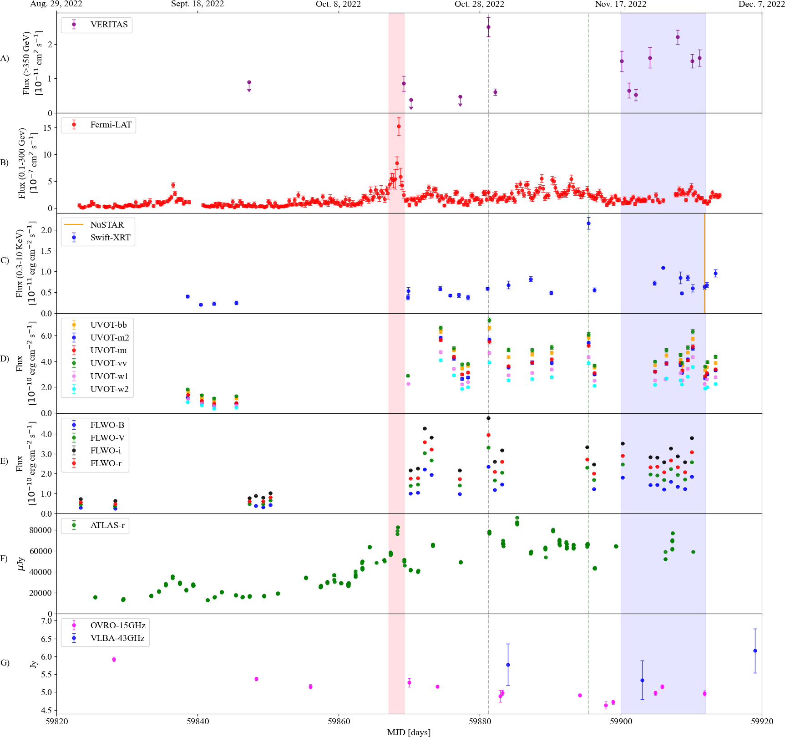
图注：Multiwavelength observations of BL\,Lacertae between MJD~59823 and MJD~59914 (September 1, 2022 - December 1, 2022). The pink and purple narrow bands correspond to the GeV flare epoch and the elevated VHE activity epoch respectively. Vertical dashed grey line indicates October 29, 2022, associated with short-term elevated VHE activity. Vertical dashed green line indicated November 12, 2022, associated with enhanced X-ray activity. \(\textbf{(A)}\) VHE lightcurve for VERITAS observations above an energy threshold of 350 GeV binned per day. Upper limits at 99\% confidence level are quoted for observations with a significance lower than $5\,\sigma$. \(\textbf{(B)}\) \(\emph{Fermi}-LAT\) lightcurve in 6 hour bins in the 0.1--300 GeV band. Gaps correspond to a significance less than $2\sigma$. \(\textbf{(C)}\) \(\emph{Swift}-XRT\) absorption-corrected flux observations in the 0.3--10 keV band. The timing of the NuSTAR observation is indicated by the orange vertical line. \(\textbf{(D)}\) \(\emph{Swift}-UVOT\) flux observations in the w1, w2, m2, uu, bb, and vv band filters. \(\textbf{(E)}\) Optical lightcurve in r, i, V, and B filters using data from the 48” optical telescope at the FLWO. The errors plotted are statistical uncertainties only. \(\textbf{(F)}\) Optical flux observations with ATLAS in the r-band. \(\textbf{(G)}\) Radio flux observations at 15 GHz with OVRO and 43 GHz with VLBA.
对应解读：建议重点查看的图表 1；关键图表逐图导读 图 1；详细解读中关于 2022 年 9–12 月多波段监测和约 40 天 VHE 高态的段落。
入选理由：这是验证本文核心结论的首要图：直接给出 VERITAS、Fermi-LAT、Swift-XRT/UVOT、光学和射电的同一时间轴光变，并明确标出 GeV flare epoch 与 elevated VHE activity epoch。它最能支撑日报强调的“Fermi-LAT 触发后 VERITAS 高态持续约 40 天”，也能避免把未观测间隔误读为低态。
来源与置信度：\(arxiv_source\)；high；\(arxiv_source\) / Fall2022BLLac.tex:figure[2]
Fig03
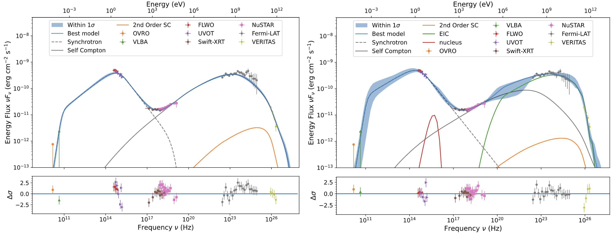
图注：\(\textit{Left:}\) Broadband SED for BL\,Lacertae during the VERITAS elevated VHE activity epoch. The radio SED points from OVRO and VLBA are treated as upper limits for modeling purposes due to a larger integration region, potentially contaminated by extended jet emission. This SED is fit to a single-zone SSC model. \(\textit{Right:}\) The same SED is fit to an SSC model with an additional external inverse-Compton component.
对应解读：建议重点查看的图表 5；关键图表逐图导读 图 4；模型拟合段落关于一带 SSC 与 SSC+EC/EIC 比较、射电点上限和高能峰残差的讨论。
入选理由：这是宽波段 SED 建模的关键图，左右面板直接比较单区 SSC 与加入外部逆康普顿分量后的拟合效果。它对应日报最重要的物理解释：SSC 是否能同时解释 X 射线、GeV 和 TeV 数据，以及 EC/EIC 分量是否真正改善高能峰形状而非仅补归一化。
来源与置信度：\(arxiv_source\)；high；\(arxiv_source\) / Fall2022BLLac.tex:figure[3]
Fig01
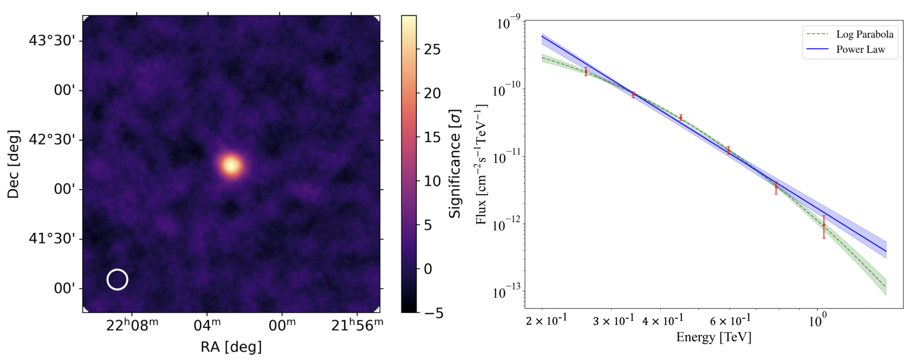
图注：\(\textit{Left:}\) Skymap of the significance observed by VERITAS during the epoch of interest (September 1, 2022 UTC - December 1, 2022 UTC; 59823 - 59914 MJD inclusive) from the direction of BL\,Lacertae. The extent of the VHE source is consistent with the VERITAS point-spread function (PSF). The PSF in this analysis is reduced from prior publications due to the use of the Image Template Method $\gamma$-ray reconstruction (\citealt{christiansen2017characterization}). The PSF reference size is indicated by the white ring located in the bottom left corner of the map. \(\textit{Right:}\) The VHE photon spectrum of BL\,Lacertae observed by VERITAS (red points). The best-fit power-law function is indicated by the solid blue line, and shaded blue region corresponding to a $1\sigma$ bounds. The best-fit log-parabola function is indicated by the dashed green line, and shaded green region corresponding to a $1\sigma$ bounds.
对应解读：建议重点查看的图表 2 和 3；关键图表逐图导读 图 2、图 3；详细解读中关于 VERITAS 约 28σ 探测和 VHE 能谱的结果段落。
入选理由：该图同时包含 VERITAS 显著性天空图和 VHE 光子谱。左图可检查源是否为与 PSF 一致的点源显著超额，支撑约 28σ 探测不是边缘结果；右图给出 TeV 谱点、功率律与对数抛物线拟合及 1σ 置信带，正好对应日报要求检查的 VERITAS 能谱、模型线和高能端误差。
来源与置信度：\(arxiv_source\)；high；\(arxiv_source\) / Fall2022BLLac.tex:figure[1]
Fig06
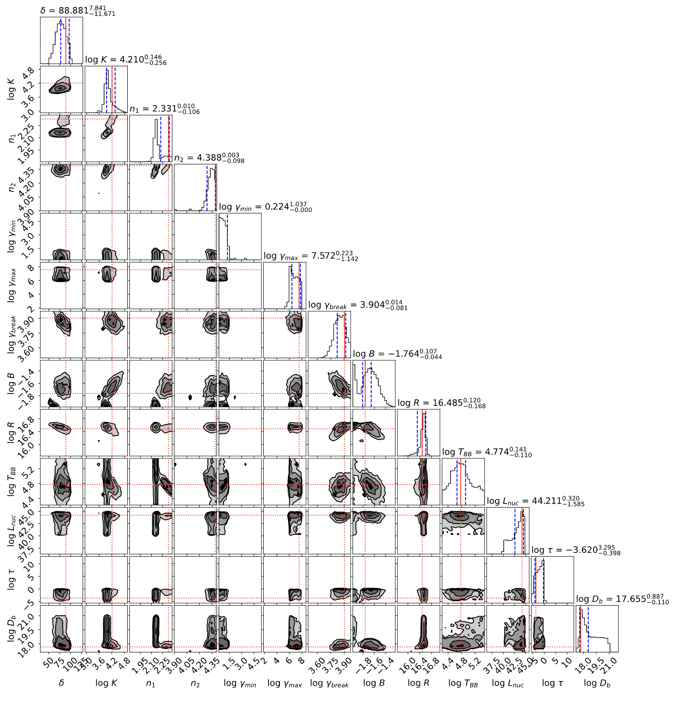
图注：The corner plot of the posterior probability distribution of the free parameters from the SSC+EIC SED fit.
对应解读：建议重点查看的图表 6；关键图表逐图导读 图 5；模型拟合段落关于 SSC+EIC 参数退化、外部光子场和参数合理性的讨论。
入选理由：这是 SSC+EIC 拟合自由参数的后验角图，能展示加入外部逆康普顿分量后参数约束和退化关系。相较只给最佳拟合曲线，它更适合支撑日报中关于 B、δ、R、电子谱参数和外部场能量密度是否存在退化或极端值的解读。
来源与置信度：\(arxiv_source\)；high；\(arxiv_source\) / Fall2022BLLac.tex:figure[6]
Fig05
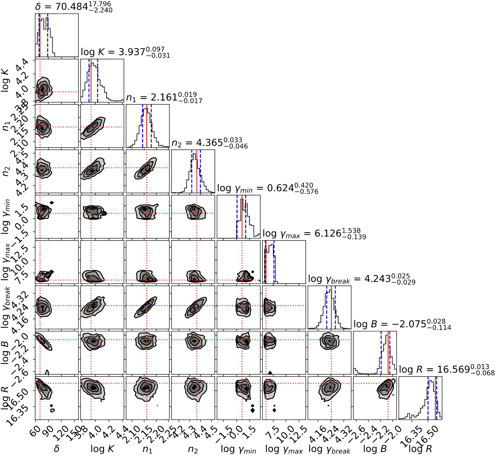
图注：The corner plot of the posterior probability distribution of the free parameters from the one-zone SSC SED fit.
对应解读：建议重点查看的图表 6；关键图表逐图导读 图 5；模型拟合段落关于单区 SSC 参数退化和模型压力的讨论。
入选理由：这是单区 SSC 拟合参数的后验角图，可与 Fig06 的 SSC+EIC 后验形成对照，帮助判断模型偏好是否只是增加参数造成，或单区 SSC 是否需要不自然的参数组合。它对理解日报中“单区 SSC 难以同时复现同步段和伽马射线段”的论点有辅助价值。
来源与置信度：\(arxiv_source\)；high；\(arxiv_source\) / Fall2022BLLac.tex:figure[5]
Fig04
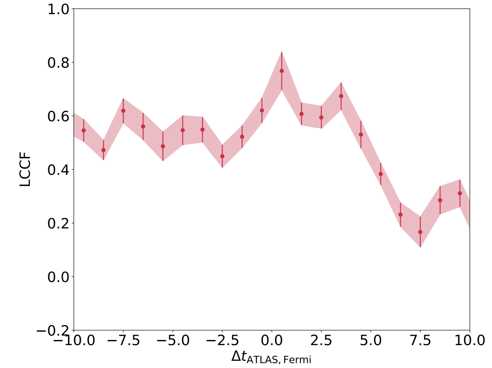
图注：Local cross-correlation function (LCCF, \citealt{Welsh_1999}) calculated between the observed GeV emission and ATLAS measurements during the GeV flare epoch. The x-axis represents the time delay, $\Delta t _{ATLAS,Fermi} = t_{ATLAS} -t_{Fermi}$, in days between the \(\textit{Fermi}-LAT\) and ATLAS lightcurves (\citealt{2023Galax..11...81A}). The corresponding shaded regions indicate the error bounds of the LCCFs. There is very strong correlation between them, noting the most significant of these peaks at a correlation consistent with zero delay. This could suggest a co-spatial production site for the observed optical and GeV emission.
对应解读：建议重点查看的图表 4；详细解读中关于 Fermi-LAT GeV 高态与光学活动关系、可能共空间辐射区的讨论。
入选理由：该图给出 GeV 与 ATLAS 光学数据的局部互相关函数及误差带，能补充说明 GeV flare 与低能辐射的时间关联，尤其是零时延附近的强相关峰。不过它不直接展示 TeV 长持续高态或 SSC/EC 模型优劣，因此科学优先级低于光变、SED 和 VERITAS 诊断图。
来源与置信度：\(arxiv_source\)；high；\(arxiv_source\) / Fall2022BLLac.tex:figure[4]
强相关工作
这篇工作应放在 BL Lacertae 的同一源历史观测中理解。需要检索的关键词包括 “BL Lacertae VERITAS VHE flare”, “BL Lacertae MAGIC TeV flare”, “VER J2202+422”, “BL Lacertae multiwavelength campaign”, “BL Lacertae SSC EC modeling”。同一源论文通常关注短时标 TeV flare、光学偏振旋转、GeV 高态或 VLBI 结构变化；本文的新意是长持续 VHE 活动及其对一带 SSC 的压力。
同类工作包括对 Markarian 421、Markarian 501、PKS 2155-304 等 TeV blazar 长短时标 flare 的多波段建模。这些源常被用来测试 SSC、磁重联、湍流多区模型和外部光子场的必要性。与这些高同步峰 BL Lac 相比，BL Lacertae 的低频峰性质和可能外部场使它更接近 BL Lac 与 FSRQ 的过渡情形。
理论基础可检索 “synchrotron self-Compton blazar model”, “external Compton blazar jet”, “one-zone leptonic model degeneracy”, “blazar SED modeling review”。相反观点或张力主要来自两类：一类认为 BL Lac 型对象原则上应由 SSC 主导，EC 不是必要成分；另一类认为单区 leptonic 模型本身过于简化，长持续高态更可能来自多区或喷流结构变化。
同一事件 / 同类源线索：
相似工作：
（未提供）
基础理论 / 方法工作：
相反观点 / 张力线索：
（未提供）
3. Discovery of $γ$-Ray Pulsations from the Extreme-Spin-Down Millisecond Pulsar PSR J0435+3233
- 来源：arXiv / astro-ph.HE
- 链接：https://arxiv.org/abs/2607.16119v1
- 作者：Mengqing Zhang, Shengbin Pei, Pengfei Zhang
- 评分：novelty 8/10，importance 7/10，relevance 10/10，final 9.35/10
- 推荐理由：Fermi-LAT 发现极端自旋减慢毫秒脉冲星的伽马射线脉动，约 6.8σ，并给出异常低伽马效率；伽马射线脉冲星新源结果，高相关。
中文题目：发现极端自转减速毫秒脉冲星 PSR J0435+3233 的伽马射线脉动
做了什么：这篇文章用约 17 年的 Fermi-LAT 数据寻找新近发现的毫秒脉冲星 PSR J0435+3233 的高能辐射对应体。作者把距离射电计时位置仅约 \(0.01^\circ\) 的 4FGL J0435.5+3232 识别为其伽马射线候选对应源，并在射电星历有效时间段内用相位折叠发现约 \(6.8\sigma\) 的伽马射线脉动，脉冲主要集中在转动相位 \(\phi\simeq0.44\)--\(0.69\)。最反直觉的结果是：这颗脉冲星的自转能损失率高达 \(\dot{E}=5.89\times10^{37}\,{\rm erg\,s^{-1}}\)，但若取距离 \(d=1.2\,{\rm kpc}\) 且假设各向同性辐射，伽马射线光度只有 \(L_\gamma=6.26\times10^{32}\,{\rm erg\,s^{-1}}\)，表观效率 \(\eta_\gamma\simeq1.1\times10^{-5}\)，远低于典型伽马射线毫秒脉冲星。
为什么重要：毫秒脉冲星通常被看作老年中子星经吸积再加速后的稳定自转钟，而 PSR J0435+3233 兼具毫秒周期和类似年轻高能脉冲星的巨大 \(\dot{E}\)。如果它确实只有极低的表观伽马射线效率，那么简单的“自转能越大、伽马射线越亮”的经验图像就不够了，必须认真考虑磁层加速区位置、束流方向、观测视线和距离误差。
理论 / 观测 / 仪器方法价值：这项工作的价值主要在观测和方法两方面：一是为 PSR J0435+3233 建立了 Fermi-LAT 高能对应体和相干脉动证据，使它进入伽马射线毫秒脉冲星样本；二是给出一个极端参数点，可用于检验外磁层、槽隙、外间隙、条纹风或更一般的几何束流模型。它也提醒后续 Fermi-LAT 或 CTA 相关搜索不能只按 \(\dot{E}/d^2\) 排序来预期可探测性。
为什么应该关注：如果你关心脉冲星磁层、电磁级联、毫秒脉冲星族群演化或 Fermi-LAT 弱源识别，这篇文章值得看。它不是简单多发现一颗伽马射线 MSP，而是把一个高 \(\dot{E}\)、低 \(L_\gamma\)、低 \(\eta_\gamma\) 的异常对象摆到了模型面前：究竟是束流没有扫过我们、磁层辐射效率真的低、距离或星历存在系统误差，还是这类极端自转减速 MSP 的形成和高能辐射本就不同？
展开详细解读：文章讲解、背景、理论、重点章节、图表与相关工作
文章详细讲解
科学问题：PSR J0435+3233 的特殊性在于它被归入毫秒脉冲星，但给出的周期导数 \(\dot{P}=4.9\times10^{-17}\,{\rm s\,s^{-1}}\) 和自转能损失率 \(\dot{E}=5.89\times10^{37}\,{\rm erg\,s^{-1}}\) 极端偏大。典型伽马射线 MSP 的 \(\dot{E}\) 通常远低于年轻 Crab-like 脉冲星，而这颗源看起来有年轻高能脉冲星级别的转动能预算。核心问题因此很直接：它是否发出可相干折叠的伽马射线脉动？如果发出，其光度和效率是否符合 MSP 族群的经验标度？
作者怎么做：文章利用约 17 年 Fermi-LAT 观测数据，首先在空间上考察射电计时位置附近的 4FGL 源。4FGL J0435.5+3232 与射电位置相差仅约 \(0.01^\circ\)，这在 LAT 的角分辨率和源关联语境下是一个强候选对应体。随后作者没有只依赖位置重合，而是使用射电计时星历有效区间内的伽马射线光子进行相位赋值和折叠，寻找与脉冲星自转相位同步的周期信号。相位分辨分析进一步把事件分成脉冲相位区和非脉冲相位区，以检验辐射是否集中在特定相位。
关键结果：作者报告伽马射线脉动显著性约为 \(6.8\sigma\)，脉冲主要出现在 \(\phi\simeq0.44\)--\(0.69\)。这个相位窗口不是均匀背景涨落应有的平坦分布，而是指向真实的转动调制。能谱和通量拟合给出在假设 \(d=1.2\,{\rm kpc}\) 且各向同性辐射时的 \(L_\gamma=6.26\times10^{32}\,{\rm erg\,s^{-1}}\)，由此得到 \(\eta_\gamma=L_\gamma/\dot{E}\simeq1.1\times10^{-5}\)。对比 \(\dot{E}\) 如此高的对象，这个 \(\eta_\gamma\) 低得异常，是本文最值得关注的物理结论。
局限和下一步：最明显的局限来自射电星历有效区间、距离估计、LAT 弱源背景建模以及束流修正。文中采用的 \(L_\gamma\) 是各向同性等效光度，若真实束流修正因子 \(f_\Omega\) 很小或视线只扫到脉冲束边缘，表观效率会偏低。另一方面，若 \(\dot{P}\) 包含运动学项、双星加速度项或星历系统误差，真实 \(\dot{E}\) 可能与表观值不同。下一步需要更长基线射电计时、更稳健的本征 \(\dot{P}\) 修正、相位连接的多波段观测，以及用几何磁层模型拟合射电和伽马射线相位差来区分“低效率”和“束流错位”。
关键结果是怎么做出来的
数据和样本选择的证据链是本文的第一层关键。作者从 Fermi-LAT 约 17 年公开数据出发，但用于脉动搜索的核心光子并非全时段简单叠加，而是限制在射电计时星历可可靠外推的时间区间内。这样做牺牲了一部分曝光，却避免了相位漂移把真实脉冲洗平。空间上，候选伽马射线源为 4FGL J0435.5+3232，与 PSR J0435+3233 的射电位置相距约 \(0.01^\circ\)，因此源关联不只靠亮度预期，而是先由目录源定位提供候选，再由相位调制给出物理确认。
事件层面的处理应重点看两个量：每个 LAT 光子的相位 \(\phi_i\) 和权重 \(w_i\)。弱源脉动搜索通常需要用光谱空间模型估计某个光子来自目标源而非弥散背景或邻近源的概率；即使文章摘要没有展开细节，读者也应检查正文是否使用了加权 \(H\)-test、加权相位直方图或类似统计量。约 \(6.8\sigma\) 的显著性若来自相位均匀性检验，需要看是否计入了搜索窗口、能量阈值、ROI 半径、相位区间选择等试验因子。
最重要的观测结果由相位分布支撑：脉冲辐射集中在 \(\phi\simeq0.44\)--\(0.69\)，这给出了一个可用于相位分辨能谱的 on-pulse 窗口。读者应检查相位直方图中非脉冲区是否平坦、脉冲峰是否随能量或权重选择保持稳定，以及峰的位置是否与射电相位定义一致。若峰形较宽或只有单峰，几何模型解释会与典型双峰外磁层 MSP 不同；若峰只在某个能段出现，则背景或能谱建模的系统误差更需要警惕。
光度和效率结果来自通量拟合而非脉冲检验本身。作者给出 \(L_\gamma=6.26\times10^{32}\,{\rm erg\,s^{-1}}\)，采用 \(d=1.2\,{\rm kpc}\) 和各向同性辐射，因此读者要追踪能量通量 \(G_\gamma\) 的拟合误差、距离误差和是否包含束流修正。\(\eta_\gamma\simeq1.1\times10^{-5}\) 的异常低值很大程度上由极高的 \(\dot{E}\) 驱动；如果 \(\dot{P}\) 有显著运动学修正，效率结论可能变化，但要把 \(\eta_\gamma\) 推回典型 MSP 水平需要相当大的修正。
稳健性方面，最该关注的是作者如何证明 4FGL J0435.5+3232 不是邻近未建模源、弥散背景结构或 AGN 变源污染。理想情况下，论文应给出 TS 图、源位置误差椭圆、加入或移除候选源后的残差图、不同能量下的脉动显著性，以及相位分辨似然拟合。若这些检验都支持同一位置、同一相位窗口和稳定能谱，那么 \(6.8\sigma\) 脉动就足以把该源纳入伽马射线 MSP 样本；若某些检验缺失，则结论仍成立但后续复核价值更高。
展开背景、理论、公式、模型、章节和图表导读
背景知识
毫秒脉冲星是周期在毫秒量级的中子星，通常通过双星吸积“再循环”形成。它们磁场较低、自转极快、计时稳定，是脉冲星计时阵列、致密物态和高能辐射研究的重要对象。Fermi-LAT 发射后，大量 MSP 被发现具有 GeV 伽马射线辐射，说明低磁场老年中子星也能在磁层中维持高能粒子加速和曲率辐射。
历史上，伽马射线脉冲星的一个核心经验量是自转能损失率 \(\dot{E}\) 及其距离归一化量 \(\dot{E}/d^2\)。直观上，\(\dot{E}\) 越大、距离越近，越容易被 LAT 探测到。但这种排序只是探测优先级，不是严格光度定律。伽马射线效率 \(\eta_\gamma\) 在不同脉冲星之间散布很大，尤其受束流几何、距离、磁倾角、视线角以及本征 \(\dot{P}\) 修正影响。
PSR J0435+3233 之所以现在值得重新看，是因为它被报告具有非常大的 \(\dot{P}\) 和 \(\dot{E}\)，几乎把 MSP 和年轻高能脉冲星之间的传统分界搅乱。如果它的高 \(\dot{E}\) 是本征的，那么它应当是检验极端 MSP 磁层电压、粒子加速饱和和辐射束流的好对象；如果高 \(\dot{E}\) 受运动学或双星动力学污染，那么它又是提醒我们谨慎解释 \(P\)--\(\dot{P}\) 图的案例。
观测背景方面，Fermi-LAT 的 GeV 数据适合做多年累计的弱源搜索，但点扩散函数、银河弥散辐射、源拥挤和时间星历精度都会限制结果。对于脉冲星，位置重合只是候选关联，真正有力的证据是相干脉动。射电星历给出的相位模型如果不能覆盖 LAT 数据全时段，就必须只使用有效区间或重新计时，否则脉冲会被相位噪声、频率误差和频率导数误差洗掉。
该领域常见误区有三类。第一，把 \(\dot{E}\) 当作伽马射线光度的线性预测器，忽视束流和效率散布。第二，把目录源空间重合直接等同于物理对应体，忽略相位脉动才是脉冲星高能识别的黄金标准。第三，把各向同性等效 \(L_\gamma\) 当成真实总辐射功率，忘记实际辐射可能只覆盖有限立体角，需引入束流修正因子 \(f_\Omega\)。
基础理论 / 方法脉络
基础物理图像从转动中子星的能量库开始。脉冲星的可用能量主要来自转动动能，随时间因磁偶极辐射、粒子风和磁层电流损失。可观测的周期 \(P\) 和周期导数 \(\dot{P}\) 决定表观自转能损失率 \(\dot{E}\)。对 MSP 而言，虽然表面偶极磁场通常低于年轻脉冲星，但极短的 \(P\) 仍可提供很大的开放磁力线电压，使电子和正电子被加速到产生 GeV 曲率辐射的能量。
伽马射线脉动来自磁层辐射区随中子星自转扫过视线。外磁层模型、槽隙模型、外间隙模型和条纹风模型都能产生相位集中的 GeV 峰，但它们对峰的宽度、射电到伽马射线的相位延迟、双峰间隔和能谱截止有不同预言。因此本文发现的 \(\phi\simeq0.44\)--\(0.69\) 脉冲窗口不仅是探测证据，也包含几何信息。
观测方法上，LAT 记录每个光子的到达时间、方向、能量和事件类型。对脉冲星搜索，需要把光子到达时刻校正到太阳系质心，再用射电计时模型计算转动相位 \(\phi\)。若源很弱，通常还要根据空间和能谱模型给每个光子一个源概率权重 \(w_i\)，以提高相位均匀性检验的灵敏度。本文的 \(6.8\sigma\) 结果本质上是证明这些相位不是均匀分布。
能谱方面，GeV 脉冲星常用幂律乘指数截止模型描述。拟合给出能量通量 \(G_\gamma\)，再用距离 \(d\) 转换为各向同性等效光度 \(L_\gamma\)。但这个光度依赖距离平方，并且真实辐射有束流修正；因此 \(\eta_\gamma=L_\gamma/\dot{E}\) 是“表观效率”，不是一定等于磁层把自转能转成伽马射线的真实全局效率。
主要退化关系包括：距离 \(d\) 与 \(L_\gamma\) 的二次退化，束流因子 \(f_\Omega\) 与效率的线性退化，\(\dot{P}\) 的本征值与运动学修正的退化，以及背景模型与弱源通量的退化。PSR J0435+3233 的异常低 \(\eta_\gamma\) 可能是物理上真实低效率，也可能是几何上我们只看到了束边，或是 \(\dot{E}\) 被高估；区分这些可能需要多波段相位对齐和更精细的计时。
公式与推导
第一步从转动动能出发。若中子星转动惯量为 \(I\)、角频率为 \(\Omega=2\pi/P\)，转动能为
这里 \(P\) 是自转周期。该式说明毫秒脉冲星即使磁场较弱，也因 \(P\) 很小而有很大的转动能库。
第二步对时间求导，得到表观自转能损失率
通常取 \(I\simeq10^{45}\,{\rm g\,cm^2}\)。本文给出的 \(\dot{E}=5.89\times10^{37}\,{\rm erg\,s^{-1}}\) 正是由 \(P\) 和 \(\dot{P}\) 推得；但若 \(\dot{P}\) 含有运动学项，右侧应使用本征 \(\dot{P}_{\rm int}\)。
第三步写出常用偶极表面磁场估计
该式假设真空磁偶极制动、典型中子星半径和转动惯量。它不是本文探测伽马射线的直接公式，但帮助判断 PSR J0435+3233 在 \(P\)--\(\dot{P}\) 图上的异常位置。
第四步，LAT 能谱拟合通常可用指数截止幂律近似：
其中 \(K\) 是归一化，\(E_0\) 是标度能量，\(\Gamma\) 是光子指数，\(E_{\rm c}\) 是截止能量，\(b\) 控制截止形状。对脉冲星，\(b\simeq1\) 的指数截止常见，能量通量由该模型积分得到。
第五步，把微分谱转为能量通量：
\(G_\gamma\) 是单位面积单位时间接收到的能量流，通常在 LAT 的分析能段内给出。本文的 \(L_\gamma\) 等价于由拟合的 \(G_\gamma\) 和距离 \(d=1.2\,{\rm kpc}\) 换算而来。
第六步，若假设各向同性辐射，光度为
更一般地，脉冲星束流应写成
其中 \(f_\Omega\) 是束流修正因子。本文摘要中的数值对应 \(f_\Omega=1\)，因此应称为各向同性等效光度或表观光度。
第七步，伽马射线效率定义为
代入 \(L_\gamma=6.26\times10^{32}\,{\rm erg\,s^{-1}}\) 和 \(\dot{E}=5.89\times10^{37}\,{\rm erg\,s^{-1}}\)，得到 \(\eta_\gamma\simeq1.1\times10^{-5}\)。这个数值的物理含义是：在各向同性假设下，只有极小比例的表观自转能损失以 LAT 能段伽马射线形式被观测到。
第八步，相位折叠把每个光子的到达时刻 \(t_i\) 映射到转动相位：
这里 \(\nu=1/P\)，\(\dot{\nu}\) 是频率导数，\(t_0\) 是星历参考历元。只有当射电星历在所用时间区间内有效时，相干脉冲峰才不会被相位漂移抹平。
第九步，弱源脉动显著性可用加权相位统计量表达。例如加权傅里叶功率可写为
其中 \(w_i\) 是第 \(i\) 个光子来自目标源的概率权重，\(m\) 是谐波数。类似 \(H\)-test 的统计量会在不同 \(m\) 间选择最显著的非均匀性，并把尾概率换算为 \(\sigma\) 显著性。
第十步，源探测和谱拟合常用泊松似然：
这里 \(n_j\) 是第 \(j\) 个能量-空间 bin 的观测计数，\(\mu_j\) 是源模型、弥散背景和邻近源共同预测的计数。源存在性常用
其中 \(\mathcal{L}_1\) 包含目标源，\(\mathcal{L}_0\) 不包含目标源。读者可用该式理解 4FGL 源关联、通量拟合和残差检验之间的统计逻辑。
模型拟合 / 应用方法
本文涉及两类拟合：空间-能谱似然拟合和相位脉动统计。空间-能谱拟合的观测量是 LAT 光子的方向、能量和时间，模型包含目标源 4FGL J0435.5+3232、邻近 4FGL 源、银河弥散辐射、各向同性背景以及仪器响应。目标源通常用幂律或指数截止幂律谱描述，拟合输出包括光子通量、能量通量、谱指数、截止能量和源存在性的 \(TS\)。
相位分析依赖射电计时解。拟合或折叠的关键量不是重新从伽马射线中搜索未知周期，而是用已知 \(P\)、\(\dot{P}\) 和位置把光子相位化，然后检验 \(\phi_i\) 是否偏离均匀分布。若采用加权 \(H\)-test，权重 \(w_i\) 来自空间-能谱模型；因此谱模型和背景模型会间接影响脉动显著性。读者应注意，脉动检验的独立性和试验因子处理决定了 \(6.8\sigma\) 的可信解释。
参数退化很突出。\(L_\gamma\) 与 \(d^2\) 成正比，距离误差会直接放大为光度误差；\(\eta_\gamma\) 又与 \(\dot{E}^{-1}\) 成正比，若 \(\dot{P}\) 的本征值被 Shklovskii 效应、银河加速度或双星加速度污染，效率会系统偏移。谱指数 \(\Gamma\)、截止能量 \(E_{\rm c}\) 和背景归一化也可能在弱源情形下相互耦合，尤其在低纬度或弥散背景复杂区域。
残差诊断应看三个层面。第一是空间残差：加入 4FGL J0435.5+3232 后，ROI 中是否仍有系统性正残差。第二是能谱残差：指数截止谱是否显著优于简单幂律，或通量是否由少数高权重能段支配。第三是相位残差：off-pulse 区是否与背景模型一致，on-pulse 区是否在不同事件类、能量阈值和时间子样本中保持同相位增强。
模型可能失败的场景包括：射电星历在 LAT 时间段内不完全相干，导致脉冲显著性被低估或峰形变宽；邻近源或弥散背景误建模，导致能量通量偏高或偏低；距离估计不准，导致 \(L_\gamma\) 和 \(\eta_\gamma\) 的物理解释改变；束流几何极端，导致各向同性等效效率不能代表真实辐射效率。实际应用上，这篇文章提供了一个可放入 MSP 族群图的极端点，但在做人口合成或磁层模型拟合时应显式传播这些系统误差。
重点章节 / 结果段落怎么读
-
数据和目标源关联部分：优先看作者如何选择 Fermi-LAT 数据时间范围、能量范围、ROI 半径、事件类别和质量筛选。这里决定了背景水平和有效曝光。还要看 4FGL J0435.5+3232 与射电位置 \(0.01^\circ\) 的对应关系是否落在 LAT 定位误差内，以及附近是否有可能混淆的 4FGL 源。
-
计时和相位折叠部分：这是全文可信度的核心。读者应检查射电星历覆盖的起止时间、是否做了太阳系质心改正、是否包含 \(\nu\)、\(\dot{\nu}\) 或更高阶项，以及只在星历有效区间内分析的理由。若论文给出加权 \(H\)-test 或相位直方图，这一节应与显著性数值一起读。
-
相位分辨分析部分：重点看 on-pulse 窗口 \(\phi\simeq0.44\)--\(0.69\) 如何定义，是否事先由峰形确定，是否有 off-pulse 背景对照。相位分辨能谱能说明辐射是否真正与脉冲峰同步，也可排除稳态背景源对总通量的污染。
-
能谱和光度估计部分：读者应追踪从能量通量 \(G_\gamma\) 到 \(L_\gamma=6.26\times10^{32}\,{\rm erg\,s^{-1}}\) 的换算，确认采用的距离 \(d=1.2\,{\rm kpc}\)、能段、谱模型和统计误差。效率 \(\eta_\gamma\simeq1.1\times10^{-5}\) 是本文最强的物理结论，但也是最依赖 \(d\)、\(\dot{P}\) 和束流假设的结论。
-
讨论部分：重点看作者如何把 PSR J0435+3233 放进已知伽马射线 MSP 的 \(L_\gamma\)--\(\dot{E}\)、\(\eta_\gamma\)--\(\dot{E}\) 或 \(G_\gamma\)--\(\dot{E}/d^2\) 图中。若讨论涉及外磁层几何、粒子加速效率或观测视线，读者应区分哪些是数据直接支持，哪些是模型解释。
建议重点查看的图表
-
ROI TS 图或源位置图：看 4FGL J0435.5+3232 与射电位置的角距离、定位误差椭圆、附近源分布和残差结构，判断空间关联是否稳健。
-
全相位伽马射线脉冲轮廓图：看横轴相位 \(\phi\)、纵轴加权计数或计数率，重点检查 \(\phi\simeq0.44\)--\(0.69\) 的峰是否显著高于 off-pulse 背景。
-
加权 \(H\)-test 或显著性诊断表：看统计量、尾概率、等效 \(\sigma\)、是否计入试验因子，以及不同事件选择下显著性是否稳定。
-
相位分辨谱或 on/off-pulse 光谱图：看 on-pulse 能谱是否与脉冲星常见指数截止谱一致，off-pulse 是否仅剩背景或非脉冲源贡献。
-
宽能段 SED 图：看能量通量点、最佳拟合谱线、上限、谱指数和截止能量的不确定性，判断 \(G_\gamma\) 是否由少数 bin 主导。
-
\(L_\gamma\)--\(\dot{E}\) 或 \(\eta_\gamma\)--\(\dot{E}\) 族群比较图：看 PSR J0435+3233 相对已知 MSP 和年轻脉冲星的位置，尤其是它是否显著偏离经验带。
-
系统误差或稳健性检验表：看改变 ROI、能量阈值、背景模型、星历时间段后，通量、脉动显著性和相位峰是否保持一致。
关键图表逐图导读
图 1：若论文给出 LAT 计数图、TS 图或残差图，横纵轴通常是赤经和赤纬，图中会标出 PSR J0435+3233 的射电计时位置、4FGL J0435.5+3232 的目录位置以及可能的误差圈。读图重点是两者 \(0.01^\circ\) 的偏移相对定位误差是否足够小，以及加入目标源后周围是否仍有未建模正残差。陷阱是 LAT 点扩散函数随能量变化很大，低能图上的视觉重合不能单独证明关联。
图 2：相位折叠光变曲线应是最关键图。横轴为转动相位 \(\phi\)，通常显示 \(0\)--\(1\) 甚至重复两个周期；纵轴为计数、加权计数或归一化强度。模型线或阴影可能标出背景水平和 on-pulse 区间。主要结论是 \(\phi\simeq0.44\)--\(0.69\) 存在集中增强。读图陷阱是相位窗口若由同一数据后验选取，显著性解释必须考虑选择效应。
图 3：若有加权统计量或显著性随能量阈值、ROI、时间区间变化的图，横轴可能是能量下限、时间或选择方案，纵轴为 \(H\)-test 值或等效显著性。理想情况是显著性在合理选择范围内稳定，而不是只在某个精细调参点达到峰值。读者应留意是否有多个搜索设置，若有，最终 \(6.8\sigma\) 是否已经折算试验因子。
图 4：SED 或能谱图通常横轴为能量 \(E\)，纵轴为 \(E^2dN/dE\) 或能量通量。数据点带统计误差，上限表示低显著性能段，曲线为最佳拟合幂律或指数截止模型。主要结论是积分能量通量对应 \(L_\gamma=6.26\times10^{32}\,{\rm erg\,s^{-1}}\)。陷阱是弱源 SED 的单个高能 bin 可能权重很大，背景模型误差会直接影响通量。
图 5：相位分辨图可能把 on-pulse 和 off-pulse 的谱或 TS 分开。横轴仍为能量或相位，纵轴为通量、TS 或计数。读者要看 on-pulse 是否显著高于 off-pulse，并且 off-pulse 是否符合背景预期。如果 off-pulse 仍有明显稳态源成分，则 4FGL 源的总通量不一定全部属于脉冲星脉冲辐射。
图 6：族群比较图通常横轴为 \(\dot{E}\) 或 \(\dot{E}/d^2\)，纵轴为 \(L_\gamma\) 或 \(\eta_\gamma\)。PSR J0435+3233 应位于高 \(\dot{E}\) 但低 \(\eta_\gamma\) 的异常区域。读图陷阱是不同文献可能采用不同距离、能段和束流因子；比较时应把这些系统差异与物理离群区分开。
论文原图 / 可嵌入图片
（未提供 verified figure；为避免编造图片链接，本节只在能确认官方图片 URL 或成功提取论文原图时嵌入图片。）
强相关工作
这篇工作属于同一类源研究：Fermi-LAT 伽马射线毫秒脉冲星的发现、计时和族群统计。应与 Fermi-LAT 脉冲星目录、MSP 伽马射线发现论文以及 4FGL 源目录一起读。检索关键词可用 “Fermi LAT millisecond pulsar catalog”, “gamma-ray pulsations millisecond pulsars”, “4FGL J0435.5+3232”, “PSR J0435+3233 radio timing”, “gamma-ray efficiency pulsars”。
从理论关系看，本文与外磁层辐射模型、槽隙模型、外间隙模型和条纹风模型相关。其张力不在于是否能产生 GeV 脉冲，而在于极高 \(\dot{E}\) 下为何表观 \(L_\gamma\) 和 \(\eta_\gamma\) 很低。相反观点或替代解释包括：距离被低估或高估、\(\dot{P}\) 非本征、束流修正 \(f_\Omega\) 极端、4FGL 源存在未解析污染、星历有效期导致只使用部分曝光。检索关键词可用 “Shklovskii correction millisecond pulsar spin-down”, “beaming correction gamma-ray pulsars”, “outer magnetosphere models MSP”。
同一源方面，目前给定信息中最可靠的公开入口是本文 arXiv 页面以及 4FGL 目录对象名。若要找射电发现论文，应检索 “PSR J0435+3233 discovery”, “extreme spin-down millisecond pulsar PSR J0435+3233”, “radio timing PSR J0435+3233”。在没有核实 DOI 或 arXiv 编号前，不应随意填写同源发现论文链接。
同一事件 / 同类源线索：
相似工作：
基础理论 / 方法工作：
- https://arxiv.org/abs/astro-ph/0612374
- https://arxiv.org/abs/0711.4278
- https://arxiv.org/abs/0802.3931
相反观点 / 张力线索：
（未提供）
4. Non-thermal emission from the vicinity of the magnetar CXOU J171405.7-381031
- 来源：arXiv / astro-ph.HE
- 链接：https://arxiv.org/abs/2607.15955v1
- 作者：Manoel F. Sousa, Rita. C. Anjos
- 评分：novelty 7/10，importance 7/10，relevance 10/10，final 9.05/10
- 推荐理由：围绕 magnetar/SNR CTB 37B 的 GeV-TeV 多波段建模，涉及 H.E.S.S. 最高能端、强子贡献和 CTAO 可检验性；对伽马射线/PeVatron 候选研究高度相关。
中文题目：Non-thermal emission from the vicinity of the magnetar CXOU J171405.7-381031
做了什么：本文研究磁星 CXOU J171405.7-381031 及其宿主/关联超新星遗迹 CTB 37B 周围的非热辐射起源。作者整合射电到 TeV 的多波段 SED，并用 MCMC 约束带指数截止的粒子谱模型，比较 SNR 框架下的纯轻子模型、轻子-强子混合模型以及磁星风星云解释。
主要结论是：纯轻子模型可以复现整体宽波段谱形，但在 H.E.S.S. 最高能通量处略显不足；轻子-强子模型在 $\gtrsim10\\,\mathrm{TeV}$ 处更好，其中 GeV 段主要由电子逆康普顿散射贡献，而最高能端可由 $\pi^0$ 衰变补足。不过，低密度环境下所需质子能量达到或超过 $10^{51}\\,\mathrm{erg}$ 量级，只有在 SNR 与较致密介质/分子云相互作用时才明显缓解。磁星风星云模型谱上可行，但由于 TeV/GeV/SNR 形态不支持其作为主源而被削弱。作者进一步指出，约 50 h CTAO 观测有望约束质子截止能量，从而检验强子成分。
为什么重要：本文重要性在于它把“磁星是否能产生高能粒子”和“SNR 是否在该区域加速强子宇宙线”这两个问题放入同一可观测框架中检验。CXOU J171405.7-381031 / CTB 37B 区域的 GeV--TeV 辐射并非只有一种自然解释，因而它是研究轻子/强子退化、源混淆和形态判别的好案例。
更具体地说，论文指出当前数据下纯轻子和轻子-强子模型都可接受，但 $>10\\,\mathrm{TeV}$ 的 H.E.S.S. 高能端倾向于需要额外硬分量；若该分量来自质子，则必须面对 $W_{\rm p}$ 与环境密度的强约束。CTAO 约 50 h 观测可能直接测量或限制质子截止能量，使这个系统从“模型解释题”变成未来可证伪的强子加速测试。
理论 / 观测 / 仪器方法价值：本文的理论价值在于把磁星、SNR 冲击波和强子宇宙线加速三个问题放在同一观测场中比较，而不是预设某一种起源。它展示了在复杂银河平面源中，SED 拟合必须与形态和能量预算共同使用，否则纯谱模型会产生高度非唯一的解释。
观测价值在于系统整理 CTB 37B / CXOU J171405.7-381031 区域从射电到 TeV 的证据链，并明确指出现有 H.E.S.S. 最高能数据是区分模型的关键。方法价值在于使用 MCMC 给出粒子参数约束，并进一步用 CTAO 模拟把当前模型退化转化为未来可检验的观测指标，特别是质子截止能量和 $>10\\,\mathrm{TeV}$ 谱形。
为什么应该关注：这篇论文值得关注，因为它处理的是高能天体物理中最难但最常见的情形：一个银河平面扩展源既有磁星，又有 SNR，又有 GeV/TeV 辐射，还可能与致密气体相互作用。这样的系统如果只看 SED，很容易得到多个“看起来都不错”的模型；本文提醒读者必须同时问辐射区在哪里、能量从哪里来、靶物质是否足够、未来观测能否证伪。
对于关心宇宙线起源的读者，本文提供了一个具体案例：最高 TeV 能段的小幅硬尾可能暗示强子贡献，但能量预算会立即给出严苛约束。对于关心磁星的读者，它也说明磁星附近出现 TeV 辐射并不自动意味着磁星风星云，形态学可能比谱形更有判别力。
展开详细解读：文章讲解、背景、理论、重点章节、图表与相关工作
文章详细讲解
本文的科学问题可以概括为：在 CXOU J171405.7-381031 / CTB 37B 区域，宽波段非热辐射究竟由 SNR 冲击波加速的电子主导，还是存在可观的强子宇宙线成分；如果存在强子成分，它对环境密度和能量预算提出什么要求；磁星本身能否作为主要非热源。这个问题重要但困难，因为同一 SED 可由多种粒子谱组合拟合，只有把 SED、形态和未来高能灵敏度预测结合起来，才能减少模型任意性。
方法上，作者收集射电到 TeV 的多波段数据，构造区域 SED，并在 SNR 框架下比较纯轻子和轻子-强子模型。粒子谱采用带指数截止的幂律形式，并用 MCMC 探索参数空间。纯轻子模型主要由电子同步辐射和逆康普顿散射组成；轻子-强子模型在此基础上加入 $pp$ 碰撞导致的 $\pi^0$ 衰变伽马射线。摘要还说明他们测试了不同环境密度，特别是 $n=5$ 和 $10\\,\mathrm{cm^{-3}}$ 的致密介质情形，以模拟 SNR 与分子云相互作用时所需质子能量的降低。
关键结果是，两类 SNR 模型都能描述伽马射线数据的总体形状，但纯轻子模型在 H.E.S.S. 最高能通量处略偏低，而轻子-强子模型在 $\sim10\\,\mathrm{TeV}$ 以上给出更好的描述。物理解释是 GeV 段仍可由电子逆康普顿主导，而最高能端可由 $\pi^0$ 衰变补足。这个结论需要读者重点检查 Fig.2 与 Fig.3 的模型分量分解：如果强子分量只在最高一两个 TeV 数据点起作用，那么其统计显著性很可能依赖最高能点误差、能量标定和背景估计；如果它在多个高能点连续改善残差，则强子解释更有说服力。
局限集中在三处。第一，强子模型的能量预算在低密度下紧张，摘要给出 $W_{\rm p}\gtrsim10^{51}\\,\mathrm{erg}$，这已接近甚至超过典型 SNR 可投入宇宙线的能量预算；只有在较高气体密度或更有利的距离/体积假设下才更合理。第二，磁星风星云模型虽然能拟合 SED，但被形态排斥，说明谱拟合本身不足以证明辐射起源。第三，GeV--TeV 数据可能来自不同空间区域，把它们合成单一区域 SED 会引入物理混合；读者应检查作者是否统一了积分区域、是否考虑源扩展不一致以及是否在图中展示位置误差。
下一步最直接的修复路径是 CTAO 高能观测。摘要称约 $50\\,\mathrm{h}$ CTAO 模拟观测可约束质子截止能量，这说明当前最大不确定性在 TeV 最高能端的谱形：若未来看到硬尾延伸或截止位置较高，将支持强子贡献或极高能电子；若高能端快速下降，则纯轻子模型或较低截止能量更有利。阅读本文时，建议把 CTAO 模拟不是当作“附加展望”，而是看作作者设计的可证伪实验：它要回答的是现有 H.E.S.S. 高能残差是否真实，以及 $E_{\rm cut,p}$ 是否可被直接约束。
关键结果是怎么做出来的
第一条证据链来自数据整合与形态关联。作者把 CXOU J171405.7-381031 所在的 CTB 37B 区域作为多波段分析对象，使用射电、GeV 和 H.E.S.S. TeV 信息构造 SED，并在 Fig.1 中展示磁星、SNR 射电范围、Fermi-LAT 位置误差和 H.E.S.S. 扩展源的空间关系。这个图是后续模型选择的前提：如果 TeV 辐射主要覆盖 SNR 尺度而非紧贴磁星，SNR 冲击波或壳层/分子云相互作用就比磁星风星云更自然。读者应核查论文是否给出积分区域、使用的 TeV 源名称/扩展、GeV 对应源和射电半径；这些决定了合并 SED 是否物理一致。
第二条证据链是纯轻子模型的成功与失败。Fig.2 的 leptonic-ecpl 模型应展示电子同步加 IC 对宽波段 SED 的拟合。摘要的措辞很谨慎：纯轻子模型能复现总体谱形，但略低估 H.E.S.S. 最高能通量。这意味着作者并没有宣称纯轻子模型被排除，而是指出高能端存在残差趋势。需要重点检查最高能 H.E.S.S. bin 的误差条、是否为显著探测还是接近上限、以及模型线相对多个 TeV 点的系统偏离程度。若偏离仅出现在一个大误差点，强子解释应被视为可能性；若在 $>10\\,\mathrm{TeV}$ 连续偏低，才更支持额外硬分量。
第三条证据链是轻子-强子模型对高能端的改善。Fig.3 的 lepto-hadronic-ecpl 模型加入质子谱和 $\pi^0$ 衰变分量，摘要指出 GeV 段由 IC 主导，最高能端由中性 pion 衰变贡献。这种分工很关键：它避免了强子模型必须同时解释整个 GeV 谱的压力，也使强子证据集中在 H.E.S.S. 最高能端。统计上，读者应寻找论文中的 MCMC 最佳拟合参数、置信区间、$\chi^2$/自由度或似然比较；如果没有 AIC/BIC 或似然比，不能把“改善”读成正式探测，只能读成“在现有数据下更优且物理可检验”。
第四条证据链是能量预算与环境密度。摘要给出低密度下所需 $W_{\rm p}\gtrsim10^{51}\\,\mathrm{erg}$，这是强子解释的主要压力点。Fig.5 通过 $n=5$ 和 $10\\,\mathrm{cm^{-3}}$ 的模型展示若 SNR 与致密环境或分子云相互作用，所需质子能量可显著降低。这里的稳健性检验应包括：密度是否有独立观测支持；距离不确定性如何影响 $W_{\rm p}\propto d^2/n$；电子-质子比 $K_{\rm ep}=10^{-2}$ 是否固定以及改变后结果是否稳定；高密度区域是否与 TeV 形态重合。
第五条证据链是否定磁星风星云作为主解释。摘要说 magnetar wind nebula 场景可复现宽波段谱，但被观测形态强烈反对。这是一条重要的负结果：它说明 SED 拟合存在非唯一性，而形态信息是打破退化的关键。读者应检查作者是否定量比较了磁星位置与 TeV 源中心/扩展、是否讨论了磁星特征年龄和注入功率是否足够、以及是否把点源/小尺度弥散 X 射线与大尺度 TeV 辐射区分开来。
最后一条证据链是 CTAO 可检验性。作者模拟 Cherenkov Telescope Array Observatory 约 50 h 曝光，认为可约束质子截止能量，从而判别强子辐射。这个结果的意义不在于“CTAO 会看到源”本身，而在于它能否测出 TeV 高能端的曲率或延伸。应检查模拟图或表中不同 $E_{\rm cut,p}$ 模型的分离度、统计误差和系统误差是否同时考虑；若只用理想灵敏度而未考虑源扩展和复杂背景，则预测应更保守地理解。
展开背景、理论、公式、模型、章节和图表导读
背景知识
CXOU J171405.7-381031 是位于银河系超新星遗迹 CTB 37B 方向的磁星候选/磁星，其核心特征是自转周期、周期导数和 X 射线性质指向约 $10^{14}$--$10^{15}\\,\mathrm{G}$ 量级的表面偶极磁场。这个区域同时包含射电 SNR、GeV 源和 TeV 源，因此它不是一个“只看磁星”的简单问题，而是一个典型的源混淆场：同一视线方向上可能有爆炸遗迹壳层、磁星风、冲击波加速粒子、分子云靶物质以及银河弥散背景共同参与观测信号。
历史上，CTB 37B / HESS J1713-381 一类对象之所以重要，是因为它们把几个高能天体物理问题叠在一起：SNR 是否能把质子加速到膝区以下的 PeV 能量；磁星是否也能驱动相对论风并产生类 PWN 的非热辐射；GeV 与 TeV 观测中看到的扩展源到底是同一个物理粒子群，还是不同区域、不同机制的投影叠加。本文的动机正来自这个多解性：同一个宽波段 SED 可以被纯轻子模型、轻子-强子混合模型，甚至形式上被磁星风星云模型拟合，但这些解释在能量预算、环境密度和空间形态上给出的物理图像完全不同。
本文研究对象的特殊之处在于，摘要明确指出磁星与 SNR CTB 37B 关联，H.E.S.S. 在甚高能伽马射线看到扩展辐射，Fermi-LAT 在 GeV 能段有对应源，射电到 TeV 的多波段数据可以构造宽能谱能量分布。这样的对象常见误区是把“位置接近”直接等同于“物理起源相同”。事实上，磁星位置、SNR 射电壳层、GeV 位置误差椭圆和 TeV 扩展圆之间的相对关系必须和仪器点扩散函数、源扩展、背景建模一起读；否则很容易把 SNR 壳层辐射误认为磁星风，或把分子云相互作用产生的强子辐射误认为电子逆康普顿辐射。
另一个常见误区是只依据 SED 形状判断辐射机制。纯轻子模型中，电子同步辐射解释射电/X 射线成分，逆康普顿散射解释 GeV--TeV 伽马射线；轻子-强子模型则允许最高能端由 $pp$ 碰撞产生的 $\pi^0$ 衰变补足。由于电子谱截止、磁场强度、靶光子场能量密度、气体密度和源年龄之间存在强退化，仅凭一个平滑的 SED 很难唯一判定强子成分。本文的价值在于把 MCMC 参数约束、H.E.S.S. 最高能通量、致密环境假设以及 CTAO 模拟观测放到同一条证据链中讨论。
阅读时还要注意能量预算问题。摘要中给出的 $W_{\rm p}\gtrsim10^{51}\\,\mathrm{erg}$ 对普通超新星爆炸能量来说非常紧张，除非靶气体密度显著高于 $1\\,\mathrm{cm^{-3}}$ 或距离、填充因子、谱形假设有所改变。因此“强子模型拟合更好”并不自动等价于“强子模型物理上更自然”；它必须同时通过能量预算、环境密度、形态关联和未来 CTAO 高能截止测量的检验。
基础理论 / 方法脉络
理解本文首先要区分三类非热辐射机制。相对论电子在磁场中产生同步辐射，通常约束电子谱和磁场；同一批电子还可以把 CMB、红外和星光光子逆康普顿散射到 GeV--TeV 能段；相对论质子与环境气体碰撞产生 $\pi^0$，随后 $\pi^0\to2\gamma$，形成强子伽马射线。本文的核心问题是：CTB 37B / CXOU J171405.7-381031 周围观测到的 GeV--TeV 辐射，是否只需电子即可解释，还是需要额外的质子成分，特别是在 $\gtrsim10\\,\mathrm{TeV}$ 的高能端。
在 SNR 框架下，通常假设冲击波把粒子加速成幂律加指数截止谱，例如 $dN/dE\propto E^{-\alpha}\exp(-E/E_{\rm cut})$。电子谱的低能部分影响射电同步辐射，高能部分影响 X 射线同步与 TeV 逆康普顿；质子谱则主要通过气体密度 $n$ 与总质子能量 $W_{\rm p}$ 的乘积影响 $\pi^0$ 伽马射线归一化。因此，本文比较 leptonic-ecpl 与 lepto-hadronic-ecpl 时，真正要看的不是哪条曲线“更贴数据点”，而是电子截止能量、磁场、质子截止能量、$W_{\rm p}$ 与 $n$ 是否落在物理可接受范围。
在磁星风星云框架下，磁星自转能损失或磁场能释放可为粒子注入提供功率，形成类似 PWN 的扩展非热星云。SED 上这种模型可能也能产生同步加逆康普顿的宽波段形状，但它对空间形态有额外要求：辐射峰值和扩展应更自然地围绕磁星或其风泡分布，而不是主要追随 SNR 壳层、TeV 扩展或分子云相互作用区域。摘要指出磁星风星云情景可复现宽波段谱但被形态强烈反对，说明本文把形态证据作为打破 SED 退化的重要约束。
统计上，本文使用 MCMC 约束粒子分布参数。对读者而言，关键是搞清楚拟合对象是多波段 SED 点而非事件级数据，似然通常等价于带误差条的 $\chi^2$ 或高斯似然；若包含上限，应检查作者是否用截断似然、单边似然或只作图不拟合。MCMC 后验能显示参数退化，例如 $B$ 与电子能量归一化在同步辐射中反相关，$n$ 与 $W_{\rm p}$ 在强子伽马射线中近似反相关，电子截止能量与靶光子场强度会共同影响 TeV 端。
观测系统误差同样是基础理论的一部分。Fermi-LAT 的 GeV 点受银河弥散模型、邻近源模板和源扩展假设影响；H.E.S.S. 的高能端受有效面积、能量重建、背景区域选择和低计数统计影响；射电通量可能含有壳层不同区域混合；X 射线则要区分磁星点源、弥散辐射和吸收柱密度影响。因此，本文关于“纯轻子模型略低估 H.E.S.S. 最高能通量、轻子-强子模型在 $>10$ TeV 更好”的结论，应当和残差、系统误差带、最高能 bin 的显著性一起解读。
公式与推导
从粒子加速的最小模型开始，SNR 冲击波或磁星风注入的非热粒子常写成带指数截止的幂律：
这里 $N_{0,i}$ 是归一化，$\alpha_i$ 是谱指数，$E_{{\rm cut},i}$ 是电子或质子的截止能量。本文的 leptonic-ecpl 与 lepto-hadronic-ecpl 模型本质上就是对 $i=e$ 或 $i=e,p$ 的这类谱进行辐射计算。
粒子总能量由能谱积分给出：
这个式子让读者把拟合归一化转换成能量预算。对强子模型尤其关键，因为摘要指出低密度下需要 $W_{\rm p}\gtrsim10^{51}\\,\mathrm{erg}$；若这个积分超过可接受的超新星宇宙线能量份额，模型虽然能拟合 SED，也会在物理上变得紧张。
电子同步辐射的特征频率近似为：
其中 $B$ 是磁场，$\gamma_e$ 是电子洛伦兹因子。该式说明射电/X 射线数据同时约束 $B$ 和电子能量分布；若 $B$ 较强，同样的同步通量所需电子数较少，从而也会改变 IC 伽马射线归一化。
在 Thomson 极限下，逆康普顿散射后光子能量近似为：
其中 $\epsilon_{\rm ph}$ 是靶光子能量，如 CMB、红外或星光。这个关系用来判断产生 GeV--TeV 光子所需电子能量，并检查电子截止能量是否与同步辐射约束一致；在 TeV 端还要警惕 Klein--Nishina 效应使 IC 谱变软。
同步与 IC 功率的能量密度标度为：
这给出纯轻子模型的核心退化：增加靶光子能量密度或降低磁场都可提高 IC 相对同步的强度。因此，如果纯轻子模型低估 H.E.S.S. 最高能点，不能立刻说必须有质子，还要检查可允许的 $B$、$U_{\rm ph}$ 和电子截止是否已被其他波段排除。
强子伽马射线的总光度可用近似标度表示为：
这里 $n$ 是靶气体密度，$\sigma_{pp}$ 是非弹性 $pp$ 截面，$\kappa$ 是非弹性能量损失系数，$\eta_\gamma$ 表示进入伽马射线的能量比例。由此得到重要缩放：
其中 $F_\gamma$ 是观测伽马射线能流，$d$ 是距离。这正解释了为什么本文在 $n=5$ 和 $10\\,\mathrm{cm^{-3}}$ 的致密环境中可以显著降低所需 $W_{\rm p}$。
观测 SED 与模型之间通过距离联系：
其中 $Q_E$ 是源本征谱能率。纯轻子模型令 $Q_E^{\pi^0}=0$，轻子-强子模型则加入该项；磁星风星云模型则改变粒子注入功率和空间解释，但辐射项形式可相似。
若以 SED 数据点拟合，常用高斯似然或等价 $\chi^2$：
$\boldsymbol\theta$ 包含谱指数、截止能量、归一化、磁场、密度等参数。MCMC 给出后验
因此读者必须同时查看似然改善和先验设定；如果后验贴着参数边界，所谓“约束”可能只是下限或先验驱动。
比较纯轻子与轻子-强子模型时，可用信息准则作快速诊断：
其中 $k$ 是自由参数数目。加入质子分量一定增加自由度，只有当似然改善足够大、且残差系统性减少时，才可认为强子成分受到数据支持；否则更稳妥的表述是“轻子-强子模型提供了可行且在最高能端更好的解释”。
模型拟合 / 应用方法
本文拟合的核心量是宽波段 SED，而不是单一能段的图像。模型参数至少包括电子谱归一化、谱指数和截止能量，磁场强度，靶光子场设定；在轻子-强子模型中还包括质子谱归一化、质子谱指数、质子截止能量和环境气体密度或等价的 $W_{\rm p}/n$ 组合。摘要提到使用 MCMC，说明作者不是只给一个最小 $\chi^2$ 解，而是探索参数后验，这对于识别退化尤其重要。
似然形式很可能基于 SED 数据点的高斯误差或 $\chi^2$ 统计。读者应检查论文是否把上限纳入似然，是否对不同仪器的数据加入系统误差，是否允许归一化交叉校准误差。若 Fermi-LAT 和 H.E.S.S. 数据来自不同空间模板，简单把误差条当作独立高斯点会低估系统不确定性。模型比较时，轻子-强子模型增加参数，因此应查看是否有 $\Delta\chi^2$、AIC/BIC、Bayes factor 或至少残差图来证明改善不仅是自由度增加造成。
残差诊断应集中在三个区域：射电/低能同步端、GeV 峰值区和 H.E.S.S. 最高能端。纯轻子模型如果在射电和 GeV 都拟合良好，只在最高 TeV 点偏低，则问题主要是电子截止或 KN 软化导致的硬尾不足；若 GeV 段也有系统偏差，则靶光子场、源混合或背景模型可能更重要。轻子-强子模型的残差应显示 $\pi^0$ 分量主要修复最高能端，而不是通过牺牲其他波段来换取局部改善。
主要参数退化包括：$B$ 与电子归一化在同步辐射中的退化，$U_{\rm ph}$ 与电子数量在 IC 中的退化，$n$ 与 $W_{\rm p}$ 在强子辐射中的近似反比退化，以及 $E_{\rm cut,e}$ 与 $E_{\rm cut,p}$ 在 TeV 曲率上的竞争。若 MCMC 后验显示 $E_{\rm cut,p}$ 没有封闭上限，说明当前 H.E.S.S. 数据只能要求“足够高的质子截止”，不能精确测量 PeV 能力；这也是 CTAO 模拟被强调的原因。
系统误差方面，距离会以 $d^2$ 放大能量预算，环境密度的不确定性会线性改变 $W_{\rm p}$，TeV 能量标定会影响最高能点是否真的超出纯轻子模型，Fermi-LAT 弥散背景会影响 GeV IC 归一化。形态系统误差也不可忽略：如果 GeV 与 TeV 源不是同一区域，单区模型的参数会变成有效参数，而不是一个真实物理区的粒子谱。
模型可能失败的方式也很清楚。纯轻子模型可能需要过低磁场、过高电子能量或无法解释最高 TeV 硬尾；强子模型可能需要过高 $W_{\rm p}$ 或缺乏足够致密靶气体；磁星风星云模型可能谱上可行但空间上不成立。一个成熟的阅读笔记应把“拟合可接受”“物理能量预算可接受”“形态可接受”分成三列，而不是只记录最佳拟合曲线。
重点章节 / 结果段落怎么读
-
引言与源背景部分：重点读作者如何建立 CXOU J171405.7-381031、CTB 37B、Fermi-LAT GeV 源和 H.E.S.S. TeV 源之间的关联。要记录磁星位置、SNR 射电范围、TeV 扩展和可能的分子云环境，因为这些信息决定后文模型的物理解释，而不只是目录式背景。
-
数据与 SED 构建部分：检查射电、X 射线、GeV、TeV 数据点分别来自哪些文献或分析，积分区域是否一致，上限如何处理，误差是否包含系统项。若不同能段覆盖不同空间尺度，读者要在笔记中标出“SED 混合”的潜在风险。
-
辐射模型部分：重点读粒子谱形式、电子/质子指数、截止能量、磁场、靶光子场、气体密度、电子-质子比 $K_{\rm ep}$ 等假设。尤其要确认 leptonic-ecpl 与 lepto-hadronic-ecpl 的差别是否只在加入质子分量，还是同时改变了其他环境参数。
-
MCMC 与拟合结果部分：优先查找最佳拟合参数、置信区间、后验角图、拟合优度和残差。阅读顺序建议为：先看纯轻子模型在哪些能段失败，再看强子分量如何改善，再看参数是否物理可接受。
-
致密环境与能量预算讨论：这是强子模型能否成立的关键段落。要把 $W_{\rm p}$、$n$、距离、分子云证据和 $K_{\rm ep}$ 放在一起读，而不是只引用“高密度可降低能量需求”。
-
CTAO 模拟与结论：检查作者声称 50 h 可约束质子截止能量的具体依据。应关注模拟采用的源模型、曝光、能量范围、背景和系统误差，并判断它是区分纯轻子/强子的决定性测试，还是只能缩小参数空间。
建议重点查看的图表
-
多波段形态叠加图：重点看 H.E.S.S. 显著性图、磁星位置、CTB 37B 射电半径、Fermi-LAT 位置误差椭圆和 TeV 扩展圆是否真正重合。要特别注意平滑核、误差圈含义和投影效应，因为磁星风星云情景主要是在这里被形态学削弱。
-
纯轻子 SED 拟合图：检查横轴能量、纵轴通常为 $E^2 dN/dE$ 或 $\
u F_\
u$，以及同步、逆康普顿、总模型曲线分别覆盖哪些能段。重点看 H.E.S.S. 最高能点相对模型的残差，而不是只看总曲线是否穿过大部分数据点。 -
轻子-强子 SED 拟合图：检查 $\pi^0$ 衰变分量是否只在 $>10\\,\mathrm{TeV}$ 抬升，GeV 段是否仍由 IC 主导。若图中有置信带，应看最高能端的模型不确定度是否大到可以容纳纯轻子模型。
-
高密度环境模型图：重点比较 $n=5$ 与 $10\\,\mathrm{cm^{-3}}$ 时强子分量归一化和所需 $W_{\rm p}$ 的变化。读者应检查作者是否明确说明这些密度来自观测证据、文献估计，还是作为分子云相互作用的参数化测试。
-
MCMC 后验或角图：若论文给出 corner plot，应看 $B$、电子谱指数、电子截止能量、质子能量、质子截止能量和密度之间的协方差。特别要看后验是否被先验边界截断；若 $E_{\rm cut,p}$ 只给出下限，说明当前数据尚未真正测到截止。
-
残差或拟合优度表：检查纯轻子与轻子-强子模型的 $\chi^2$、自由度、AIC/BIC 或似然差是否足以支持额外强子参数。若没有正式模型选择统计，结论应理解为“物理上可行且高能端改善”，而非严格发现强子辐射。
-
CTAO 模拟灵敏度/预测图：重点看 50 h 曝光下模拟误差条是否能区分不同 $E_{\rm cut,p}$，以及区分能力是否集中在最高几个能量 bin。要检查模拟是否采用真实源扩展、背景和系统误差，而非只用理想点源灵敏度。
关键图表逐图导读
图 1：这是空间关联的基础图，坐标应为天球位置，底图为 H.E.S.S. VHE 伽马射线显著性图，并经过 $0.05^\circ$ 高斯平滑。红星标记 CXOU J171405.7-381031，绿色圆表示 CTB 37B 射电范围，青色椭圆表示 Fermi-LAT GeV 源的 68% 位置不确定区，蓝色圆表示 H.E.S.S. TeV 源的 $1\sigma$ 扩展。读图时不要只问“红星是否在亮斑里”，而要看 TeV 扩展是否更贴近 SNR 尺度，GeV 椭圆是否覆盖同一区域，以及磁星风星云情景要求的中心对称形态是否成立。陷阱是显著性图经过平滑，视觉峰值不等同于真实源中心；位置误差、扩展半径和积分区域的定义也不可混用。
图 2：图注标为 leptonic-ecpl model，应是纯轻子模型的 SED 或拟合诊断图。横轴通常跨越射电到 TeV 的频率/能量，纵轴为能流形式；模型线应包括同步辐射、IC 分量和总和。重点看模型在射电/可能的 X 射线约束下是否同时给出 GeV--TeV 伽马射线，以及 H.E.S.S. 最高能数据点是否系统高于总模型线。若最高能点误差很大，则“低估”可能只是弱张力；若多个高能点连续偏高，才说明纯轻子电子截止或 KN 软化难以解释硬尾。
图 3：图注标为 lepto-hadronic-ecpl，是本文最关键的模型比较图。读者应分辨 IC 与 $\pi^0$ 衰变曲线：摘要称 GeV 由 IC 主导，最高能端由中性 pion 衰变贡献，因此图中强子分量应在 $\gtrsim10\\,\mathrm{TeV}$ 抬升或延长总谱。要检查加入强子分量后是否牺牲了低能拟合，是否引入过高的 $W_{\rm p}$，以及模型总线相对 H.E.S.S. 点的残差是否真正改善。陷阱是多一个自由分量天然更容易贴合数据，因此必须结合拟合优度和能量预算。
图 5：图注明确说明这是 SNR 框架下 lepto-hadronic-ecpl 且 $K_{\rm ep}=10^{-2}$ 的 SED，比较 $n=5\\,\mathrm{cm^{-3}}$ 和 $n=10\\,\mathrm{cm^{-3}}$ 的致密环境，解释为 CTB 37B 与分子云相互作用。读图时应看随 $n$ 增大，强子伽马射线归一化如何在较低 $W_{\rm p}$ 下保持，模型是否仍能通过 GeV--TeV 数据。关键陷阱是把密度调高当作免费参数：读者应回到正文核查密度是否有 CO/HI 或其他分子云证据支持，以及高密度是否只作用于质子辐射区而不影响电子辐射区。
图 4 / 图 6：图注均显示 leptonic-ecpl model，但自动抽取信息不足，可能是纯轻子模型的参数约束、残差、CTA 预测或补充 SED。阅读时应根据正文确认坐标轴：若是角图，重点看 $B$、$E_{\rm cut,e}$、电子归一化之间的退化；若是 CTAO 模拟图，重点看 50 h 曝光下误差条是否足够区分不同截止；若是残差图，则看高能端偏差是否与 Fig.2 的视觉判断一致。
论文原图 / 可嵌入图片
Fig03
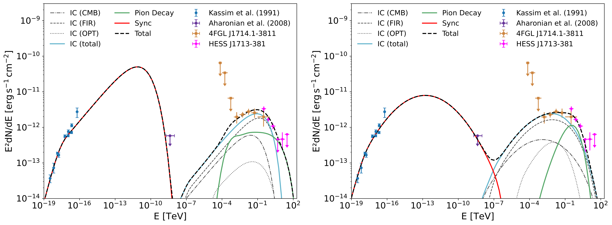
图注：Lepto-hadronic-{\(\it\) ecpl}
对应解读：对应日报中建议重点检查的“模型比较、参数约束、残差或灵敏度预测”，尤其是摘要中强调的 lepto-hadronic 解释和 >10 TeV 高能端改进。
入选理由：该图明确对应 lepto-hadronic-ecpl 模型，是论文核心结论之一：GeV 段由逆康普顿主导、最高能段可由 π0 衰变贡献，从而改善 H.E.S.S. 最高能数据的拟合。相比单纯形态图或说明较弱的候选图，它最直接支撑论文关于强子成分的物理解释。
来源与置信度：\(arxiv_source\)；high；\(arxiv_source\) / \(mnras_template_resub.tex\):figure[3]
Fig02
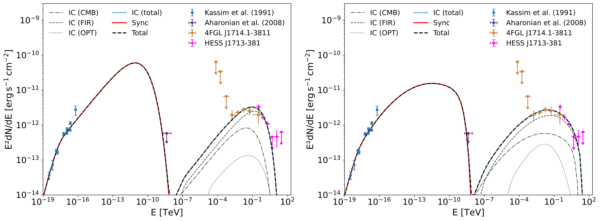
图注：Leptonic-{\(\it\) ecpl} model
对应解读：对应日报中建议查看的主要数据与模型比较部分，尤其是纯轻子模型对宽能段 SED 的拟合表现。
入选理由：该图对应 leptonic-ecpl 模型，是与 lepto-hadronic 模型进行对照的基准图。摘要中特别提到纯轻子模型能复现总体谱形但低估 H.E.S.S. 最高能通量，因此该图对于理解为什么需要进一步考虑强子成分非常关键。
来源与置信度：\(arxiv_source\)；high；\(arxiv_source\) / \(mnras_template_resub.tex\):figure[2]
Fig05
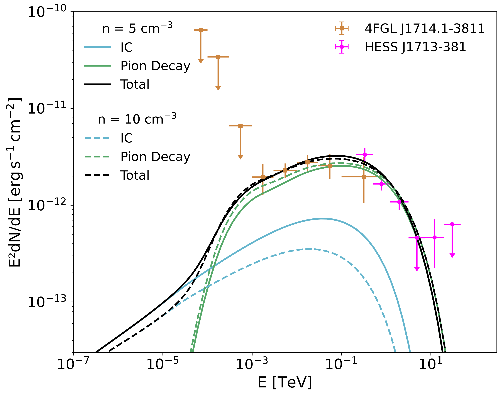
图注：SED of the CXOU~J1714-3810 in the SNR model for the lepto-hadronic-{\(\it\) ecpl} model with $K_{ \rm ep} = 10^{-2}$. This model considers a denser environment ($n = 5$~cm$^{-3}$ and $n = 10$~cm$^{-3}$), which is attributed to the SNR's interaction with molecular clouds associated with CTB~37B.
对应解读：对应模型拟合段落中关于致密环境、分子云相互作用以及所需质子能量降低的讨论。
入选理由：图注明确说明该图展示 n=5 cm^-3 和 n=10 cm^-3 的高密度环境下 lepto-hadronic-ecpl SED，并与 CTB 37B 和分子云相互作用相关。它直接支撑摘要中“若遗迹与致密介质相互作用，所需质子能量可显著降低”的关键结论。
来源与置信度：\(arxiv_source\)；high；\(arxiv_source\) / \(mnras_template_resub.tex\):figure[5]
Fig01
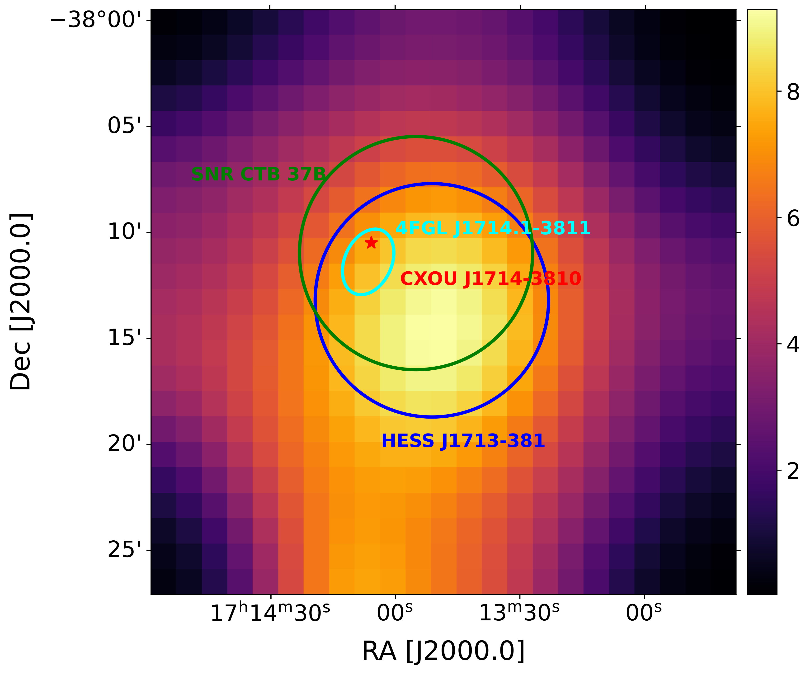
图注：H.E.S.S. VHE $\gamma$-ray significance map of the region surrounding SNR CTB~37B / CXOU~J1714--3810 \(\citep{2018A&A...612A...1H},\) smoothed with a Gaussian kernel of width $0.05^{\circ}$. The red star marks the position of the magnetar CXOU~J1714--3810 \(\citep{2014ApJS..212....6O}.\) The green circle indicates the radio extent of CTB~37B, with a radius of $5.1'$ \(\citep{2025JApA...46...14G, 2016ApJ...817...64X}.\) The cyan ellipse represents the GeV counterpart detected by \(\textit{Fermi}-LAT\) \(\citep\)[$68\%$ positional uncertainty;][]{2022ApJS..260...53A}, and the blue circle corresponds to the $1\sigma$ extension of the TeV source detected by H.E.S.S. \(\citep{2018A&A...612A...1H}.\)
对应解读：对应日报中建议检查的主要观测数据和形态学证据，尤其是磁星、SNR、Fermi-LAT GeV 源和 H.E.S.S. TeV 源的位置关系。
入选理由：该图是多波段空间关联的基础图，展示 H.E.S.S. 显著性图、磁星位置、CTB 37B 射电范围、Fermi-LAT 位置不确定区和 TeV 扩展。它对判断辐射是否来自 SNR 区域、以及为什么 magnetar wind nebula 情景受形态学限制非常重要。
来源与置信度：\(arxiv_source\)；high；\(arxiv_source\) / \(mnras_template_resub.tex\):figure[1]
Fig04
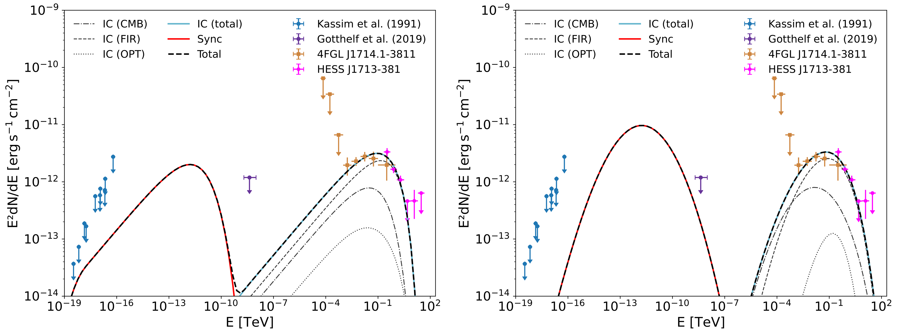
图注：Leptonic-{\(\it\) ecpl} model
对应解读：对应模型拟合或参数约束检查部分，图注显示其与 leptonic-ecpl 模型相关。
入选理由：虽然候选图注信息较少，但其明确属于 leptonic-ecpl 模型系列，可能承载与纯轻子情景相关的拟合、参数或诊断信息。若日报需要补充模型参数约束或拟合质量检查，可作为 Fig02 的辅助图嵌入。
来源与置信度：\(arxiv_source\)；high；\(arxiv_source\) / \(mnras_template_resub.tex\):figure[4]
Fig06
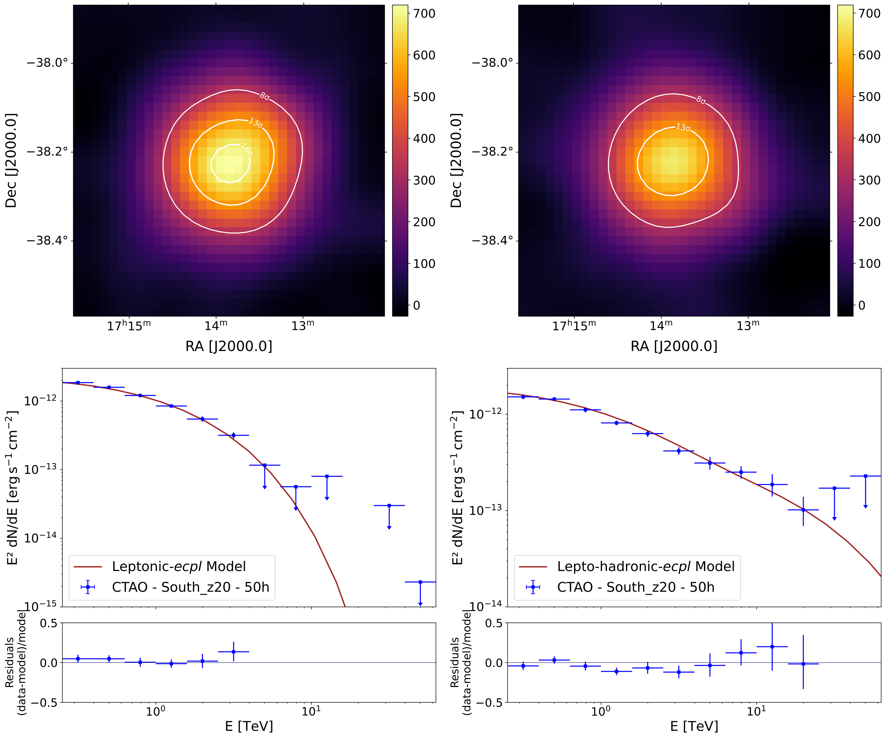
图注：Leptonic-{\(\it\) ecpl} model
对应解读：对应模型拟合说明中需要检查的轻子模型诊断或参数约束。
入选理由：该图注同样标注为 leptonic-ecpl model，但缺少坐标轴、数据点或具体诊断量说明，因此优先级低于明确展示 SED、环境密度或形态信息的图。仅在需要补充纯轻子模型拟合细节时建议使用。
来源与置信度：\(arxiv_source\)；high；\(arxiv_source\) / \(mnras_template_resub.tex\):figure[6]
强相关工作
这个对象有明确的同源/同事件上下文，应优先沿 CXOU J171405.7-381031、CTB 37B、HESS J1713-381、4FGL GeV counterpart、magnetar wind nebula、SNR molecular cloud interaction 等关键词检索。可靠入口包括本文 arXiv 页面 https://arxiv.org/abs/2607.15955 ，H.E.S.S. Galactic Plane Survey 相关论文 arXiv:1804.02432（https://arxiv.org/abs/1804.02432），以及 Fermi-LAT 4FGL-DR3 catalog 论文 arXiv:2201.11184（https://arxiv.org/abs/2201.11184）。磁星基础目录可查 Olausen & Kaspi 的 McGill magnetar catalog 论文 arXiv:1309.4167（https://arxiv.org/abs/1309.4167）及其公开目录页面 http://www.physics.mcgill.ca/~pulsar/magnetar/main.html 。这些属于 same-source、catalog 和 foundational context。
相似工作方面，应检索其他 SNR/TeV 源中轻子-强子退化的案例，例如 RX J1713.7-3946、W28、IC 443、W51C、HESS J1731-347 等；这些属于 same-class 或 historical-analogue papers，可帮助判断“高密度环境降低 $W_{\rm p}$”是否常见，以及强子证据通常需要哪些分子云、GeV pion bump 或 TeV 形态证据。若要查基础辐射模型，建议检索 Aharonian cosmic gamma-ray source reviews、Blumenthal & Gould 辐射过程、Kelner et al. $pp$ gamma-ray parameterization、Naima/Sherpa/agnpy 等 SED 建模工具文献。
潜在张力线索有三类。第一，若早期 H.E.S.S. 或 Fermi-LAT 论文对该区域给出不同源扩展或谱指数，则本文合并 SED 的单区假设需要复核。第二，若分子云观测对 CTB 37B 周围密度估计低于本文所需，则强子模型能量预算仍紧张。第三，若磁星年龄、速度或位置与 SNR 中心关系存在争议，磁星与 SNR 的物理关联及磁星风解释也会受影响。检索时可用 NASA ADS 组合关键词 “CTB 37B CXOU J171405.7-381031 HESS J1713-381 molecular cloud”, “CXOU J171405.7-381031 magnetar SNR association”, “HESS J1713-381 hadronic leptonic model”。
同一事件 / 同类源线索：
（未提供）
相似工作：
（未提供）
基础理论 / 方法工作：
（未提供）
相反观点 / 张力线索：
（未提供）
5. X-ray polarization of Z-type neutron star low-mass X-ray binaries -- II. Spectropolarimetric analysis
- 来源：arXiv / astro-ph.HE
- 链接：https://arxiv.org/abs/2607.16140v1
- 作者：Andrea Gnarini, Francesco Ursini, Giorgio Matt, Stefano Bianchi, Fiamma Capitanio, Massimo Cocchi, Sergio Fabiani, Ruben Farinelli
- 评分：novelty 7/10，importance 8/10，relevance 8/10，final 8.70/10
- 推荐理由：IXPE/NICER/NuSTAR 对 Z 型 NS-LMXB 的能谱偏振联合分析，给出高于理论预期的偏振度和盘/Comptonization 偏振角错位；属于核心 X 射线高能致密天体结果，值得阅读。
中文题目：Z 型中子星低质量 X 射线双星的 X 射线偏振——II：能谱偏振联合分析
做了什么：这篇论文对一组 Z 型中子星低质量 X 射线双星做了分支分辨的能谱偏振拟合，联合使用 IXPE、NICER 和 NuSTAR 数据，把总辐射拆成吸积盘热辐射、较硬的康普顿化成分以及反射特征。核心结论是：在水平分支上，\(2\text{--}8\,\mathrm{keV}\) 偏振度可达约 \(6\%\)，到正常分支降到约 \(3\%\text{--}4\%\)；主要偏振贡献通常来自康普顿化成分，而吸积盘偏振较低但仍高于简单电子散射盘大气预期。更麻烦也更有价值的是，吸积盘与康普顿化成分的偏振角似乎并非简单正交或平行，且偏振信号不随系统倾角或反射光子比例呈现清楚相关。
为什么重要：Z 型源处在接近或达到爱丁顿光度的强吸积状态，是检验中子星边界层、扩展热冕、盘风和辐射转移几何的高信噪实验室。IXPE 之前，这类源的几何多靠能谱和时变间接推断；现在偏振给出的是辐射场方向性和散射几何的直接约束。本文的重要性在于，它表明常用的平面盘大气、简单边界层或 spreading layer 图像不能轻易解释观测到的高偏振度和偏振角错位。
理论 / 观测 / 仪器方法价值：对理论而言，本文把 Z 型源偏振从“是否有信号”推进到“哪个能谱成分在偏振、沿 Z-track 如何变、各成分偏振角是否一致”的层面，迫使模型同时解释能谱、反射和 Stokes 参数。对观测而言，它展示了 IXPE 与 NICER、NuSTAR 联合拟合的实际价值：IXPE 给偏振，NICER 补软 X 射线统计，NuSTAR 约束硬尾和反射。对方法而言，这是一类多仪器、多分支、成分分辨 spectropolarimetry 的模板。
为什么应该关注：如果你关心强引力附近的高光度吸积、盘—边界层耦合、辐射压主导几何或 X 射线偏振如何打破能谱退化，这篇都值得看。它的结果不是简单给出几个偏振度数值，而是指出：Z 型源的偏振可能携带着比传统颜色—颜色图和能谱拟合更敏感的三维几何信息；同时，现有理论预言明显偏低，说明我们对中子星表面附近散射区的形状、光深和磁/风结构仍不够了解。
展开详细解读：文章讲解、背景、理论、重点章节、图表与相关工作
文章详细讲解
科学问题：Z 型中子星低质量 X 射线双星是最高吸积率的银河系中子星双星之一，在颜色—颜色图中沿水平分支、正常分支和耀发分支运动。传统上，人们把这种运动理解为吸积率、盘内半径、边界层结构、辐射压或喷流/风状态的变化，但能谱本身很难唯一给出几何。IXPE 的偏振测量把问题推进了一步：如果 X 射线主要来自吸积盘、边界层或康普顿化热冕，不同几何会留下不同的偏振度 \(\mathrm{PD}\) 和偏振角 \(\mathrm{PA}\)。本文要回答的是：沿 Z-track 变化时，各辐射成分的偏振是否也系统变化？这些偏振是否能由标准盘大气或边界层模型解释？
作者怎么做：这篇是该系列第二篇，第一篇用颜色—颜色图划分源的谱态，并做了较模型无关的偏振估计。本文进一步对每个源、每个 Z-track 分支进行联合能谱偏振拟合。数据来自 IXPE、NICER 和 NuSTAR：IXPE 提供 \(2\text{--}8\,\mathrm{keV}\) 的 Stokes 谱信息，NICER 提供软 X 射线能谱约束，NuSTAR 延伸到更高能段以限制康普顿化成分和反射尾部。作者用吸积盘热成分加康普顿化成分描述连续谱，并在多数源中加入反射特征，尤其是相对论展宽铁线；GX 5-1 是例外，未明显要求这类反射特征。
关键结果：多数源和分支中，X 射线总通量和偏振主要由康普顿化成分主导。沿水平分支到正常分支，\(2\text{--}8\,\mathrm{keV}\) 总偏振度大致从约 \(6\%\) 降到 \(3\%\text{--}4\%\)；耀发分支因曝光较短，偏振约束较松。吸积盘成分的偏振通常低于 \(3\%\)，但仍高于简单电子散射主导、平面平行盘大气在相应倾角下的预测。更值得注意的是，盘成分偏振角似乎与康普顿化成分显著错位，也不呈现简单的正交关系。作者还报告没有发现偏振信号与系统倾角之间的明确相关，也没有看到偏振随反射光子贡献沿 Z-track 变化而系统增强。
局限和下一步：最大限制来自样本量、分支内曝光不均匀以及成分分解的模型依赖性。耀发分支尤其受限，因为短曝光会让 Stokes 参数误差迅速放大。另一个限制是，能谱模型中的盘、康普顿化和反射并非完全正交：改变光深、电子温度、种子光子温度或反射参数，都可能影响每个成分被分配到的通量和偏振。下一步需要更长 IXPE 曝光、按 Z-track 连续相位做时间分辨拟合，并发展能同时预测能谱、反射和偏振的物理几何模型，例如厚盘、扩展边界层、非轴对称热冕、盘风散射或喷流基底。
关键结果是怎么做出来的
本文的核心证据链从样本和状态划分开始。作者不是把每个 Z 型源作为一个时间平均对象来处理，而是沿颜色—颜色图把观测分配到水平分支、正常分支和耀发分支。这样的分支选择很关键，因为 Z 型源的辐射几何和谱硬度在几个小时到几天尺度上变化明显；如果直接堆叠全观测，偏振角旋转或偏振度变化会被平均掉。论文沿用前作的分支定义，并在每个分支上分别构造 IXPE 的 \(I\)、\(Q\)、\(U\) 谱，同时联合 NICER 和 NuSTAR 的能谱。
统计上，最重要的不是单个能段的模型无关偏振度，而是成分分辨的 spectropolarimetric 拟合。作者用连续谱模型描述总强度 \(I(E)\)，再给盘、康普顿化和必要时的反射成分分配各自的偏振度与偏振角。这样可以检验：观测到的总 \(Q(E)\) 与 \(U(E)\) 是否要求康普顿化成分高度偏振，或者是否可以由低偏振盘加反射解释。结果显示，多数源和分支上，康普顿化成分既贡献主要通量，也贡献主要偏振，因此总偏振随分支变化主要反映硬成分几何变化。
最醒目的数值结果是 \(2\text{--}8\,\mathrm{keV}\) 偏振度从水平分支的约 \(6\%\) 降到正常分支的约 \(3\%\text{--}4\%\)。这不是一个孤立的平均值，而是在分支分辨拟合中反复出现的趋势。支撑这一点的图表应包括每个源各分支的偏振度—偏振角置信区间、能谱分解图、Stokes 残差以及分支间参数对比表。耀发分支没有给出同样强的结论，主要因为有效曝光短、统计误差大，导致偏振度和偏振角的置信区域明显膨胀。
模型比较方面，论文的判断依赖于联合拟合后残差是否系统改善、反射特征是否被需要、以及成分偏振参数是否显著偏离零或理论预期。多数源出现相对论展宽铁线等反射特征，但作者没有发现反射光子比例与偏振信号之间的清晰相关。这一点很重要，因为一种直观解释是“高偏振来自反射”，但本文结果不支持把反射当成主导原因。GX 5-1 未显示同样明确的反射特征，也为检验这种解释提供了反例。
主要系统误差来自三类：第一是仪器交叉定标，IXPE、NICER 和 NuSTAR 的能区、响应和绝对归一化不同；第二是谱成分退化，盘温、康普顿化参数和反射展宽会互相补偿；第三是偏振角混合，如果一个分支内存在快速 \(\mathrm{PA}\) 变化，时间平均会低估真实瞬时偏振。论文的稳健性重点应看不同模型选择下 \(\mathrm{PD}\) 和 \(\mathrm{PA}\) 是否稳定，以及是否存在由少数能道、少数时间段或背景处理驱动的异常。
展开背景、理论、公式、模型、章节和图表导读
背景知识
Z 型中子星低质量 X 射线双星是以颜色—颜色图轨迹命名的一类强吸积系统，典型轨迹包括水平分支、正常分支和耀发分支。它们的 X 射线光度通常接近爱丁顿极限，因此内盘、边界层和中子星表面附近的辐射压非常重要。与较低吸积率的 atoll 源相比，Z 型源在短时间内展示更强的谱态演化、准周期振荡、喷流迹象和可能的盘风活动。
历史上，Z-track 的物理含义并不完全清楚。一个常见说法是沿轨迹吸积率单调增加，但这过于简单：局部吸积率、盘内半径、边界层覆盖面积、辐射驱动外流、磁场和视线遮挡都可能参与。仅靠颜色—颜色图和能谱，很容易把几何变化误读成温度变化，或把局部散射区变化误读成全局吸积率变化。
X 射线偏振为这个问题提供了新的观测维度。热盘、边界层、热康普顿化云、反射盘面和喷流基底都可能产生不同的偏振信号。偏振度反映辐射场各向异性和散射次数，偏振角则追踪投影到天球面的对称轴方向。若一个源中的不同成分具有不同偏振角，总偏振会随能量和时间发生非平凡变化，这正是 IXPE 能够检测的内容。
为什么现在值得重新看？因为 IXPE 首次在 \(2\text{--}8\,\mathrm{keV}\) 对这类明亮中子星双星给出可用的线偏振测量，而 NICER 和 NuSTAR 又能同时约束宽能段谱形。过去理论模型常预言标准盘大气在中等倾角下只有较低偏振，边界层或 spreading layer 的偏振也通常不容易达到本文报告的水平。因此，新数据直接挑战了“简单轴对称、平面平行、温和各向异性”的默认图像。
该领域常见误区包括：把总偏振度直接等同于某一个物理区域的偏振；忽视不同成分偏振角相互抵消；把反射特征存在等同于反射主导偏振；以及过度依赖名义系统倾角。事实上，观测到的 \(\mathrm{PD}\) 与 \(\mathrm{PA}\) 是多个成分按通量加权后的 Stokes 矢量和，且倾角、光深、几何厚度、盘翘曲和外流散射都会改变结果。
基础理论 / 方法脉络
基础物理图像可以从散射偏振说起。未偏振光被自由电子散射后，如果散射几何有明显方向性，出射光会获得线偏振；对称性越高、视线平均越充分，净偏振越低。标准薄盘的局部大气常被近似为电子散射主导、平面平行层，偏振方向通常与盘投影轴存在确定关系，但相对论光弯曲、盘积分和吸收会降低或旋转净偏振。
中子星低质量 X 射线双星中，盘并不是唯一辐射源。内盘物质落到中子星表面或边界层时释放大量能量，形成较热、较硬的辐射区；软光子在热电子云中多次逆康普顿散射，产生康普顿化连续谱。这个区域的几何非常关键：若是贴近表面的赤道带、垂直扩展的热冕、扁平 slab，或非轴对称结构，预期偏振度和偏振角会明显不同。
本文使用的观测量不是只看光子数谱 \(I(E)\)，而是同时拟合 Stokes 谱 \(Q(E)\) 和 \(U(E)\)。偏振度由 \(Q\) 与 \(U\) 的矢量长度给出，偏振角由二者的相位给出。多个辐射成分叠加时，强度可以相加，Stokes 参数也可以相加，但偏振度不能简单相加；这使得成分分辨偏振拟合比普通能谱拟合更有约束力，也更容易暴露几何不一致。
论文的模型假设是：总连续谱可由盘热辐射加较硬康普顿化成分描述，反射特征在多数源中需要加入，尤其是铁线。每个成分可以赋予独立或受限的 \(\mathrm{PD}\) 和 \(\mathrm{PA}\)。这种方法的优势是能回答“哪个成分在偏振”，但代价是参数退化：若盘和康普顿化在 IXPE 能段的通量比例变化，或二者偏振角接近相反方向，总偏振可能对模型细节非常敏感。
常见系统误差包括背景估计、IXPE 调制因子能量依赖、仪器交叉归一化、NICER 高计数率校正、NuSTAR 硬能段背景和反射模型选择。选择效应也不能忽略：Z 型源在不同分支停留时间不同，耀发分支曝光短会导致偏振不显著；而明亮源的高统计精度会让很小的交叉定标残差影响能谱成分分配。
公式与推导
第一步是把观测到的线偏振写成 Stokes 参数。对某一能量道 \(E\)，总强度为 \(I(E)\)，线偏振由 \(Q(E)\) 和 \(U(E)\) 描述：
这里 \(\mathrm{PD}\) 是偏振度，\(\mathrm{PA}\) 是偏振角；因线偏振具有 \(180^\circ\) 对称性，所以角度前有因子 \(1/2\)。
第二步是多成分叠加。若总辐射由盘、康普顿化和反射组成，可写成
其中 \(k\) 标记辐射成分，\(p_k\) 是该成分偏振度，\(\psi_k\) 是该成分偏振角。这条式子解释了为什么总 \(\mathrm{PD}\) 不是各成分 \(p_k\) 的通量加权标量平均，而是 Stokes 矢量相加。
第三步是盘的热谱近似。多温黑体盘常可写成半径积分形式：
这里 \(i\) 是倾角，\(D\) 是距离，\(R_{\rm in}\) 与 \(R_{\rm out}\) 是盘内外半径，\(B_E\) 是普朗克函数。本文关心的不是只由该式得到温度，而是盘通量在 IXPE 能段中占多少，从而决定盘偏振对总 Stokes 参数的权重。
第四步是康普顿化硬成分的物理尺度。热电子云对软光子的能量提升常由 Compton \(y\) 参数刻画：
其中 \(T_e\) 是电子温度，\(\tau\) 是 Thomson 光深，\(m_e\) 是电子质量。较大的 \(y\) 表示更强的逆康普顿化，也通常意味着硬成分在 \(2\text{--}8\,\mathrm{keV}\) 中占比增加；但偏振还取决于电子云几何，而不只取决于 \(T_e\) 和 \(\tau\)。
第五步是反射贡献。若入射到盘面的硬光子部分被反射，可用反射比例近似表示：
这里 \(I_{\rm refl}\) 包括铁线和 Compton hump 等反射结构。若高偏振主要由反射驱动，通常期待 \(\mathrm{PD}\) 与 \(f_{\rm refl}\) 有某种正相关；本文报告未发现这种清晰相关。
第六步是仪器响应。探测器记录的第 \(j\) 个能道计数不是源本征光谱，而是响应卷积：
其中 \(R_j(E)\) 是能量重分布矩阵，\(A_{\rm eff}(E)\) 是有效面积，\(B_j\) 是背景。联合 IXPE、NICER、NuSTAR 时，每台仪器都有自己的响应和交叉归一化，因此能谱成分分解必须在响应空间中完成。
第七步是 IXPE 的调制测量。对线偏振源，光电子方位角分布可写为
这里 \(\phi\) 是光电子发射方位角，\(\mu(E)\) 是调制因子。\(\mu(E)\) 越大，同样偏振度带来的方位角调制越明显，偏振检测越灵敏。
第八步是似然或统计量。对计数谱，常用 Poisson 似然：
其中 \(n_j\) 是观测计数，\(m_j\) 是模型预测计数。spectropolarimetry 中这个统计量同时约束 \(I\)、\(Q\)、\(U\) 或等价的调制分布；模型是否需要某个偏振成分，可通过似然改善和参数置信区间判断。
第九步是最小可探测偏振的尺度关系。背景较低时，\(99\%\) 置信水平的近似最小可探测偏振为
其中 \(R_S\) 是源计数率，\(R_B\) 是背景计数率，\(T\) 是曝光时间。这解释了为什么耀发分支曝光短时，即使源很亮，\(\mathrm{PD}\) 和 \(\mathrm{PA}\) 约束也会显著变差。
模型拟合 / 应用方法
本文的拟合对象是多仪器能谱和 IXPE 偏振谱。普通能谱部分主要确定盘温、盘归一化、康普顿化谱形、吸收柱密度、反射强度和铁线展宽等参数；偏振部分则给每个成分或总模型分配 \(\mathrm{PD}\) 与 \(\mathrm{PA}\)。关键不是孤立地拟合 IXPE，而是利用 NICER 和 NuSTAR 限制 \(I(E)\) 的分解，再让 IXPE 的 \(Q(E)\) 与 \(U(E)\) 判断哪个成分需要偏振。
参数估计通常可基于 \(\chi^2\)、Cash statistic 或等价的 Stokes 谱似然实现，具体取决于数据分组和软件实现。读者应关注偏振参数的二维置信区间，而不只是最佳拟合值，因为 \(\mathrm{PD}\) 受正定性偏差影响，低信噪时会被向正值偏置。对耀发分支尤其应检查置信区域是否包含零偏振，以及 \(\mathrm{PA}\) 是否实际上未被约束。
主要退化关系有几组。第一，盘和康普顿化在 IXPE 能段的通量比例与各自偏振度退化：如果硬成分通量占比调高，所需本征 \(p_{\rm comp}\) 可降低，反之亦然。第二，两个成分的偏振角差会导致抵消或增强，因此同样的总 \(\mathrm{PD}\) 可由不同的 \(p_k\) 和 \(\psi_k\) 组合产生。第三，反射成分既影响铁线残差，也可能在偏振上模仿硬成分变化，因此反射模型选择会影响成分偏振解释。
系统误差方面，IXPE 的调制因子、背景、能量刻度和不同探测单元一致性都需要检查；NICER 的高计数率效应、死时间或背景模型会影响软谱；NuSTAR 的交叉定标和硬尾背景会影响康普顿化温度或硬尾强度。由于本文讨论的是几个百分点级别偏振，任何让通量成分比例改变 \(\sim 10\%\) 的系统误差都可能改变成分分辨偏振的物理解读。
模型可能失败的地方也很清楚。如果真实几何随时间连续变化，而模型把一个分支当作单一稳定状态，时间平均 Stokes 矢量会隐藏瞬时高偏振或偏振角旋转。如果康普顿化区不是单一区域，而是边界层、盘面热皮层和喷流基底混合，单一 \(p_{\rm comp}\) 和 \(\psi_{\rm comp}\) 只是有效参数。若盘存在翘曲、厚盘自遮挡或风散射，标准盘加简单反射也可能给出看似可接受但物理误导的拟合。
重点章节 / 结果段落怎么读
数据与样本部分应首先阅读。重点看作者如何从 IXPE 观测时间中按颜色—颜色图划分水平分支、正常分支和耀发分支，以及 NICER、NuSTAR 是否与 IXPE 严格同时或准同时。Z 型源变化很快，非同时数据会引入谱态错配；因此时间筛选和分支定义是后续结论的基础。
能谱模型部分是第二个重点。读者应检查连续谱由哪些具体成分组成，盘热成分和康普顿化成分的参数是否物理合理，哪些源需要相对论反射或展宽铁线，GX 5-1 为什么例外。这里不要只看最佳拟合 \(\chi^2\)，还要看残差是否在铁线区、软能段或硬尾处有系统结构。
spectropolarimetric 方法部分是全文关键。需要弄清楚作者是给总模型一个偏振，还是给盘、康普顿化和反射分别赋予偏振；不同分支之间哪些参数联动、哪些独立；偏振角的参考方向如何定义；以及置信区间如何计算。成分分辨偏振的结论依赖这些设定。
结果部分应按源和分支逐一读，而不是只读平均结论。重点比较水平分支与正常分支的 \(\mathrm{PD}\)、\(\mathrm{PA}\)、康普顿化通量占比和反射比例。看是否每个源都支持同一趋势，还是由少数高信噪源主导。
讨论和稳健性部分用于判断物理解释的强弱。作者将观测偏振与 spreading layer、边界层、标准盘大气和反射图像比较，并指出理论预期偏低。读者应特别看他们如何排除倾角相关和反射相关，以及是否测试了替代连续谱或反射模型。
建议重点查看的图表
-
颜色—颜色图和分支筛选图：看每个源的观测点如何被分到水平分支、正常分支和耀发分支，分支边界是否清楚，是否存在混合区域。
-
联合能谱及残差图：看 NICER、IXPE、NuSTAR 的谱形是否被同一模型同时解释，特别关注铁线区、硬尾和软能段残差。
-
成分分解图：检查在 \(2\text{--}8\,\mathrm{keV}\) 内盘、康普顿化和反射各自贡献多少通量，因为这直接决定成分偏振的权重。
-
\(Q\) 与 \(U\) 或偏振谱图：看偏振信号是否随能量变化，是否存在只有某些能段驱动的偏振检测。
-
\(\mathrm{PD}\)–\(\mathrm{PA}\) 置信等值线：重点看盘和康普顿化成分的偏振角是否真的错位，置信区间是否重叠。
-
分支间参数对比表：检查水平分支到正常分支 \(\mathrm{PD}\) 下降是否在多个源中一致，耀发分支误差是否显著更大。
-
偏振与倾角或反射比例的相关性图：看散点是否支持无相关结论，误差条是否大到足以隐藏弱相关。
-
稳健性或替代模型诊断：若有附录图表，应看改变连续谱或反射模型后关键 \(\mathrm{PD}\) 和 \(\mathrm{PA}\) 是否保持。
关键图表逐图导读
图 1：通常应是样本的颜色—颜色图或硬度—硬度图。横轴和纵轴一般是不同能段计数率比值，数据点按时间或分支着色。读这类图时要看 Z-track 是否完整覆盖，水平分支、正常分支和耀发分支边界是否有重叠。陷阱是把颜色图上的连续轨迹误解为单一物理参数单调变化；实际可能混合了吸积率、几何和遮挡变化。
图 2：联合能谱拟合图通常以能量为横轴，以 unfolded flux、计数率或 data/model ratio 为纵轴。模型线应分解为盘、康普顿化和反射成分。关键看 \(2\text{--}8\,\mathrm{keV}\) 内哪一条成分占主导，以及铁线区是否需要展宽反射。读图陷阱是 unfolded 谱依赖模型，不能把视觉上的成分交叉点当成模型无关事实。
图 3：Stokes 谱或能量分辨偏振图应显示 \(Q/I\)、\(U/I\)、\(\mathrm{PD}\) 或 \(\mathrm{PA}\) 随能量变化。若康普顿化成分主导偏振，高能端偏振可能更明显或与硬成分增强同步。需要看误差条和能道分组，避免被单个高偏差能道误导。
图 4：\(\mathrm{PD}\)–\(\mathrm{PA}\) 置信等值线是判断成分偏振是否显著的核心图。横轴可能是偏振角，纵轴是偏振度，也可能是 \(q\)–\(u\) 平面。应看零偏振点是否被排除、盘和康普顿化等值线是否分离、不同分支的区域是否系统移动。陷阱是 \(\mathrm{PA}\) 在低 \(\mathrm{PD}\) 时没有物理约束，即使画出了最佳值也不能过度解释。
图 5：分支演化图可能把水平分支、正常分支和耀发分支的 \(\mathrm{PD}\)、\(\mathrm{PA}\)、通量比例或谱参数放在同一坐标中。主要结论应是水平分支偏振较高、正常分支较低、耀发分支不确定。需要检查趋势是否由所有源共同支持，还是由曝光最长的源主导。
图 6：偏振与倾角、反射比例或反射通量分数的相关性图用于支持“无相关”结论。横轴可能是文献倾角或拟合得到的 \(f_{\rm refl}\)，纵轴是 \(\mathrm{PD}\)。读图时要看误差条、上限和样本量；无显著相关不等于严格排除物理联系，只说明在当前误差和模型假设下没有可检出的单调关系。
论文原图 / 可嵌入图片
（未提供 verified figure；为避免编造图片链接，本节只在能确认官方图片 URL 或成功提取论文原图时嵌入图片。）
强相关工作
这篇工作属于 IXPE 对中子星低质量 X 射线双星偏振观测的同类研究脉络，尤其与 Z 型源、atoll 源、Sco X-1、Cyg X-2、GX 5-1、GX 340+0、GX 349+2 等明亮中子星双星的偏振和能谱研究相连。应检索关键词包括“IXPE Z source neutron star LMXB polarization”、“spectropolarimetry Z-track”、“boundary layer polarization neutron star”、“spreading layer X-ray polarization”。同一系列的第一篇论文尤其重要，因为本文的分支划分和模型无关偏振结果来自那里。
基础理论方面，需要把本文放在电子散射盘大气、康普顿化 slab/sphere 几何、相对论反射和中子星边界层模型的交叉处理解。相反或存在张力的观点主要是：标准平面平行盘大气和常规 spreading layer 预期的偏振度偏低，难以自然达到水平分支观测到的 \(\sim 6\%\)；另外，如果反射主导偏振，应看到偏振与反射比例相关，但本文未发现。检索关键词可用“Chandrasekhar scattering atmosphere polarization”、“X-ray reflection polarization neutron star”、“spreading layer Inogamov Sunyaev polarization”、“IXPE neutron star LMXB review”。
同一事件 / 同类源线索：
相似工作：
（未提供）
基础理论 / 方法工作：
（未提供）
相反观点 / 张力线索：
（未提供）
6. High-Density Sound Speed and Post-Merger Dynamics
- 来源：arXiv / astro-ph.HE
- 链接：https://arxiv.org/abs/2607.15588v1
- 作者：John Stroud, David Radice, Sanjay Reddy
- 评分：novelty 7/10，importance 8/10，relevance 8/10，final 8.70/10
- 推荐理由：系统研究高密度声速对 BNS 并合后动力学和 post-merger GW 频率的影响，连接致密物质 EOS 与多信使观测；虽非伽马方向，但对高能致密天体重要。
中文题目：高密度声速与双中子星并合后的动力学
做了什么：这篇文章研究冷中子星物质在超核密度区的声速随密度变化，是否会在双中子星并合后的残骸性质和引力波后并合频率中留下可观测痕迹。作者先构造一个有意简化的状态方程参数化，把复杂微物理压低到最低限度，只控制声速对重子化学势的导数，再用全广义相对论数值相对论程序 \(\mathrm{WhiskyTHC}\) 做一组双中子星并合模拟。随后他们还用 \(\mathrm{CoRe}\) 数据库中更真实状态方程的并合波形检验相关性。核心结论是：后并合主峰频率对高密度声速斜率有明显敏感性，但这种关系仍残留状态方程依赖，不能简单称为严格准普适关系。
为什么重要：中子星半径和潮汐形变主要约束 \(\sim 1\text{--}3\) 倍核饱和密度附近的状态方程，而并合残骸短时间内可达到更高密度。若未来第三代引力波探测器或高频优化探测器能测到后并合信号，主峰频率 \(f_2\) 可能成为探测冷致密物质高密度声速结构的少数直接窗口。这篇文章的重要性在于，它把问题从“哪个具体状态方程给出哪个频率”推进到“声速函数的哪类导数信息会投影到可观测量”。
理论 / 观测 / 仪器方法价值：对理论而言，本文提供了一个可控的参数化实验框架，用来隔离高密度声速斜率对并合动力学的影响，而不是把它淹没在成分、热效应、相变和数值设定的混合差异中。对观测而言，它提示后并合 \(\mathrm{kHz}\) 引力波频率不只是总质量、半径或潮汐形变的经验代理量，也可能携带更深核区的 \(c_s\) 梯度信息。对方法而言，它说明“准普适关系”在高密度微物理反演中有用但不够，未来需要以声速参数化为核心的贝叶斯解释框架。
为什么应该关注：如果你关心中子星状态方程，这篇文章值得看，因为它直接触及当前多信使天文学最困难的问题之一：怎样从短暂、嘈杂的后并合信号中分离出真正高密度物理，而不是只重复低密度半径约束。如果你做数值相对论或引力波数据分析，本文也值得关注，因为它展示了哪些后并合量对状态方程微分性质敏感、哪些关系会被残余状态方程依赖破坏，从而影响未来探测器时代的参数估计策略。
展开详细解读：文章讲解、背景、理论、重点章节、图表与相关工作
文章详细讲解
科学问题：冷中子星物质的声速 \(c_s\) 是状态方程最直接的微分诊断之一，因为它由压力 \(P\) 对能量密度 \(\epsilon\) 的响应决定。质量、半径、潮汐形变等静态观测通常约束的是状态方程积分后的结果，而并合后的超大质量残骸会在短时间内压缩到更高密度并激发强烈流体振荡。本文问的是：高密度区 \(c_s\) 随重子化学势 \(\mu_B\) 的变化，能否在残骸性质和后并合引力波主峰频率中留下可识别的信号。
作者怎么做：他们没有从一组复杂核物理模型直接比较入手，而是先构造一个简化的冷物质状态方程参数化，刻意弱化微物理细节，只允许通过类似 \(d c_s / d\mu_B\) 的斜率参数控制超核密度声速的变化。这样做的优点是可以把“声速高低”和“声速如何随密度上升或下降”从其他状态方程差异中分离出来。随后作者使用全广义相对论流体动力学代码 \(\mathrm{WhiskyTHC}\) 进行双中子星并合模拟，跟踪并合前、接触、后并合残骸振荡和引力波发射。
关键结果：在这组受控模拟中，声速斜率参数与多个并合结果存在相关性，包括残骸的紧致程度、寿命或稳定性趋势，以及后并合引力波谱中的峰值频率。直观地说，如果高密度物质在压缩时变硬更快，残骸的动力学振荡频率和密度分布会随之改变。作者进一步把分析扩展到 \(\mathrm{CoRe}\) 双中子星并合数据库，使用更真实状态方程的既有模拟，寻找 \(d c_s / d\mu_B\) 与后并合主峰频率之间的近似关系。结果显示确有接近状态方程无关的趋势，但离严格准普适关系仍有距离。
局限和下一步：本文的简化参数化是优势也是限制。它有助于隔离变量，却无法完整描述成分变化、有限温度、轻子输运、磁场、粘滞耗散或一阶相变等真实物理。\(\mathrm{CoRe}\) 数据库分析虽然提供了更现实状态方程的交叉检验，但不同模拟的数值分辨率、质量比、总质量、热处理和状态方程覆盖范围都会留下系统差异。下一步需要把这种声速导数参数化嵌入更完整的热状态方程和贝叶斯波形推断中，并针对第三代引力波探测器能实际测到的频率、阻尼时间和不确定度做端到端检验。
关键结果是怎么做出来的
本文最重要的证据链从受控状态方程族开始。作者通过改变超核密度区声速相对于重子化学势的斜率参数，生成一组在低密度行为和基本稳定性上可比较、但高密度微分性质不同的冷状态方程。这样的样本选择目的不是覆盖所有核物理可能性，而是建立一个近似“单旋钮实验”：如果并合后结果随该旋钮单调变化，就说明后并合动力学确实对高密度 \(c_s\) 结构敏感。
在数值模拟部分，关键样本是用 \(\mathrm{WhiskyTHC}\) 运行的一套全广义相对论双中子星并合。论文摘要没有给出具体模拟数、质量组合和分辨率细节，读者应在正文表格中核对每个模型的总质量、质量比、初始轨道频率、网格分辨率、冷状态方程参数和热处理方式。后并合主峰频率通常从并合后引力波应变 \(h(t)\) 的傅里叶谱提取，因此窗口函数、起止时间、谱峰识别规则和数值噪声都会影响 \(f_2\) 的误差。
显著性和置信度方面，这类工作通常不是以单个 \(p\) 值宣布发现，而是通过相关系数、拟合残差、交叉比较和误差带判断关系是否稳健。本文的核心统计判断应来自声速斜率参数与残骸量、峰频之间的散点关系，以及与 \(\mathrm{CoRe}\) 真实状态方程样本的比较。读者需要重点看拟合线的散布是否小于不同状态方程族之间的自然散布，以及相关性是否在固定总质量或固定潮汐参数后仍存在。
模型比较的关键在于两层分析是否互相支持。第一层是简化参数化模拟，提供因果解释：改变 \(d c_s / d\mu_B\) 会改变残骸动力学。第二层是 \(\mathrm{CoRe}\) 数据库检验，提供现实性测试：在真实状态方程中，类似导数与 \(f_2\) 仍有近似关系。若某些状态方程明显偏离拟合线，这些离群点比平均趋势更值得关注，因为它们可能对应强相变、极端软化、特殊热响应或数值处理差异。
系统误差主要来自四类：一是有限分辨率导致后并合谱峰漂移；二是热状态方程近似可能改变残骸压力支撑；三是提取 \(c_s\) 导数时要选择代表密度或化学势区间，不同定义会给出不同横轴；四是总质量和质量比也会改变残骸达到的最高密度，从而与声速斜率产生退化。稳健性检验应包括改变拟合区间、剔除离群状态方程、固定或分层总质量、比较不同后并合频率峰，以及检查是否只是已知半径或潮汐形变关系的重新表达。
展开背景、理论、公式、模型、章节和图表导读
背景知识
研究对象是双中子星并合后的热而致密残骸。并合前，中子星可近似由冷、β平衡的致密物质状态方程支配；并合后，残骸则经历强烈差分旋转、激波加热、非轴对称振荡和可能的坍缩。后并合引力波频谱中的主峰通常位于 \(\mathrm{kHz}\) 频段，与残骸的平均密度和流体模有关。
历史上，中子星状态方程约束主要来自最大质量、半径、脉冲星计时、\(\mathrm{NICER}\) X射线脉冲轮廓，以及双中子星并合前的潮汐形变。\(\mathrm{GW170817}\) 已经显著限制了 \(1.4\,M_\odot\) 附近中子星的潮汐形变，但它对并合后的高频信号没有给出强探测。结果是：低到中等密度状态方程逐渐收紧，而更高密度处是否出现强软化、再硬化或相变仍很不确定。
为什么现在值得重新看？一方面，第三代引力波探测器如 \(\mathrm{Einstein\ Telescope}\) 和 \(\mathrm{Cosmic\ Explorer}\) 以及高频灵敏度改进方案，使后并合频率测量从理论愿景逐渐变成可规划目标。另一方面，核物理和天体观测已显示声速不能简单长期停留在共形极限 \(c_s^2/c^2=1/3\) 以下，否则很难同时支持 \(2\,M_\odot\) 中子星和较小半径约束。声速的密度依赖，特别是其斜率，成为区分不同高密度物理图像的关键。
该领域常见误区之一是把后并合主峰 \(f_2\) 简单理解为半径的单值函数。经验上 \(f_2\) 与半径、潮汐形变、最大质量确有相关性，但这不意味着它只测量一个半径参数。残骸达到的密度范围高于孤立 \(1.4\,M_\odot\) 星体的中心密度，且热压、旋转和非线性模耦合会改变频谱。因此，把 \(f_2\) 反演成高密度状态方程时，必须警惕由总质量、热处理和声速导数共同导致的退化。
另一个误区是把“准普适关系”理解为足够精确的物理定律。很多后并合关系在有限状态方程样本中看起来紧，但一旦加入相变状态方程、极端高密度行为或不同热成分，散布会扩大。本文强调的正是这一点：近似状态方程无关关系有实用价值，但不能替代有物理参数含义的状态方程族和系统误差建模。
基础理论 / 方法脉络
基础物理图像从声速开始。在零温、β平衡物质中，声速平方 \(c_s^2\) 是压力对能量密度的微分响应，反映物质被压缩时变硬或变软的程度。若 \(c_s^2\) 较大，给定密度增加会带来更强压力支撑；若 \(c_s^2\) 较小，物质更易压缩，残骸更紧致，也更接近坍缩条件。
双中子星并合后，残骸的振荡频率可粗略理解为由平均密度设定的动力学频率。更紧致的残骸通常有更高的主峰频率 \(f_2\)，但该图像只是零阶近似。真实后并合频谱还受差分旋转、热压、非轴对称结构、质量抛射和可能的黑洞形成时间影响。本文关心的声速斜率不是单纯改变一个静态半径，而是改变残骸在最高密度区的压缩响应。
论文的模型假设是使用简化冷状态方程参数化，让 \(c_s\) 在超核密度区随重子化学势 \(\mu_B\) 的变化可控。重子化学势适合作为横轴，是因为它与添加一个重子的能量代价相关，在热力学一致的状态方程构造中比任意密度插值更自然。作者用类似 \(d c_s/d\mu_B\) 或 \(d c_s^2/d\mu_B\) 的量作为高密度刚度变化的诊断。
观测量方面，后并合引力波主峰 \(f_2\) 来自 \(h_{22}(t)= h_+(t)-i h_\times(t)\) 的频谱，通常选取并合时刻之后的一段时间做傅里叶变换。主峰位置与残骸的主要四极振荡模式相关。若未来实际观测中信噪比足够，\(f_2\)、次峰、阻尼时间和坍缩时间都可共同约束状态方程。
常见退化包括：总质量越大，残骸越紧致，\(f_2\) 越高，这可能伪装成更软的高密度状态方程；质量比改变潮汐破坏和角动量分布，也会影响频谱；热压参数和中微子冷却会改变残骸支撑；数值粘滞和分辨率会改变谱峰宽度。本文的价值在于尝试在这些复杂性之前，先用受控参数化问清 \(c_s\) 斜率本身能产生多大效应。
公式与推导
第一步是把声速定义为冷物质状态方程的微分量：
这里 \(P\) 是压力，\(\epsilon\) 是总能量密度，\(s\) 是熵密度或比熵条件，\(Y_i\) 表示成分变量。在冷、β平衡近似下，成分随密度由平衡条件确定，因此 \(c_s^2\) 衡量压缩响应。
第二步引入重子化学势。零温热力学给出：
其中 \(n_B\) 是重子数密度，\(\mu_B\) 是重子化学势。由此可以把声速写成化学势导数形式：
这说明 \(c_s\) 不只是压力大小，而是 \(n_B\) 对 \(\mu_B\) 的可压缩性。
第三步是本文关注的高密度斜率参数。可用一个示意参数表示为：
其中 \(\mu_\star\) 是残骸核心常达到的代表性化学势。\(\kappa_s>0\) 表示随压缩快速变硬，\(\kappa_s<0\) 表示高密度区软化或声速增长变慢。论文的具体参数化可能有不同记号，但物理目标就是控制这种微分性质。
第四步把状态方程和星体结构联系起来。孤立冷星满足 \(\mathrm{TOV}\) 方程：
该方程说明同一个 \(c_s\) 结构会影响质量半径曲线和最大质量，但这些静态量是积分结果，对局部高密度斜率的分辨率有限。
第五步给出后并合主频的零阶尺度。残骸的动力学频率近似满足：
其中 \(M_{\rm rem}\) 和 \(R_{\rm rem}\) 是残骸的有效质量和半径。更软或更易压缩的高密度核心通常使 \(R_{\rm rem}\) 减小，从而提高主峰频率，但旋转和热压会修正这个尺度律。
第六步是从模拟波形提取频率。复应变可写为：
其中 \(w(t)\) 是窗口函数，\(t_0\) 和 \(t_1\) 定义后并合分析区间。主峰频率通常由
给出。该定义提示读者检查窗口选择和谱峰宽度，因为它们会造成系统频移。
第七步是经验相关或回归关系。本文讨论的关系可抽象写为：
这里 \(M_{\rm tot}\) 是双星总质量，\(\Lambda_{\rm eff}\) 是有效潮汐形变，\(\delta_{\rm EOS}\) 表示不能由这些变量吸收的状态方程残差。若 \(\delta_{\rm EOS}\) 很小，关系才接近准普适；本文结论是它不为零且具有物理意义。
第八步是统计诊断。若用一组模拟点 \(\{f_{2,i},\kappa_{s,i}\}\) 拟合，可采用高斯残差似然：
其中 \(\boldsymbol{\theta}\) 是回归参数，\(\sigma_i\) 是数值或测量误差，\(\sigma_{\rm int}\) 是内禀散布。这个式子直接连接到本文“近似但非严格准普适”的判断：若需要较大的 \(\sigma_{\rm int}\)，说明剩余状态方程依赖不可忽略。
模型拟合 / 应用方法
本文的拟合对象主要不是传统意义上的天文观测数据，而是一组数值相对论模拟输出。拟合量包括后并合主峰频率 \(f_2\)、残骸性质指标，以及从冷状态方程中提取的高密度声速斜率参数。读者应把这些拟合看作“模拟实验中的响应函数测量”：输入是状态方程参数，输出是并合动力学和频谱量。
参数估计上，简化状态方程族可以用低维参数描述，例如控制超核密度区 \(c_s^2(\mu_B)\) 的斜率、转折位置和高密度极限。实际拟合时要保证状态方程满足热力学稳定性、因果性和观测最大质量约束。若不同参数组合给出类似的半径和潮汐形变，但高密度 \(c_s\) 斜率不同，后并合频率才有机会打破并合前观测的退化。
似然或统计量通常可基于频率残差构造。对模拟数据库，可用线性或低阶多项式回归检验 \(f_2\) 与 \(\kappa_s\) 的关系；对未来真实观测，则需要把探测器噪声功率谱、波形模型误差和谱峰测量误差纳入似然。一个实际应用场景是：先由并合前信号约束 \(M_{\rm tot}\)、质量比和 \(\Lambda_{\rm eff}\)，再用后并合 \(f_2\) 更新高密度声速参数的后验。
残差诊断非常关键。若 \(f_2\) 与 \(\kappa_s\) 的拟合残差按状态方程类别成簇，例如含强相变的模型系统性偏高或偏低，就说明单一声速斜率不足以描述微物理。若残差与总质量、最大质量、半径或热指数相关，则说明所谓声速关系可能混入了已知宏观量的影响。本文提到关系不能算真正准普适，正是提醒读者不要只看相关系数，还要看残差结构。
主要退化包括 \(\kappa_s\) 与代表密度选择之间的退化、冷声速与热压响应之间的退化、总质量与残骸最高密度之间的退化，以及数值分辨率与谱峰位置之间的退化。模型可能失败的地方包括：强一阶相变导致单调平滑参数化失效；磁流体不稳定和中微子输运在较长时间尺度改变谱峰；残骸快速坍缩使可用后并合周期太少，导致频率提取不稳。
实际读论文时，应关注作者是否给出分辨率收敛、窗口函数变化、不同频率峰识别、剔除异常状态方程后的回归结果，以及与 \(\mathrm{CoRe}\) 数据库的交叉验证。若这些检验都支持同一趋势，那么即使关系不是严格准普适，它仍可作为未来多信使反演中的有用先验或诊断量。
重点章节 / 结果段落怎么读
-
引言和问题设定：重点看作者如何区分“状态方程刚度”与“声速斜率”。引言应说明为什么静态半径和潮汐形变不足以约束最高密度，以及为什么后并合 \(f_2\) 是合适的探针。
-
状态方程参数化：这是全篇最需要细读的部分。读者应检查 \(c_s\) 或 \(c_s^2\) 如何作为 \(\mu_B\) 的函数被构造，低密度如何匹配已知核物质，高密度是否满足因果性和稳定性，以及不同参数模型的最大质量和半径是否仍在合理范围内。
-
数值相对论模拟设置：重点看 \(\mathrm{WhiskyTHC}\) 的初始数据、总质量、质量比、网格分辨率、冷加热处理和引力波提取半径。后并合频率对数值设定敏感，因此模拟设置不是技术细节，而是结论可信度的一部分。
-
受控模拟结果：这一节应展示声速斜率与残骸性质、坍缩倾向、最大密度演化和 \(f_2\) 的关系。读者应区分单调趋势、统计相关和物理因果解释，并检查是否存在离群模型。
-
\(\mathrm{CoRe}\) 数据库分析：这是现实状态方程检验。重点看作者如何从数据库状态方程中定义和提取 \(d c_s/d\mu_B\)，如何统一不同模拟的质量和频率定义，以及拟合残差是否支持“近似状态方程无关但非严格准普适”的表述。
-
讨论和展望：应关注作者如何评价未来观测可行性。尤其要看他们是否讨论探测器高频灵敏度、后并合信噪比、热物理和相变对结论的影响。
建议重点查看的图表
-
状态方程与声速曲线图：检查 \(P(\epsilon)\)、\(c_s^2(\mu_B)\) 或 \(c_s^2(n_B)\) 曲线。关键是不同模型是否只在高密度斜率上显著不同，而低密度和最大质量约束仍可比较。
-
质量半径和潮汐形变图：看参数化状态方程是否给出相似的 \(M\text{--}R\) 关系或可接受的 \(\Lambda\)。若静态性质差异太大，后并合频率相关性可能只是半径相关性的变体。
-
后并合波形和频谱图：重点检查 \(|\tilde{h}(f)|\) 的主峰位置、峰宽、次峰结构和窗口依赖。主峰是否清晰决定 \(f_2\) 的可信度。
-
声速斜率与 \(f_2\) 的散点回归图：这是核心图。看横轴定义、纵轴误差、拟合线、置信带和离群点。尤其要看散布是否小到可用于未来观测反演。
-
残骸最大密度或中心密度随时间演化图：该图能说明不同声速斜率是否真的改变最高密度动力学，而不只是改变谱峰拟合。
-
\(\mathrm{CoRe}\) 数据库比较图：检查真实状态方程样本是否沿受控模拟给出的趋势排列，以及哪些状态方程偏离。偏离点往往比平均趋势更有物理信息。
-
残差或稳健性表：看剔除某些状态方程、改变拟合区间、改变频率峰定义后，斜率和散布是否稳定。
关键图表逐图导读
图 1：通常应是状态方程族或声速函数图。横轴可能是 \(n_B/n_{\rm sat}\)、\(\epsilon\) 或 \(\mu_B\)，纵轴可能是 \(P\)、\(c_s^2/c^2\) 或其导数。读图时不要只看哪条曲线更高，而要看超核密度区斜率在哪里发生差异，以及是否接近因果上限 \(c_s^2/c^2=1\)。陷阱是低密度段若也不同，后续频率差异就不能纯归因于高密度斜率。
图 2：可能是参数化状态方程对应的质量半径曲线或潮汐形变。横轴为半径 \(R\) 或质量 \(M\)，纵轴为 \(M\) 或 \(\Lambda\)。关键是所有模型是否满足 \(2\,M_\odot\) 最大质量约束，并位于现有观测允许范围内。若某些模型半径差异很大，它们的后并合 \(f_2\) 差异可能只是已知紧致度效应。
图 3：后并合波形或频谱图。横轴为时间 \(t-t_{\rm merger}\) 或频率 \(f\)，纵轴为应变 \(h\) 或谱功率 \(|\tilde{h}(f)|^2\)。读者应看主峰 \(f_2\) 是否随声速斜率有系统移动，峰宽是否足够窄，以及次峰是否会干扰主峰识别。陷阱是短寿命残骸的频谱峰可能由有限时间窗主导。
图 4：声速斜率参数与残骸性质的相关图。横轴可能是 \(d c_s^2/d\mu_B\) 或等价参数，纵轴可能是最大密度、坍缩时间、角动量分布或残骸半径。该图帮助判断物理中介机制：是残骸更紧致导致 \(f_2\) 升高，还是模结构发生变化。应关注误差条和模型序列是否单调。
图 5：声速斜率与 \(f_2\) 的核心回归图。横轴为高密度声速导数，纵轴为后并合主峰频率。模型线代表经验拟合，阴影代表置信区间或内禀散布。读图陷阱是把一条窄拟合线误认为严格普适；必须看不同状态方程类别是否有系统偏移。
图 6：\(\mathrm{CoRe}\) 数据库结果或残差图。若横轴为预测 \(f_2\)，纵轴为模拟 \(f_2\) 或残差，则应看残差是否围绕零随机分布。若残差与状态方程、质量或热处理成组相关，说明仍有未建模物理。该图支撑本文较谨慎的结论：后并合波确实含有高密度信息，但反演不能依赖单一准普适公式。
论文原图 / 可嵌入图片
Fig07
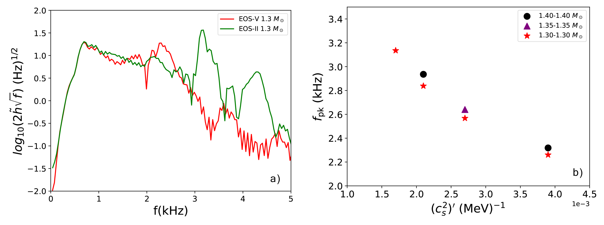
对应解读：建议重点查看的图表第4项、关键图表逐图导读图5、模型拟合段落中的声速斜率与后并合主峰频率关系。
入选理由：日报把声速斜率参数与后并合主峰频率 f2/\(f_pk\) 的散点回归列为核心诊断。Fig07 位于波形、声速演化之后且在能量和抛射物诊断之前，最可能对应本文受控模拟中声速斜率与后并合频率或残骸响应的关键相关图，因此科学价值最高。
来源与置信度：\(arxiv_source\)；high；\(arxiv_source\) / main.tex:figure[7]
Fig11
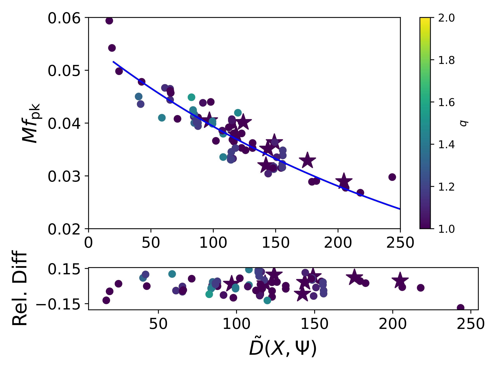
图注：Quasi-Universal relation between $\tilde{D} \sim Mf_{\text{pk}}$. Green dots represent equal mass binaries (q = 1) while the red dots represent mass asymmetric binaries. Our models are represented as stars
对应解读：建议重点查看的图表第6项、关键图表逐图导读图6，以及模型拟合段落中 CoRe 数据库交叉验证和准普适关系讨论。
入选理由：图注明确给出 Quasi-Universal relation between \(\tilde{D}\) \(\sim\) M \(f_{pk}\)，并区分 CoRe 等质量/非等质量样本和本文模型星号，直接支撑日报关于真实 EOS 数据库趋势、偏离点和非严格准普适性的解读。
来源与置信度：\(arxiv_source\)；high；\(arxiv_source\) / main.tex:figure[11]
Fig02
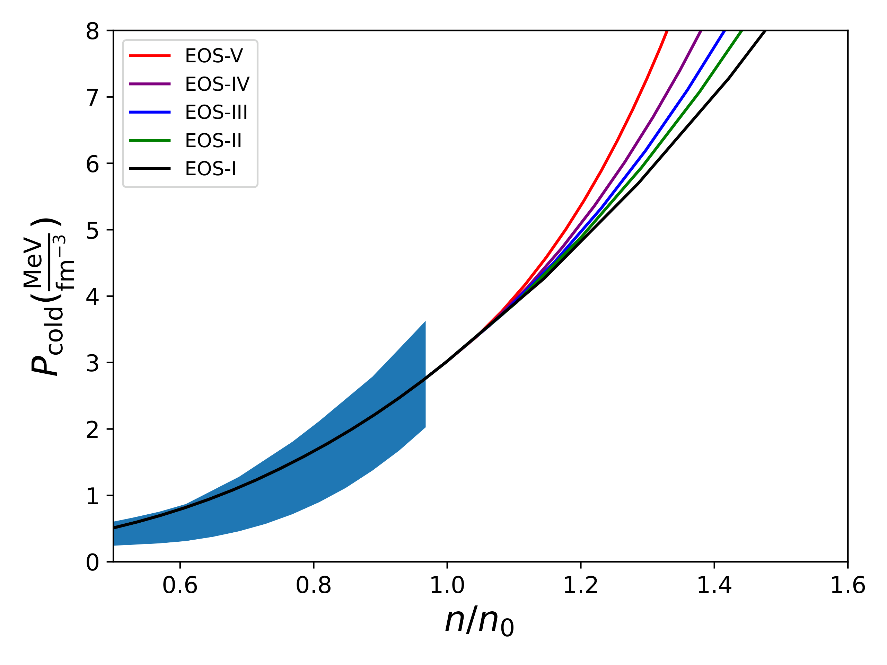
图注：Pressure vs number density in terms of saturation density. For values below and just above saturation all of our EOSs use the same low density tabulated nuclear EOS. The blue region represents the allowed region based the maximal retion bounded by the CoRE equations of state
对应解读：建议重点查看的图表第1项、关键图表逐图导读图1中状态方程族的压力—密度关系。
入选理由：图注明确是 Pressure vs number density，并说明低密度段共用同一核物质 EOS、蓝色区域来自 CoRE EOS 允许范围；这正好用于检查模型是否主要在高密度区变化，以及是否仍落在可接受 EOS 范围内。
来源与置信度：\(arxiv_source\)；high；\(arxiv_source\) / main.tex:figure[2]
Fig05
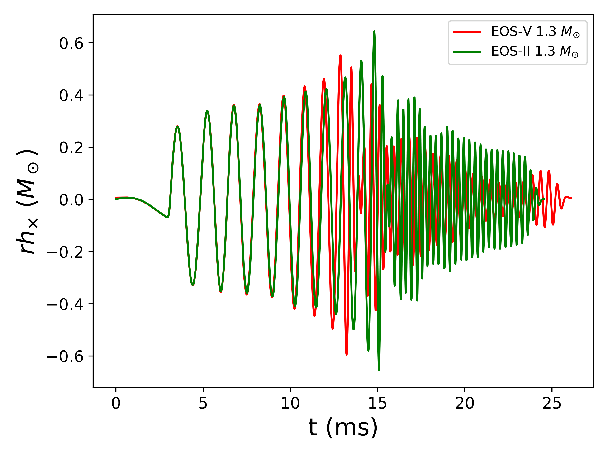
图注：$h_\times$ GW polarization times the extraction radius for the softest and stiffest equations of state which don't collapse to a black hole.
对应解读：建议重点查看的图表第3项、关键图表逐图导读图3中后并合引力波波形/频谱诊断。
入选理由：图注明确展示最软和最硬且未坍缩 EOS 的 h_× 引力波极化随时间变化，是判断后并合信号差异、残骸寿命和频率提取可信度的直接图像证据。
来源与置信度：\(arxiv_source\)；high；\(arxiv_source\) / main.tex:figure[5]
Fig06
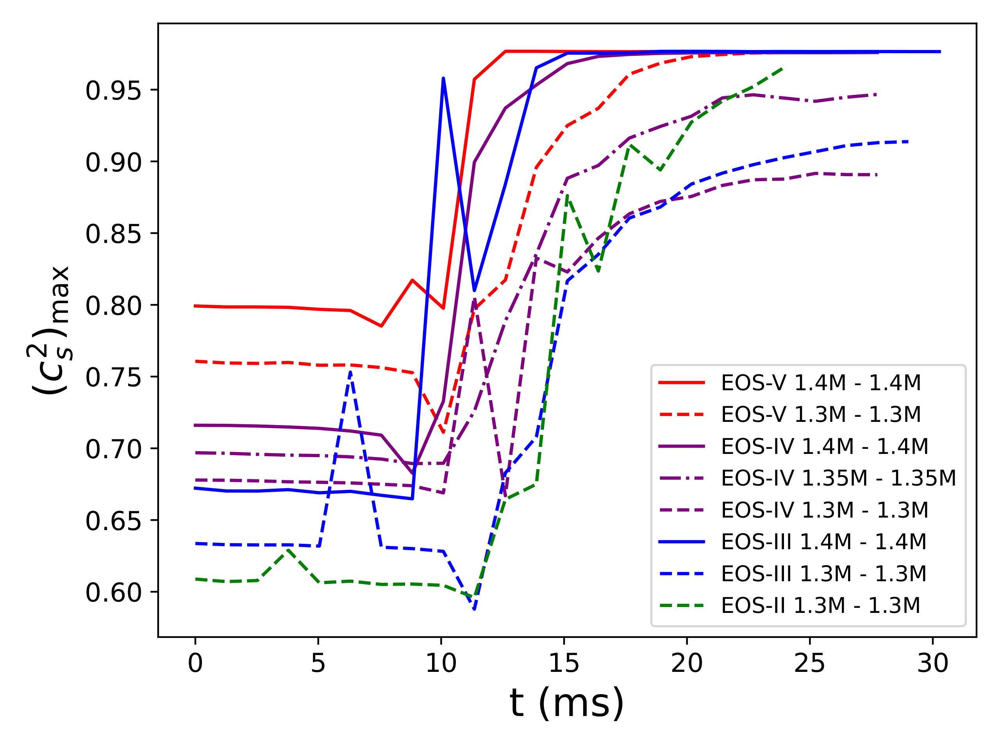
图注：Maximum $c_s^2$ value as a function of simulation time for the runs which did not result in a black hole forming
对应解读：建议重点查看的图表第5项、关键图表逐图导读图4中残骸高密度动力学随时间演化。
入选理由：图注给出未形成黑洞模拟中 maximum \(c_s^2\) 随时间变化，虽不是最大密度本身，但它直接追踪残骸中达到的最高声速状态，可说明不同 EOS 是否真的改变高密度动力学，而不只是改变谱峰拟合。
来源与置信度：\(arxiv_source\)；high；\(arxiv_source\) / main.tex:figure[6]
Fig10
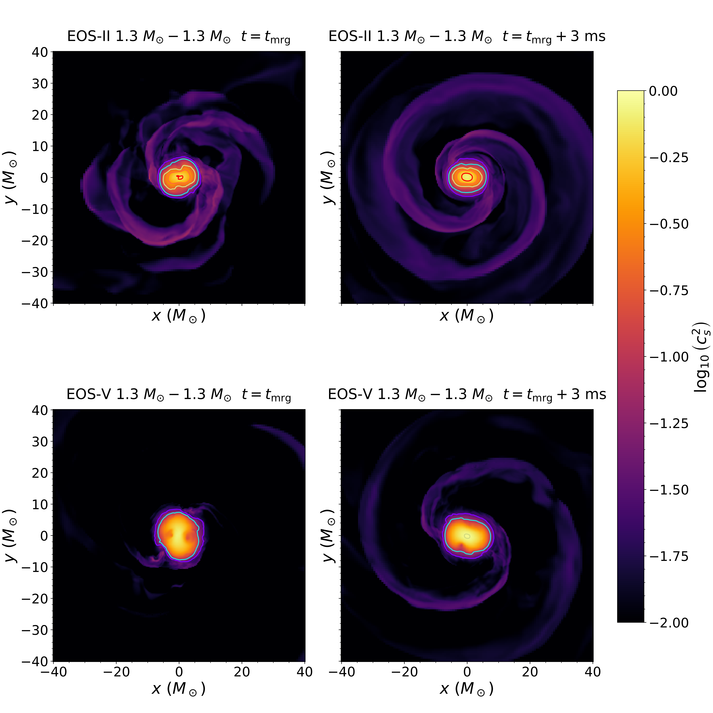
图注：2D color maps of the adiabatic sound speed for the softest and stiffest EOS mergers which did not collapse in the simulation time. Contours of constant density are plotted over the remnant at densities of $n_0/2,n_0,2n_0,3n_0,4n_0$
对应解读：详细解读中关于残骸内部高密度声速分布和物理中介机制的讨论。
入选理由：图注明确为最软和最硬未坍缩 EOS 并合后的二维绝热声速彩色图，并叠加 n0/2 到 4n0 的密度等值线；它能直观看到高密度核心区域声速结构如何不同，补充时间序列和频率相关图的物理解释。
来源与置信度：\(arxiv_source\)；high；\(arxiv_source\) / main.tex:figure[10]
强相关工作
这项工作处在双中子星后并合频率经验关系、数值相对论状态方程研究和高密度声速约束三条文献线的交叉处。同类研究长期关注 \(f_2\) 与中子星半径、最大质量、潮汐形变之间的准普适关系；本文则把焦点转向 \(c_s\) 的密度导数，因此更接近“微分状态方程反演”而非“宏观半径标定”。建议检索关键词包括 “binary neutron star post-merger frequency equation of state”, “sound speed neutron star equation of state”, “CoRe database binary neutron star simulations”, “postmerger gravitational waves quasi-universal relations”。
与潜在相反观点的关系在于，许多经验关系试图用少数宏观量预测后并合频率，从而减少状态方程细节。本文并不否定这些关系，而是指出残余状态方程依赖中可能正包含最想要的高密度物理信息。换句话说，散布不是单纯噪声，也可能是关于 \(d c_s/d\mu_B\)、相变或高密度再硬化的信号。后续阅读可把本文与 \(\mathrm{GW170817}\) 潮汐形变约束、\(\mathrm{NICER}\) 半径约束、以及基于声速参数化的贝叶斯状态方程重建一起比较。
同一事件 / 同类源线索：
- https://arxiv.org/abs/2607.15588
- https://arxiv.org/pdf/2607.15588
- https://www.computational-relativity.org/
相似工作：
基础理论 / 方法工作：
相反观点 / 张力线索：
（未提供）
7. Large-scale emission from gamma-ray binaries: the case of LS 5039
- 来源：arXiv / astro-ph.HE
- 链接：https://arxiv.org/abs/2607.15402v1
- 作者：J. R. Martinez, V. Bosch-Ramon
- 评分：novelty 7/10，importance 7/10，relevance 9/10，final 8.70/10
- 推荐理由：建模 LS 5039 大尺度 X 射线/射电/伽马辐射与 0.1-1 PeV 宇宙线注入，直接涉及 gamma-ray binary、非热辐射和 PeV 粒子加速；相关性高。
中文题目：伽马射线双星的大尺度辐射：以 LS 5039 为例
做了什么：这篇论文讨论伽马射线双星 LS 5039 在轨道尺度之外、约秒差距尺度上的辐射来源。作者假设系统中是非吸积中子星与大质量恒星风相互作用，混合风在外部终止激波处加速粒子，并分别计算三类气泡阶段和两类弓形激波阶段的热辐射、非热同步辐射、逆康普顿辐射、强子过程以及逃逸粒子贡献。核心结论是：已观测到的约 \(1\,{\rm pc}\) 尺度扩展 X 射线更自然地由电子同步辐射解释；某些演化情景还应有可探测射电辐射；在较强弓形激波情景下，逃逸粒子可对稳态伽马射线有小贡献，并可能把能量为 \(0.1\text{--}1\,{\rm PeV}\) 的质子以最高约 \(10^{36}\,{\rm erg\,s^{-1}}\) 的功率注入银河宇宙线。
为什么重要：LS 5039 通常被当作轨道尺度上的高能辐射实验室来研究，但这篇文章强调：双星风碰撞产生的能量和粒子并不会止步于轨道尺度，而会在星际介质中形成气泡或弓形激波。若扩展 X 射线确实来自大尺度同步辐射，它就把伽马射线双星与脉冲星风星云、恒星风泡、逃逸宇宙线源这些问题直接连起来。
理论 / 观测 / 仪器方法价值：理论价值在于把伽马射线双星的非热粒子输运从紧致双星区扩展到秒差距尺度，并比较了气泡与弓形激波两种动力学几何。观测价值在于给出射电、X 射线、伽马射线不同波段的可检验预言，帮助用未来深射电图像、Chandra/XMM-Newton 扩展源测量和 TeV/PeV 观测区分 LS 5039 的年龄、速度、出生地和外部介质条件。方法价值在于展示了如何把简单一温区气泡模型、多温区弓形激波模型和逃逸粒子传播统一到同一套能量预算中。
为什么应该关注：如果你关心高能粒子加速，LS 5039 不只是一个会随轨道调制的紧致伽马射线源，也可能是银河中能把质子推到 \(0.1\text{--}1\,{\rm PeV}\) 的小型加速器。如果你关心观测，这篇文章告诉你扩展 X 射线、低频/高频射电和稳态伽马射线残差应该如何联合使用，而不是只盯着轨道相位光变。若模型成立，伽马射线双星这一类源对银河宇宙线和非热星际反馈的贡献需要重新估计。
展开详细解读：文章讲解、背景、理论、重点章节、图表与相关工作
文章详细讲解
科学问题：LS 5039 是最典型的伽马射线双星之一，由一颗大质量恒星和一个致密天体组成。若致密天体是非吸积中子星，那么脉冲星风与恒星风在轨道尺度上碰撞，产生强烈非热辐射；但系统的机械能和非热粒子还会向外传播，在星际介质中形成更大的结构。关键问题是：已报告的约 \(1\,{\rm pc}\) 尺度扩展 X 射线究竟来自热等离子体、同步辐射、逆康普顿辐射，还是背景/无关结构？进一步说，LS 5039 是否能在双星外部继续加速粒子，并向银河宇宙线注入接近 PeV 的粒子？
作者怎么做：论文构建了五种代表不同演化阶段或环境条件的模型。前三种是气泡情景，用一温区近似处理双星混合风在周围介质中吹出的膨胀泡；后两种是弓形激波情景，用多温区方法描述具有系统空间速度时，混合风与星际介质之间形成的非对称结构。共同的物理假设是：粒子主要在混合风终止激波附近加速，然后在磁场、辐射场和物质密度控制下产生同步辐射、逆康普顿辐射、相对论性轫致辐射和强子 \(pp\) 辐射。作者还单独估计了逃逸电子和质子在更大尺度上的贡献。
关键结果：扩展 X 射线最好由同步辐射解释，这意味着需要存在足够高能的电子和足够强的局部磁场。热辐射或逆康普顿解释在能谱形状、亮度或所需环境参数上较不自然。不同气泡和弓形激波情景给出不同射电亮度，其中一些达到可观测水平，因此射电扩展结构是区分模型的重要手段。在强弓形激波情景下，逃逸粒子对伽马射线可能提供小的稳态成分，但不太可能主导 LS 5039 已知的轨道调制高能辐射。更有意思的是，在乐观注入效率下，逃逸质子可携带最高约 \(10^{36}\,{\rm erg\,s^{-1}}\) 的功率进入 \(0.1\text{--}1\,{\rm PeV}\) 能段。
局限和下一步：这不是一个由新观测直接成像验证的论文，而是围绕现有扩展 X 射线线索进行物理建模和预言。模型对系统年龄、空间速度、环境密度、混合风功率、磁场放大、粒子注入效率和扩散系数都敏感；这些量目前并非全部有强约束。下一步最关键的是获得更深的射电扩展源图像、区分点源和弥散 X 射线的高角分辨率观测、寻找与弓形激波方向一致的形态学证据，并在 GeV--TeV 数据中检验是否存在与轨道调制无关的稳态外延成分。
关键结果是怎么做出来的
这篇文章的证据链不是事件计数型探测，而是“已有扩展 X 射线约束 + 多情景辐射模型 + 多波段可检验预言”。样本只有一个源，即 LS 5039；模型样本则是五个物理情景：三种气泡模型和两种弓形激波模型。读者应把论文看作对同一源的参数化物理解释，而不是对一组伽马射线双星的统计普查。
数据选择上，关键外部约束是 LS 5039 的已知距离、恒星辐射场、双星风功率量级、扩展 X 射线亮度和尺度，以及射电/伽马射线可用的上限或已测总通量。作者没有把轨道调制的紧致区辐射当作大尺度模型的拟合目标，而是关注混合风离开双星后在终止激波、气泡壳或弓形激波尾部产生的稳态或准稳态辐射。因此，若某个模型能解释扩展 X 射线但严重超过射电上限或伽马射线通量，就应被视为受限。
统计意义在本文中主要不是以单一 \(p\) 值或探测显著性给出，而是通过模型谱能量分布与已有观测点/上限的一致性来判断。也就是说，核心比较对象是不同情景下的 (\
u \(F_\nu\)) 谱、空间尺度、冷却长度和能量预算。对于理论读者，最需要检查的是：同步辐射解释扩展 X 射线所需电子能量是否与加速时间、同步冷却时间和对流/逃逸时间相容；对观测读者，最需要检查的是模型曲线是否穿过 X 射线扩展源数据，同时不违反射电和 GeV--TeV 约束。
支持结论的图表通常应包括五类：情景示意或动力学尺度图、不同模型的多波段谱能量分布、粒子能谱及冷却/逃逸时间比较、不同空间区或温区的辐射贡献分解、逃逸粒子对银河宇宙线或伽马射线背景的贡献估计。论文的最重要结果“扩展 X 射线倾向同步辐射”应当由 X 射线点/带与同步曲线的匹配、以及其他辐射机制无法同时满足亮度和谱形来支撑。
主要系统误差来自几个层面。第一是环境量：星际介质密度、系统速度和源年龄决定气泡半径或弓形激波停滞距离。第二是非热量：粒子注入功率、电子/质子比例、谱指数、最高能量和磁场强度决定谱形。第三是输运量：对流速度和扩散系数决定粒子是否在辐射前逃逸。第四是观测量：扩展 X 射线的背景扣除、点扩散函数翼、未分辨点源污染和吸收修正会影响归因。稳健性检验应围绕这些参数变化后结论是否仍偏向同步辐射展开。
展开背景、理论、公式、模型、章节和图表导读
背景知识
伽马射线双星是一类高能辐射主要在 MeV--TeV 波段释放、并随轨道相位强烈变化的双星系统。LS 5039 是该类源的原型之一，具有大质量 O 型伴星、短轨道周期和稳定的高能调制。长期争议在于致密天体到底是吸积黑洞/中子星，还是非吸积脉冲星。本文采用后者图像：脉冲星风与恒星风碰撞，形成双星尺度的风碰撞区和向外的混合风。
历史上，LS 5039 的研究重点集中在轨道尺度：各向异性逆康普顿散射、伽马伽马吸收、级联辐射和轨道调制可以解释很多 GeV--TeV 现象。但如果脉冲星风携带显著自旋降能功率，未在紧致区辐射掉的能量必然继续向外输运。双星作为运动源穿过星际介质时，外流可以像恒星风泡一样膨胀，也可以像高速脉冲星风星云一样形成弓形激波。
重新审视这个问题的原因有三点。第一，X 射线观测中关于 LS 5039 周围约秒差距尺度扩展辐射的线索为大尺度模型提供了直接目标。第二，射电干涉和 X 射线成像能力提高，使得弥散弱结构和点源翼的区分更有希望。第三，银河 PeV 宇宙线源问题仍未解决；若伽马射线双星能在大尺度终止激波继续加速质子，它们可能是传统超新星遗迹以外的补充源类。
常见误区是把“伽马射线双星”完全等同于“轨道尺度辐射源”。事实上，紧致区辐射只告诉我们粒子在强恒星辐射场和复杂吸收环境中的一部分能量释放；大尺度外流则更接近普通星际介质中的加速器。另一个误区是看到扩展 X 射线就立即联想到热激波气体。对 LS 5039 这类系统，非热同步辐射在能量预算和谱形上往往更有竞争力，但它要求电子达到很高能量，并要求冷却时间、输运时间和磁场强度相互匹配。
基础理论 / 方法脉络
基础图像从两股风的动量平衡开始。非吸积中子星释放相对论性脉冲星风，大质量恒星释放较慢但质量负载高的恒星风。两者在双星内部碰撞，形成激波、混合和非热粒子注入。离开双星后，混合风仍有机械功率，可以在外部介质中被终止激波耗散；这里的物理更类似脉冲星风星云或恒星风泡，而不再完全由轨道相位控制。
若源相对周围介质速度较小，外流可近似形成气泡。气泡模型的关键量包括注入机械功率、源年龄、外部密度、气泡半径、内部压力和磁场。本文用一温区近似处理这类情景，即把辐射区看作平均磁场、平均粒子分布和平均密度的体积。优点是透明，适合扫描演化阶段；缺点是会抹平壳层、接触间断面和局部磁场增强。
若 LS 5039 具有显著空间速度，迎风方向的外部介质动压会压缩外流，形成弓形激波。此时停滞距离由风动量通量和外部介质冲压平衡决定，尾部则由对流输运控制。本文对弓形激波采用多温区方法，相当于沿流线或空间区计算粒子冷却和辐射，能更好描述不同位置的能谱软化、亮度分布和逃逸。
辐射机制方面，电子在磁场中产生同步辐射，在恒星光子、红外背景或宇宙微波背景上产生逆康普顿辐射，也可通过相对论性轫致辐射损失能量。质子与气体碰撞产生中性 pion，再衰变为伽马射线，同时产生次级电子正电子。对于扩展 X 射线，若解释为同步辐射，电子能量、磁场和冷却长度必须共同满足观测尺度；若解释为热辐射，则气体温度、发射量和形态必须合理。
关键退化包括磁场与电子归一化之间的退化、年龄与外部密度对气泡大小的退化、扩散系数与逃逸功率对大尺度伽马射线贡献的退化，以及电子最高能量与加速效率之间的退化。观测上还要注意点扩散函数、背景扣除和吸收柱密度对扩展 X 射线谱的影响；在射电上，自由-自由吸收、干涉仪短基线缺失和弥散背景也可能改变结论。
公式与推导
第一步是外流功率的能量预算。设混合风或脉冲星风注入到大尺度结构的功率为 \(L_{\rm w}\)，其中非热粒子占比为 \(\eta_{\rm nt}\)，则非热注入功率为
这里 \(L_{\rm nt}\) 是电子和质子可用的总功率，\(\eta_{\rm nt}\) 表示终止激波把流体能量转化为非热粒子的效率。本文关于 \(0.1\text{--}1\,{\}}\)
m PeV}) 质子注入银河宇宙线的判断，本质上受这个能量预算限制。
第二步是气泡尺度。对持续功率 \(L_{\rm w}\) 注入均匀介质密度 \(\rho_0\) 的经典能量驱动泡，半径近似满足
其中 \(t\) 是源年龄，\(C_{\rm b}\) 是与自相似解有关的常数。这个式子说明同一个约 \(1\,{\rm pc}\) 尺度可以由较年轻高密度环境或较年老低密度环境产生，因此 \(R_{\rm b}\) 本身不能唯一确定年龄。
第三步是弓形激波停滞距离。若系统以速度 \(v_\ast\) 穿过密度 \(\rho_0\) 的介质，迎风面由风动量通量与冲压平衡给出
其中 \(c\) 是光速。\(R_0\) 越小，说明外部冲压越强或风功率越弱；形态上则更容易出现紧凑头部和长尾。
第四步是粒子注入谱。通常令加速粒子满足幂律加指数截断
其中 \(i=e,p\) 分别代表电子和质子，\(p_i\) 是注入谱指数，\(E_{\max,i}\) 是最高能量，\(Q_{0,i}\) 由 \(\int E Q_i(E)dE=L_i\) 归一化。谱指数控制射电到 X 射线斜率，截断能量决定能否解释 X 射线同步辐射或 PeV 质子。
第五步是最高能量由加速和损失竞争决定。若扩散接近 Bohm 极限，可写加速时间为
其中 \(B\) 是磁场，\(e\) 是元电荷，\(\eta_{\rm acc}\geq 1\) 描述加速效率。最高能量由 \(t_{\rm acc}=\min(t_{\rm syn},t_{\rm IC},t_{\rm adv},t_{pp})\) 或由几何限制给出。
第六步是同步冷却。电子洛伦兹因子为 \(\gamma\) 时，同步损失时间为
其中 \(m_e\) 是电子质量，\(\sigma_T\) 是 Thomson 截面。这个式子表明强磁场有利于提高同步亮度，但会缩短 X 射线电子寿命，因而会限制扩展 X 射线的空间长度。
第七步是同步特征频率。单个相对论电子主要在
附近辐射。因此要在 X 射线频段产生光子，需要较高的 \(\gamma\) 或较大的 \(B\)。这正是本文用扩展 X 射线反推大尺度电子加速能力的关键。
第八步是稳态粒子分布。在一温区近似中，粒子数分布 \(N(E)\) 可由连续性方程近似描述：
这里 \(\dot{E}(E)\) 是总能量损失率，\(t_{\rm esc}\) 是逃逸或对流时间。这个方程连接注入、冷却和逃逸，是计算谱能量分布的核心。
第九步是可观测通量。若辐射体积的谱光度为 \(L_\)
u)，距离为 \(d\)，观测通量密度为
因此距离不确定性会以 \(d^{-2}\) 直接影响所有模型曲线归一化；对 LS 5039 这种单源研究，距离误差会和粒子注入效率、磁场强度产生退化。
第十步是模型与观测约束的比较。若用高斯近似处理多波段数据点 \(F_j\) 和模型 \(M_j(\boldsymbol{\theta})\)，可写
其中 \(\boldsymbol{\theta}\) 包含 \(L_{\rm w}\)、\(B\)、\(p_i\)、\(E_{\max,i}\)、\(t\)、\(\rho_0\) 等参数。即使论文主要进行情景建模而非全局贝叶斯拟合，这个诊断也说明读者应如何判断某条谱能量分布曲线是否真正被数据支持。
模型拟合 / 应用方法
本文更接近物理情景建模，而不是对大量数据点进行自动化全局拟合。拟合或调参的核心量包括大尺度注入功率、非热效率、电子与质子能量分配、注入谱指数、最高能量、磁场、环境密度、源年龄、系统速度和输运时间。对于气泡情景，半径、压力和平均磁场是主要中间量；对于弓形激波情景，停滞距离、尾部速度场和分区冷却历史更重要。
似然意义上，最直接的约束来自扩展 X 射线通量和谱形，以及射电和伽马射线的上限或总通量限制。理想做法是构造多波段联合似然：X 射线扩展源用背景扣除后的谱点和空间模板，射电用表面亮度或通量上限，GeV--TeV 用稳态非调制分量上限。本文的结果可理解为在物理合理参数范围内寻找能同时满足这些约束的区域。
残差应从两个方向看。若同步模型低估 X 射线，需要提高电子归一化、磁场或最高能量，但这可能同时抬高射电通量或加快冷却。若模型超过射电上限，可能说明低能电子过多、磁场过强，或射电辐射区体积假设不对。若模型在伽马射线超过观测，可能是逆康普顿或强子分量过高，也可能说明逃逸粒子扩散参数过于乐观。
主要退化包括 \(B\) 与电子数归一化的退化、\(p_e\) 与 \(E_{\max,e}\) 对 X 射线谱斜率的退化、\(t\) 与 \(\rho_0\) 对气泡半径的退化、\(v_\ast\) 与 \(L_{\rm w}\) 对弓形激波停滞距离的退化、以及扩散系数与逃逸粒子伽马射线亮度的退化。打破这些退化需要形态学信息：例如 X 射线是否沿系统自行方向拉长，射电峰值是否位于预期弓形激波壳层，或谱指数是否沿尾部软化。
模型可能失败的地方也很明确。如果扩展 X 射线最后被证明是点扩散函数翼、背景活动星系或无关弥散结构，本文的主要观测动机就会削弱。如果未来深射电观测给出远低于模型预言的上限，同步解释中的低能电子部分需要重写。如果 LS 5039 的致密天体并非非吸积中子星，外流功率和几何也会改变；但即便如此，本文的“外流与星际介质相互作用产生大尺度非热辐射”的方法框架仍可迁移到其他系统。
重点章节 / 结果段落怎么读
-
引言和观测动机：读者应先抓住两个事实，LS 5039 是轨道调制显著的伽马射线双星，同时存在约 \(1\,{\rm pc}\) 级扩展 X 射线线索。引言的重点不是重复伽马射线双星综述，而是说明为什么轨道外尺度的能量释放必须被建模。
-
物理情景设定：重点读三种气泡情景和两种弓形激波情景的定义，包括假设的年龄、环境密度、系统速度和外流功率范围。这里决定了后面所有谱能量分布差异，尤其要看哪些参数是观测约束，哪些只是代表性选择。
-
粒子加速与辐射模型：这一部分是论文核心。读者应检查电子和质子的注入谱、非热效率、磁场设定、最高能量计算、冷却过程和逃逸处理。气泡的一温区近似与弓形激波的多温区处理是方法差异的关键。
-
多波段结果：重点比较同步、逆康普顿、轫致辐射和强子辐射在射电、X 射线、GeV--TeV 以及更高能段的贡献。论文关于扩展 X 射线由同步辐射解释的判断，应在这里得到最直接支撑。
-
逃逸粒子和宇宙线讨论：这一节关系到更广泛的意义。读者应看清楚 \(0.1\text{--}1\,{\rm PeV}\) 质子功率估计依赖哪些乐观假设，以及这种贡献是单源局部效应还是可推广到伽马射线双星族群。
-
讨论与预测：最后应关注作者给出的可观测判据，例如射电可探测性、X 射线形态、稳态伽马射线小贡献和对 LS 5039 年龄/出生地的约束。这些内容决定论文是否能被未来观测证伪。
建议重点查看的图表
-
情景几何示意或尺度表：检查三种气泡和两种弓形激波的半径、停滞距离、年龄、环境密度和速度是否在 LS 5039 的观测约束内。
-
多波段谱能量分布图：重点看同步曲线是否穿过扩展 X 射线数据，同时是否低于射电和伽马射线上限；还要看不同机制是否被清楚分解。
-
粒子能谱图：检查电子谱在产生 X 射线所需能量处是否仍有足够粒子，质子谱是否能延伸到 \(0.1\text{--}1\,{\rm PeV}\)。
-
冷却时间、加速时间和逃逸时间比较：这是判断最高能量是否可信的关键诊断。若 \(t_{\rm acc}\) 无法低于损失或逃逸时间，PeV 结论就不稳。
-
弓形激波多温区贡献图：看头部和尾部哪个区域主导 X 射线、射电或伽马射线，以及谱指数是否随距离软化。
-
逃逸粒子辐射或宇宙线功率图：检查逃逸质子功率是否只在乐观注入效率下达到 \(10^{36}\,{\rm erg\,s^{-1}}\)，以及对 GeV--TeV 观测是否构成可见稳态残差。
-
参数敏感性或稳健性表：如果有，应重点看磁场、环境密度、年龄、粒子注入效率变化后，同步解释扩展 X 射线是否仍保持优势。
关键图表逐图导读
图 1：通常应是源环境、气泡/弓形激波几何或五种情景的示意图。横向读法是比较不同演化阶段的空间尺度：气泡情景更接近准球形或壳层结构，弓形激波情景有迎风停滞点和尾迹。读图陷阱是不要把示意图当作真实成像；它主要告诉你模型的几何假设和能量流向。
图 2：若为多波段谱能量分布，横轴通常是频率或光子能量，纵轴通常是 (\
u \(F_\nu\)) 或 \(E^2 dN/dE\)。数据点/带代表现有射电、X 射线和伽马射线约束，模型线分解同步、逆康普顿、轫致辐射和强子过程。关键结论是扩展 X 射线应落在同步分量上，而其他分量不应超过观测上限。读图陷阱是总通量和扩展通量不能混用，轨道调制紧致区伽马射线也不能直接当作大尺度辐射。
图 3：若为粒子能谱或能量损失图，横轴是粒子能量，纵轴是 \(E^2N(E)\)、\(Q(E)\) 或时间尺度。应检查电子是否能达到产生 X 射线同步辐射的能量，质子是否能达到 \(0.1\text{--}1\,{\rm PeV}\)。模型线的截断位置比低能归一化更关键。读图陷阱是最高能量只是必要条件，不代表这些粒子一定有足够功率形成可探测辐射。
图 4：若为不同气泡情景的辐射比较，坐标仍多半是谱能量分布。应比较年龄、密度或磁场改变后，射电和 X 射线峰值如何移动。若某个情景解释 X 射线但射电过亮，它就需要额外吸收或更低低能电子数；若 X 射线需要极端磁场，则物理可信度降低。
图 5：若为弓形激波多温区结果，可能展示沿尾部不同区域的辐射贡献。读者应看头部压缩区是否主导高能同步辐射，尾部是否贡献较低频射电，以及空间积分谱是否掩盖局部谱软化。读图陷阱是多温区总谱看似好，但形态可能与真实 X 射线扩展方向不一致；形态检验与谱检验同等重要。
图 6：若为逃逸粒子贡献或宇宙线注入，横轴可能是粒子能量或光子能量，纵轴是逃逸功率、局部宇宙线能量注入率或伽马射线通量。关键是看逃逸质子在 \(0.1\text{--}1\,{\rm PeV}\) 的功率是否达到论文声称的量级，以及该结果依赖的注入效率是否被标注。读图陷阱是把乐观上限当作保守预测；这部分更像可行性边界而非已观测事实。
论文原图 / 可嵌入图片
Fig08
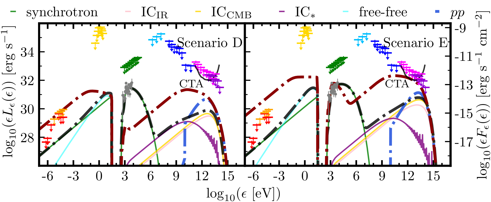
图注：SEDs of the bow-shock scenarios corrected for photoelectric absorption. The dash-dotted black, dark red, and blue lines represent the total SED from the bow shock, the relic bubble, and from protons diffusing through the ISM, respectively. The solid lines represent the radiation through each mechanism in the bow shock. We considered the same data as in Fig.~\(\ref{fig:SED_bubble}.\)
对应解读：“多波段谱能量分布图”“弓形激波多温区贡献图”以及模型拟合段落中关于扩展 X 射线同步解释、伽马射线上限和逃逸质子分量的讨论。
入选理由：这是弓形激波两种情景的核心 SED 图，直接分解了弓形激波、遗迹气泡和扩散质子在多波段的贡献，并与射电、X 射线、GeV--TeV/UHE 上限及 CTA 灵敏度比较。它最能检验日报强调的‘同步曲线是否解释扩展 X 射线且不超出其他波段约束’，也能体现多温区/逃逸分量的科学结论。
来源与置信度：\(arxiv_source\)；high；\(arxiv_source\) / aa60821-26.tex:figure[8]
Fig07
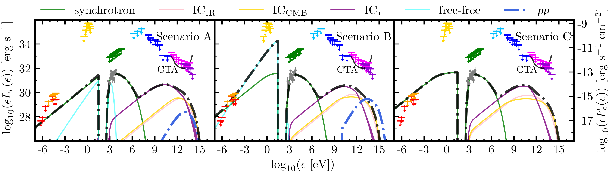
图注：SEDs of the bubble scenarios corrected for photoelectric absorption, along with the \(\cite{Durant_2011}\) data in grey. The dash-dotted black line represents the total spectrum emitted within the binary. The dash-dotted blue line represents the proton-proton component from protons that diffuse into the ISM. We considered the data from \(\cite{Marcote_2015}\) (red marks) and \(\cite{Marti_1998}\) (orange marks) for radio, \(\cite{Clark_2001}\) (yellow marks) for optical, \(\cite{Takahashi_2009}\) (green marks) for X-rays, \(\cite{Collmar_Zhang_2014}\) (light blue marks) for $\sim 10$~MeV, \(\cite{Hadasch_2012}\) (blue marks) for HE, \cite{Aharonian_2006}(magenta marks) for VHE, and \(\cite{Alfaro_2025}\) (violet marks) for UHE as upper limits. These are also the minimum luminosities across the binary orbit at each spectral band. We took the CTA 50~h observation time sensitivity curve from \(\cite{CTA}.\)
对应解读：“多波段谱能量分布图”“不同气泡情景的辐射比较”以及模型拟合段落中关于气泡情景射电、X 射线和伽马射线约束的讨论。
入选理由：这是三种气泡情景的宽波段 SED，与 Fig08 形成互补，能够比较气泡模型是否能用同步辐射穿过 Durant 等扩展 X 射线数据，同时保持在射电、HE/VHE/UHE 观测限制以下。它还标出了双星内区总谱和扩散质子 pp 分量，是判断气泡情景可行性的关键图。
来源与置信度：\(arxiv_source\)；high；\(arxiv_source\) / aa60821-26.tex:figure[7]
Fig03
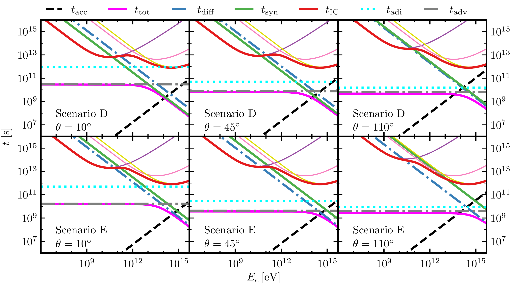
图注：Electron characteristic timescales for the bow-shock scenarios and for different values of the angle $\theta$.
对应解读：“冷却时间、加速时间和逃逸时间比较”以及弓形激波最高电子能量可信度的诊断。
入选理由：该图给出弓形激波情景下不同角度 θ 的电子特征时间尺度，可直接检查加速时间与冷却、逃逸或源年龄限制的交点，从而判断产生 X 射线同步辐射所需高能电子是否物理可达。相比只看最终 SED，它更能支撑最高能量和多温区冷却历史的解释。
来源与置信度：\(arxiv_source\)；high；\(arxiv_source\) / aa60821-26.tex:figure[3]
Fig02
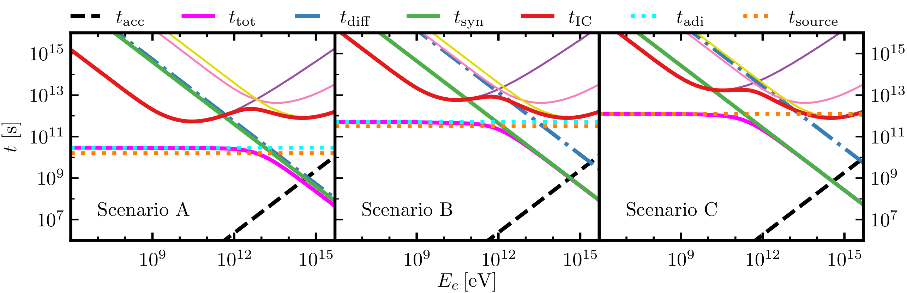
图注：Electron characteristic timescales for bubble scenarios. The solid purple, pink, and yellow lines correspond to IC with the UV, Galactic IR, and CMB photon fields, respectively. The intersection between $t_{\rm acc}$ and $\min{(t_{\rm source}, t_{\rm tot})}$ determines the maximum energy of the particles.
对应解读：“冷却时间、加速时间和逃逸时间比较”以及气泡情景中电子最高能量的模型诊断。
入选理由：该图展示气泡情景电子加速、IC、同步等特征时间尺度，并明确最高能量由 \(t_acc\) 与源年龄或总损失时间的交点决定。它是检验气泡模型能否产生扩展 X 射线同步电子的基础诊断，与 Fig03 一起覆盖日报中要求重点核查的时间尺度约束。
来源与置信度：\(arxiv_source\)；high；\(arxiv_source\) / aa60821-26.tex:figure[2]
Fig06
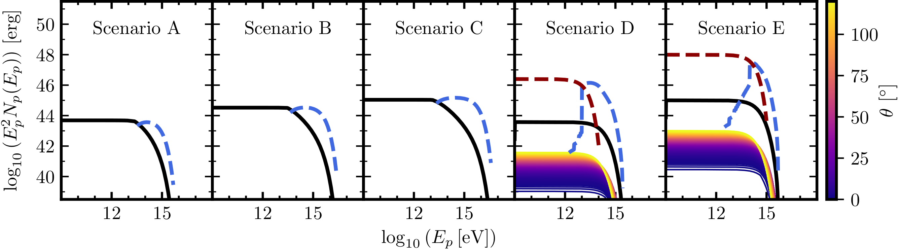
图注：Proton energy distributions. The solid black line refers to the total distribution within the shocked MWO. The dashed dark red line represents the proton distribution within the relic bubble. The dashed blue line refers to the total distribution of protons that diffuse into the medium.
对应解读：“粒子能谱图”“逃逸粒子辐射或宇宙线功率图”以及关于 0.1--1 PeV 逃逸质子和 Galactic cosmic rays 注入的讨论。
入选理由：该图直接展示质子能量分布，包括激波内总分布、遗迹气泡分布和扩散到介质中的质子分布。它最贴合日报中关于质子是否延伸到 0.1--1 PeV、逃逸粒子是否可向银河宇宙线注入显著功率的重点判断。
来源与置信度：\(arxiv_source\)；high；\(arxiv_source\) / aa60821-26.tex:figure[6]
Fig04
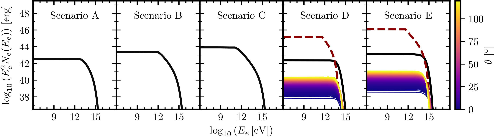
图注：Electron energy distributions. The bubble distributions are strongly constrained by the age of the source and are softened at high energies by synchrotron cooling. We show the distribution as a function of $\theta$ (colour scale) along with the total distribution (black line) in the bow-shock scenarios. The dashed dark red line represents the electron distribution within the relic bubble.
对应解读：“粒子能谱图”以及模型拟合段落中关于电子谱冷却、最高能量和 X 射线同步辐射所需粒子数的讨论。
入选理由：该图给出电子能量分布，并区分气泡情景、弓形激波不同 θ 区域总分布以及遗迹气泡分量。它可用来检查电子谱在高能端是否因同步冷却变软、是否仍有足够电子产生扩展 X 射线，是解释 SED 图背后粒子物理的关键补充。
来源与置信度：\(arxiv_source\)；high；\(arxiv_source\) / aa60821-26.tex:figure[4]
强相关工作
同源背景方面，LS 5039 有大量同一源论文：早期高能对应体识别、H.E.S.S. 的 TeV 探测和轨道调制、Fermi-LAT 的 GeV 调制、射电 VLBI 形态变化、以及 X 射线时变研究。本文与这些工作的关系是把紧致区辐射之外的能量流接到秒差距尺度，因此检索时应使用关键词 “LS 5039 extended X-ray emission”, “LS 5039 bow shock”, “LS 5039 pulsar wind”, “gamma-ray binary large-scale emission”。
同类源方面，可与 PSR B1259-63/LS 2883、LS I +61 303、HESS J0632+057 等伽马射线双星比较。这些系统中也存在风碰撞、非热粒子输运和轨道外结构问题，但环境、轨道偏心率、恒星盘和系统速度不同。若要理解理论脉络，应检索 “gamma-ray binaries review”, “pulsar wind termination shock”, “stellar wind bubble”, “bow shock pulsar wind nebula”。
潜在张力在于致密天体性质和扩展 X 射线归因。若 LS 5039 的致密天体不是非吸积脉冲星，本文的风功率来源要重写；若扩展 X 射线被新观测否定或归因于无关背景源，大尺度同步辐射解释会失去主要支点。相反，若未来发现与自行方向一致的 X 射线/射电尾迹，将明显支持本文的弓形激波或混合风终止激波图像。
同一事件 / 同类源线索：
- https://arxiv.org/abs/2607.15402
- https://arxiv.org/abs/1307.7083
- https://arxiv.org/abs/astro-ph/0508298
相似工作：
基础理论 / 方法工作：
- https://ui.adsabs.harvard.edu/abs/1977ApJ...218..377W/abstract
- https://ui.adsabs.harvard.edu/abs/1996ApJ...458..278W/abstract
相反观点 / 张力线索：
（未提供）
8. Multimessenger prospects of quasi-periodic eruptions
- 来源：arXiv / astro-ph.HE
- 链接：https://arxiv.org/abs/2607.15360v1
- 作者：Vojtěch Witzany, Alessia Franchini, Matteo Bonetti, Luca Broggi
- 评分：novelty 7/10，importance 8/10，relevance 8/10，final 8.70/10
- 推荐理由：astro-ph.HE；讨论QPE作为EMRI电磁对应体与LISA引力波的联合探测前景，涉及软X射线核瞬变和多信使致密天体物理。结论偏前景评估而非新观测，但对QPE/EMRI协同观测策略有参考价值。
中文题目：准周期爆发的多信使前景：哪些 QPE 可能同时被 LISA 看见？
做了什么：这篇文章讨论软 X 射线准周期爆发（QPE）如果由恒星质量天体绕超大质量黑洞缓慢内旋的极端质量比系统（EMRI）产生，那么它们是否有机会成为 LISA 引力波事件的电磁对应体。作者把已知 QPE 的爆发周期、推测轨道周期、中心黑洞质量与 LISA 频段和灵敏度联系起来，评估同时探测的可行性。主要结论偏谨慎：目前多数已知 QPE 对应的轨道频率太低或系统参数不利，难以落在 LISA 最敏感频段；真正有希望的是周期更短、距离更近、中心黑洞质量和轨道结构合适的“黄金 QPE”。
为什么重要：LISA 的核心科学目标之一是探测 EMRI，而 QPE 可能提供少数可在电磁波段预先识别的 EMRI 候选体。如果能把同一个系统的 X 射线周期爆发和毫赫兹引力波相位演化连起来，就能同时测量黑洞质量、自旋、轨道几何、宿主星系环境和宇宙学距离。这不仅是多信使天文学的漂亮案例，也会直接检验 QPE 的物理起源。
理论 / 观测 / 仪器方法价值：这篇文章的价值不在于宣布一个已确定的双重探测源，而在于把 QPE 样本选择、EMRI 轨道频率、LISA 灵敏度窗口和电磁巡天偏差放到同一个定量框架中。它为未来 X 射线巡天和 LISA 前的候选源筛选给出明确方向：不要只找“周期稳定的 QPE”，还要优先找短周期、低红移、可长期监测、能够约束黑洞质量和轨道演化的系统。
为什么应该关注：如果你关心 LISA 源定位、标准汽笛、活动星系核核区动力学或 QPE 起源，这篇文章都值得看。它提醒我们：多信使前景不是“有一个 X 射线周期源就够了”，而是要同时满足电磁可见性、引力波频率、信噪比、任务寿命和选择效应。这个约束会影响未来几年如何设计 QPE 搜索、如何分配 X 射线随访资源，以及如何建立 LISA EMRI 电磁对应体数据库。
展开详细解读：文章讲解、背景、理论、重点章节、图表与相关工作
文章详细讲解
科学问题：QPE 是近几年在低质量星系核中发现的一类软 X 射线重复爆发现象，典型表现为安静态之上周期性或准周期性的高振幅软 X 射线增强。一个有吸引力的解释是：一颗恒星质量致密天体或剥离星核在超大质量黑洞附近做高度相对论轨道运动，每次近心通过或穿盘时触发能量释放。若该系统同时处于长期引力波驱动内旋阶段，它就与 LISA 期待的 EMRI 源产生联系。本文问的是一个很具体的问题：已知或未来发现的 QPE 中，有多少可能同时是 LISA 可探测 EMRI？
作者怎么做：文章从 QPE 的观测周期出发，把爆发间隔映射到候选 EMRI 的轨道周期或其简单倍数，再把轨道频率转换为引力波主频。然后将这些频率与 LISA 的毫赫兹灵敏度窗口比较，并讨论源质量、质量比、红移距离、轨道偏心率、黑洞自旋和观测时长对信噪比的影响。作者还强调，QPE 的发现本身有很强选择函数：需要足够亮的软 X 射线源、足够密集的时间采样、合适的爆发占空比和较低吸收；而 LISA 的选择函数偏好较高引力波频率、足够长相干观测时间和较近距离。
关键结果：文章的核心判断是，目前已知 QPE 的周期通常对应较低轨道频率，使引力波信号落在 LISA 灵敏度较差的一侧，或者在任务寿命内信噪比不足。因此，不能简单把“QPE 可能是 EMRI”理解为“已知 QPE 都是 LISA 近邻目标”。真正有希望的是短周期 QPE：爆发间隔更短意味着轨道频率更高，更接近 LISA 的敏感频段；若再叠加较小中心黑洞质量、较近距离和稳定可追踪的相位演化，就可能成为多信使黄金源。
局限和下一步：本文依赖于 QPE 物理解释仍未定论这一前提。若 QPE 来自盘不稳定、潮汐剥离碎片、白矮星反复部分瓦解、双盘相互作用或其他非 EMRI 机制，那么从爆发周期到引力波频率的映射会改变。另一方面，现有 QPE 样本很小，且由非均匀 X 射线观测发现，选择偏差严重。下一步最关键的是扩大样本、获得长期相干时序、改进黑洞质量估计，并在 LISA 发射前建立可用于引力波定向搜索的 QPE 候选表。
关键结果是怎么做出来的
这篇文章最重要的证据链从“已知 QPE 的周期分布”开始。作者把当前观测到的 QPE 当作一个小而有偏的先验样本：这些源通常在软 X 射线中被发现，有重复爆发，爆发间隔从数小时到更长时间不等。由于论文关心的是多信使可见性，样本并不是为了统计 QPE 总发生率，而是为了判断这些已知周期如果解释为 EMRI 轨道运动，会落在 LISA 频率空间的什么位置。
核心换算是从爆发周期到轨道频率，再到引力波频率。对于近圆轨道的最低阶估计，引力波主谐波频率约为轨道频率的两倍；对于偏心轨道，功率会分布到多个谐波，峰值谐波还与偏心率有关。作者据此比较已知 QPE 的候选频率与 LISA 灵敏度曲线，发现多数系统处在低频端或信噪比不优的位置。这不是一个单纯的“频率是否落在 LISA 名义频段内”的二元判断，而是要看噪声谱、观测时间、源距离和波形相干积累。
统计显著性在本文中更接近“可探测性预测”而非对某个真实事件的显著性声明。也就是说，作者关注的是给定源参数下的预期信噪比、可定位能力和多信使收益，而不是从 LISA 数据中已经提取出一个事件。读者应特别关注文中把 QPE 周期映射到 LISA 信噪比或频段位置的图表，以及展示已知 QPE 与潜在短周期 QPE 在参数空间中位置差异的诊断图。
系统误差主要来自三层。第一，QPE 周期是否等于轨道周期、半个轨道周期或某个谐波周期并不确定。第二，中心黑洞质量通常由宿主星系标度关系、光谱或 X 射线变率间接估计，误差会直接传播到轨道半径、ISCO 频率和引力波频率判断。第三，电磁发现偏差会让已知 QPE 倾向于较亮、较长时间尺度、较容易被稀疏观测捕获的系统，而 LISA 偏好可能完全不同。
稳健性检验的关键不在于某一个精确数值，而在于趋势是否稳定：缩短周期、降低距离、提高相干观测时间、进入 LISA 最敏感毫赫兹区间，都会显著改善多信使前景。反过来，长周期 QPE 即使电磁上非常漂亮，也可能对 LISA 不是好目标。本文因此把未来搜索策略从“找更多 QPE”推进到“找对 LISA 有用的 QPE”。
展开背景、理论、公式、模型、章节和图表导读
背景知识
QPE 指星系核软 X 射线光变曲线中的重复爆发现象，爆发间隔大致稳定但并非严格钟表式。它们通常出现在低质量或中等质量超大质量黑洞周围，爆发光谱偏软，振幅可很高，安静态与爆发态之间有清晰差异。与普通 AGN 随机红噪声不同，QPE 的准周期性和高振幅使其很自然地让人联想到轨道运动、盘穿越或潮汐相互作用。
历史上，QPE 研究与几个问题纠缠在一起：它们是否与潮汐瓦解事件残余盘有关？是否需要一个反复穿过吸积盘的次级天体？爆发能量来自盘冲击、潮汐加热还是吸积率调制？这些问题尚无定论，因此把 QPE 解释为 EMRI 并不是唯一方案。本文的立场是：如果至少一部分 QPE 真是 EMRI 的电磁表现，那么它们与 LISA 的联系值得严肃评估。
EMRI 是小质量致密天体绕大质量黑洞缓慢内旋的系统，质量比通常很小，轨道在强引力区经历大量周期。LISA 对 EMRI 极其敏感，因为毫赫兹频段正对应大质量黑洞附近的轨道频率。EMRI 波形携带黑洞质量、自旋、多极矩和轨道历史信息，是强场广义相对论、黑洞人口学和星系核动力学的关键探针。
现在值得重新看这个问题，是因为两条路线正在汇合：一方面，XMM-Newton、eROSITA、Chandra、Swift 和未来更高 cadence 的 X 射线监测正在扩大 QPE 样本；另一方面，LISA 已进入任务准备阶段，社区需要可操作的电磁对应体策略。若能在 LISA 之前识别候选 QPE-EMRI，未来引力波搜索可以利用已知天区、红移和周期先验，提高效率。
一个常见误区是把“周期性电磁爆发”和“可探测引力波源”直接画等号。事实上，引力波探测受频率、距离、相干时间、噪声谱和波形匹配限制；电磁可见性则受吸收、盘结构、爆发占空比和巡天 cadence 限制。两者的选择函数并不相同，因此多信使重合可能比直觉上少得多。
基础理论 / 方法脉络
最基本的物理图像是一个小质量天体在超大质量黑洞引力势中运动。若轨道足够紧，引力波带走能量和角动量，使轨道逐渐内旋。电磁 QPE 则需要额外的辐射机制，例如小天体穿越吸积盘、潮汐剥离物质被加热，或轨道相位调制盘内能量释放。本文并不要求完全解决辐射机制，而是先问轨道周期对应的引力波信号是否在 LISA 可见。
对于近圆轨道，开普勒频率给出轨道周期与半径、黑洞质量之间的第一近似关系。若 QPE 爆发每个轨道出现一次，则爆发周期近似等于轨道周期；若每轨道两次穿盘，则爆发周期可能是轨道周期的一半。这个整数因子会把引力波频率估计移动一个倍数，因此是重要系统误差。
LISA 的探测不是只看源有没有发射引力波，而是看信号在噪声谱中能否相干积累。EMRI 信号复杂，包含偏心率、自旋轨道耦合、进动和多谐波；但在可探测性估计中，常先用特征应变与 LISA 噪声特征应变比较。频率太低时，LISA 加速度噪声和银河白矮星混淆前景会变得重要；频率太高时，臂长响应和源演化也要处理。
本文的关键量包括 QPE 周期、红移或距离、中心黑洞质量、次级天体质量、轨道偏心率、可能的谐波编号、观测时间和 LISA 噪声功率谱。任何一个量的不确定性都会影响预期信噪比。尤其是黑洞质量与轨道半径的退化：同一个观测周期可以对应不同质量黑洞上的不同无量纲半径，从而改变是否接近最内稳定圆轨道以及系统寿命。
观测方法上的主要 degeneracy 是时间尺度解释。QPE 的爆发间隔可以是轨道周期、近心回归周期、盘穿越周期、吸积盘热时间或某种非线性振荡时间。若错把非轨道时间尺度当作轨道周期，就会错误预测 LISA 频率。因此，长期相位稳定性、爆发形状演化、光谱滞后、宿主黑洞质量和可能的周期导数都很重要。
公式与推导
第一步从两体近圆轨道的频率估计开始。在牛顿极限下，中心黑洞质量为 \(M\)，轨道半径为 \(r\)，轨道角频率为
这里 \(G\) 是引力常数。这个式子只适用于 \(r\) 不太接近视界且自旋效应可先忽略的估计，但它给出了 QPE 周期与轨道尺度的基本连接。
若观测到的 QPE 爆发间隔为 \(P_{\rm QPE}\)，且每个轨道产生 \(k\) 次可见爆发，则轨道周期可写为
其中 \(k=1\) 可代表每轨一次触发，\(k=2\) 可代表双盘穿越或两次相似相位触发。这个整数因子是把电磁周期转换为引力波频率时最直接的模型不确定性。
近圆轨道的主导四极矩引力波频率约为
若轨道偏心率为 \(e\)，辐射功率会分布在多个谐波 \(n f_{\rm orb}\) 上，峰值谐波随 \(e\) 增大而上移；因此短周期和高偏心率都可能把部分功率推入 LISA 更敏感的频段。
为了判断轨道是否物理上接近强场区，可把半径写成引力半径 \(r_g=G M/c^2\) 的倍数。由开普勒关系得到
这里 \(c\) 是光速。若该无量纲半径接近最内稳定圆轨道尺度，广义相对论修正、自旋和进动就不能忽略。
EMRI 的振幅尺度常用啁啾质量 \({\cal M}\) 表示，定义为
其中 \(m\) 是次级天体质量且通常满足 \(m\ll M\)。在这个极端质量比极限下，\({\cal M}\) 主要由 \(m\) 和 \(M\) 的组合控制，而不等同于中心黑洞质量本身。
近圆双体在频率 \(f\) 处的应变幅度量级可写为
其中 \(D_L\) 是光度距离。这个表达式省略了取向、偏振、偏心率和 LISA 天线响应，但能说明为什么近距离、较大 \({\cal M}\) 和较高频率有利于探测。
相干观测时间为 \(T_{\rm obs}\) 时，单频近似下的特征应变可估为
这说明 LISA 对长寿命相干信号非常敏感；EMRI 即使瞬时振幅小，也能通过许多轨道周期积累信噪比。
与仪器噪声比较时，可定义噪声特征应变
其中 \(S_n(f)\) 是 LISA 的等效单边噪声功率谱密度，通常还需加入银河双白矮星混淆噪声。粗略可探测性要求 \(h_c(f)\) 在相关频段超过或接近 \(h_n(f)\)，但真实 EMRI 搜索需要全波形匹配。
更一般地，匹配滤波信噪比写为
其中 \(\tilde{h}(f;\boldsymbol{\theta})\) 是参数 \(\boldsymbol{\theta}\) 下的频域波形。本文的多信使判断本质上就是问由 QPE 推断的 \(\boldsymbol{\theta}\) 是否能给出足够大的 \(\rho\)。
若有电磁先验，例如已知天区 \(\hat{\Omega}\)、周期 \(P_{\rm QPE}\) 和红移 \(z\)，引力波参数估计可写成贝叶斯形式
这里 \(d\) 是 LISA 数据，\({\cal L}_{\rm GW}\) 是引力波似然，\(\pi_{\rm EM}\) 是电磁观测提供的先验，\(\pi_0\) 是其他物理先验。这就是 QPE 作为 LISA 电磁对应体的统计价值所在。
模型拟合 / 应用方法
这类工作首先要拟合 QPE 光变曲线。直接拟合量包括爆发到达时间、爆发间隔、振幅、宽度、占空比、安静态通量和可能的周期导数。若把 QPE 当作轨道相位触发，模型会把爆发时刻写成轨道相位的函数；若允许准周期性，则需要加入相位漂移或随机 jitter。残差最重要的是到达时间残差，因为它决定周期是否可作为 LISA 定向搜索的可靠先验。
第二层拟合是源参数推断。中心黑洞质量 \(M\) 可能来自宿主星系恒星速度弥散、星系质量标度关系、宽线或变率关系；每种方法系统误差都可能达到数量级内的重要比例。次级天体质量 \(m\)、偏心率 \(e\)、倾角和盘几何通常不能由 QPE 单独强约束，因此在可探测性计算中需要扫描参数空间，而不是给出唯一预测。
第三层是 LISA 可探测性或参数估计。理想做法是用 EMRI 波形模板计算匹配滤波信噪比 \(\rho\)，并在噪声模型中加入仪器噪声、银河前景和观测窗口。简化做法则使用特征应变与灵敏度曲线比较。读者在阅读本文时应区分这两者：前者更接近真实搜索，后者适合快速筛选和解释趋势。
模型退化关系很关键。观测到的 \(P_{\rm QPE}\) 可以由较大 \(M\) 与较大 \(r/r_g\) 组合产生，也可以由较小 \(M\) 与较小 \(r/r_g\) 组合产生；爆发周期还可能比轨道周期少一个因子。距离 \(D_L\) 与次级质量 \(m\) 在振幅上也存在退化：更远但更重的次级天体可能给出相似信号强度。偏心率则会改变谐波分布，使同一基本周期在 LISA 频段的功率分布不同。
模型可能失败的地方包括：QPE 不是轨道触发；爆发周期由吸积盘热时间或黏滞时间控制；电磁源与引力波源不是同一物理组件；或者 QPE 系统的寿命短于 LISA 有效观测时间。实际应用中，最稳妥的策略是把 QPE 作为分层先验源表：短周期、近距离、质量约束好、长期相位稳定的源优先进入 LISA 定向搜索和 X 射线高 cadence 监测。
重点章节 / 结果段落怎么读
-
引言与动机：先读作者如何界定 QPE 与 EMRI 的联系。重点不是 QPE 的所有模型，而是为什么 EMRI 解释会自然产生 LISA 对应体问题。读者应注意作者是否把“可能的物理联系”和“可探测性”分开处理。
-
QPE 样本与周期映射：这一部分应重点看已知 QPE 的周期、黑洞质量和距离如何被采用。关键是爆发周期到轨道周期的假设，包括每轨一次还是多次爆发，以及偏心轨道谐波如何处理。
-
LISA 可见性估计：这是文章核心。读者应看作者使用的是灵敏度曲线比较、特征应变估计还是更完整的信噪比积分。还要检查是否考虑任务时长、银河混淆噪声、源频率演化和 LISA 对天空位置的响应。
-
选择效应与多信使收益：这一部分解释为什么已知 QPE 不一定代表 LISA 最佳 EMRI 候选。重点看 X 射线发现偏差和 LISA 选择函数如何相互错位，以及作者对未来短周期 QPE 搜索的建议。
-
讨论与展望：最后读作者如何定义“黄金 QPE”。这些条件通常包括短周期、近距离、稳定时序、可测红移、可估黑洞质量和持续可观测性。这里也是判断本文对未来观测策略影响最大的部分。
建议重点查看的图表
-
QPE 周期与 LISA 频段对照图：看已知 QPE 的周期换算频率是否落在 LISA 最敏感的毫赫兹区域，注意横轴若是频率需确认是否采用源静止系或观测系。
-
特征应变或信噪比与频率图：检查 QPE 候选点相对于 LISA 灵敏度曲线的位置，尤其是低频端噪声上升和银河混淆前景区域。
-
黑洞质量与轨道周期参数空间图：看哪些 \(M\) 和 \(P_{\rm QPE}\) 组合对应接近强场区，哪些组合需要过大轨道半径因而引力波较弱。
-
距离或红移对可探测性的影响图：重点看信噪比随 \(D_L\) 的衰减，以及“近邻短周期源”与“远距离长周期源”的差异。
-
谐波或偏心率影响图：如果文中展示偏心轨道，应检查功率是否因高谐波进入 LISA 敏感区，以及这种改善是否依赖极端 \(e\)。
-
选择效应或发现空间示意图：看电磁 QPE 搜索偏好与 LISA 探测偏好是否重叠，尤其是 cadence、软 X 射线吸收和爆发占空比带来的缺口。
关键图表逐图导读
图 1：通常应是 QPE 样本或周期分布图。横轴可能是 \(P_{\rm QPE}\) 或换算后的 \(f_{\rm GW}\)，纵轴可能是源名、黑洞质量或特征应变。读图时要看已知 QPE 是否集中在 LISA 低频边缘；不要只看是否“进入 LISA 频段”，还要看是否进入灵敏度谷底附近。
图 2：若为 LISA 灵敏度曲线叠加候选源，横轴是频率 \(f\)，纵轴是特征应变 \(h_c\) 或噪声特征应变 \(h_n\)。模型线代表 LISA 噪声，点或短线代表 QPE-EMRI 候选。读图陷阱是特征应变估计依赖 \(T_{\rm obs}\)、取向和谐波，不能把所有点都当作确定探测或排除。
图 3：若为 \(M\) 与 \(P_{\rm QPE}\) 的参数空间图，坐标轴展示中心黑洞质量和周期如何决定无量纲轨道半径或 ISCO 附近频率。关键是看已知 QPE 是否需要较大 \(r/r_g\)，以及短周期系统为何更接近可观测 EMRI 区域。陷阱是黑洞质量误差可能把点沿对角方向移动很远。
图 4：若为信噪比或探测距离图，横轴可能是 \(P_{\rm QPE}\)、\(M\) 或 \(D_L\)，纵轴是 \(\rho\) 或最大可探测距离。应看曲线是否显示明显阈值行为：周期稍微变短可能显著提升 \(\rho\)。读图时要确认阈值采用的探测标准和噪声模型。
图 5：若为选择效应或未来搜索示意图，重点看作者定义的“黄金 QPE”区域。它通常不是现有样本最多的区域，而是短周期、近距离、相位稳定、质量估计可靠的交叉区域。读者应把这张图当作未来观测优先级图，而不是 QPE 真实人口分布图。
论文原图 / 可嵌入图片
（未提供 verified figure；为避免编造图片链接，本节只在能确认官方图片 URL 或成功提取论文原图时嵌入图片。）
强相关工作
这篇工作处在三个文献脉络的交叉点。第一是 QPE 发现与模型文献，包括 GSN 069 等早期 QPE 个例、eROSITA 与 XMM-Newton 扩展样本，以及关于盘穿越、潮汐剥离、白矮星或恒星核反复相互作用的模型。检索关键词可用 “quasi-periodic eruptions X-ray GSN 069 EMRI disk crossing tidal stripping”。
第二是 LISA 与 EMRI 文献，包括 LISA 科学需求、EMRI 波形、参数估计、源形成率和强场检验。本文与这些工作不同之处在于，它不是从引力波源总体出发，而是从电磁已知 QPE 候选反推 LISA 可见性。检索关键词可用 “LISA EMRI electromagnetic counterpart standard siren sky localization”。
第三是多信使标准汽笛和电磁对应体策略。已有大量工作讨论大质量黑洞并合的电磁对应体，但 EMRI 的对应体更难，因为信号持续时间长、源定位演化复杂、电磁辐射机制不确定。本文的谨慎结论与一些乐观设想形成有益张力：QPE 可能是好入口，但当前样本并不自动保证 LISA coincidence。
同一事件 / 同类源线索：
相似工作：
基础理论 / 方法工作：
- https://arxiv.org/abs/1702.00786
- https://arxiv.org/abs/1803.01944
- https://arxiv.org/abs/gr-qc/0310125
相反观点 / 张力线索：
（未提供）
9. Observations of X-ray quasi-periodic eruptions
- 来源：arXiv / astro-ph.HE
- 链接：https://arxiv.org/abs/2607.15359v1
- 作者：Thomas Wevers, Joheen Chakraborty, Erwan Quintin, Michal Zajaček, Margherita Giustini
- 评分：novelty 7/10，importance 8/10，relevance 8/10，final 8.70/10
- 推荐理由：astro-ph.HE；QPE观测综述，汇总13个X射线重复核瞬变源的光谱、时变、宿主和TDE联系。虽为综述/章节、原创性有限，但对新兴高能瞬变类别有较高实用价值。
中文题目：X 射线准周期爆发的观测图景：样本、宿主、吸积盘和潮汐瓦解事件联系
做了什么：这是一篇关于 X 射线准周期爆发（QPE）的综述性章节，系统整理了自 2019 年首个明确发现以来的观测事实。作者把目前约 13 个 QPE 源的 X 射线时变、能谱、长期演化、宁静态热盘辐射、宿主星系性质和选择效应放在一起比较，并总结 QPE 与潮汐瓦解事件（TDE）之间越来越强的观测联系。核心结论是：QPE 不是普通活动星系核的随机红噪声，也不只是单次 TDE 后的余辉起伏，而是一类发生在低质量大质量黑洞附近、具有紧凑热吸积盘背景、爆发振幅大且复发近似规则的核区瞬变现象。
为什么重要：QPE 重要在于它们可能直接探测到大质量黑洞附近几个到几十个引力半径尺度上的非稳态吸积、极端质量比轨道动力学或 TDE 残骸盘演化。它们的复发时间从小时到天量级，能谱主要在软 X 射线，这让它们比一次性 TDE 更适合做重复观测和相位折叠，也比普通 AGN 变异更接近可建模的“时钟”。如果 QPE 真与白矮星或恒星核残骸绕大质量黑洞反复穿盘、盘不稳定或 TDE 后遗留结构有关，它们会成为连接电磁瞬变、低质量黑洞普查和未来毫赫兹引力波源的重要样本。
理论 / 观测 / 仪器方法价值：本文的价值不是提出单一新模型，而是把分散在发现论文、监测论文和个别源建模论文中的观测约束统一成一套可检验清单：爆发持续时间、复发间隔、振幅、温度演化、宁静态盘参数、宿主星系质量和核活动水平、与 TDE 候选的时间关系、以及样本选择偏差。对理论工作者，它给出模型必须同时解释的约束；对观测者，它指出 eROSITA、XMM-Newton、Chandra、Swift 和未来 Athena、Einstein Probe 等任务应如何构建触发和监测策略；对方法学，它强调 QPE 搜索不能只看周期图，还要处理稀疏采样、软 X 射线选择效应和红噪声假阳性。
为什么应该关注：如果你关心黑洞吸积物理，QPE 是少数能在单个源中反复观察“同一物理过程重启”的高能瞬变；如果你关心 TDE，QPE 可能揭示 TDE 后盘从超爱丁顿到亚爱丁顿的过渡细节；如果你关心低质量大质量黑洞，QPE 宿主往往指向低质量、弱活动或后星暴星系，是传统 AGN 巡天容易漏掉的黑洞人口。本文适合作为进入 QPE 领域的观测路线图：读完后应能判断一个新候选源是否真的像 QPE、哪些图最关键、模型有哪些硬约束。
展开详细解读：文章讲解、背景、理论、重点章节、图表与相关工作
文章详细讲解
科学问题：QPE 的基本问题是，在星系核的软 X 射线中，为什么会出现振幅可达数倍到上百倍、持续几十分钟到数小时、间隔小时到天量级、但又并非严格周期的重复爆发？普通 AGN 变异通常呈随机红噪声和宽频功率谱；TDE 通常以一次性峰值和长期衰减为主；X 射线双星虽有准周期振荡，但物理尺度和宿主环境完全不同。QPE 因此把问题推向大质量黑洞附近的强引力吸积流、轨道扰动和瞬态供给历史。
作者怎么做：这篇文章是综述而非单个新发现。作者汇总截至该章节写作时公开报道的 QPE 样本，约 13 个源，按 X 射线时变、能谱、宁静态发射、长期演化、宿主星系和与 TDE 的关系分类讨论。文章特别强调观测定义：QPE 首先是 X 射线发现的核区重复爆发现象，爆发期间光谱变热，宁静态常可由热主导的紧凑吸积盘描述，复发间隔存在源内漂移和爆发间不对称性，而不是一个简单正弦周期信号。
关键结果：从样本层面看，QPE 倾向出现在低质量大质量黑洞宿主中，软 X 射线宁静态成分通常温度较高、发射区较紧凑，和标准薄盘在低质量黑洞上的预期有一定相似但也存在张力。爆发光谱常表现为热成分升温和软 X 射线通量剧增，硬 X 射线通常不占主导，这与典型 Seyfert AGN 的热冕主导变异不同。文章还总结了越来越多的迹象表明 QPE 与 TDE 有关：有些 QPE 候选在 TDE 后出现，有些宿主具有后星暴或核区瞬变历史，可能代表 TDE 残骸盘进入可被周期性扰动的阶段。
局限和下一步：最大局限是样本仍小，且发现高度依赖软 X 射线巡天和长时间连续曝光。许多源只有少数几次爆发被观测到，复发时间漂移、爆发能量分布和长期演化还难以建立稳健人口统计。模型方面，盘不稳定、恒星或致密天体反复穿盘、极端质量比轨道、TDE 残骸团块等解释各能解释部分现象，但没有一个已同时覆盖全部样本。下一步需要更系统的软 X 射线触发、快速多波段跟进、长期基线监测和统一的候选源判别标准。
关键结果是怎么做出来的
本文最重要的证据链是人口统计式的：作者不是依靠某一次观测声称发现 QPE，而是把已发表的 QPE 源放在同一张观测参数表中比较。样本量约为 13 个，包含经典源如 GSN 069、RX J1301.9+2747、eRO-QPE1、eRO-QPE2 以及若干后续候选。读者应注意作者如何区分“确认 QPE”“候选 QPE”和“有相似重复软 X 射线爆发但采样不足的源”，因为这个边界直接影响复发时间、宿主质量和 TDE 关联的统计结论。
在时域证据上，关键量不是单一周期，而是爆发到达时刻、爆发宽度、相邻间隔、振幅和相位漂移的联合表现。QPE 的“准周期”意味着周期图或 Lomb–Scargle 峰值只能作为提示，不能单独作为发现标准；更可靠的是在连续 XMM-Newton 或 Chandra 观测中直接看到多个高信噪比爆发，并且这些爆发具有相似的软 X 射线能谱演化。文章强调这种形态学证据的重要性，因为红噪声 AGN 在短基线内也可能给出看似周期性的峰。
在能谱证据上，支撑结论的通常是爆发态和宁静态的分段谱拟合、硬度比随相位变化以及热盘模型残差。QPE 爆发期间往往更热、更亮，且发射集中在软 X 射线；若用黑体或多温盘近似，温度和归一化的变化可用来判断是发射面积变化、温度变化还是吸收变化在主导。文章把这一点作为排除普通遮挡或仪器背景波动的重要依据。
在宿主和长期演化上，证据来自光学巡天、星系光谱分解、既往 X 射线档案和 TDE 记录。作者关注宿主是否为低质量、低核活动、后星暴或有核区瞬变历史的星系，并讨论这些属性是否因软 X 射线选择效应而被放大。显著性在这里不是一个简单的 \(5\sigma\) 检验，而更像多源交叉证据：若一个源既有重复软 X 射线爆发，又有热宁静盘，又处在 TDE 之后或 TDE 类宿主中，其物理解释空间就明显收窄。
稳健性方面，本文反复提醒样本选择偏差。软 X 射线吸收会强烈压低可探测体积，观测窗口长度会偏向发现复发间隔短的源，已知 TDE 的密集跟踪也会提高发现 QPE 的概率。因此读者在看任何“QPE 宿主倾向”或“QPE 与 TDE 强关联”的图表时，都应检查是否控制了曝光时间、红移、银河吸收柱密度、仪器软能段响应和触发历史。
展开背景、理论、公式、模型、章节和图表导读
背景知识
QPE 是 2019 年前后才被明确命名的新类别，最初在星系核的 X 射线光变曲线中被识别出来。它们的爆发只在 X 射线，尤其软 X 射线中最显著，光学和紫外对应信号通常弱得多或不明显。这一点使 QPE 与经典光学 TDE、AGN 光变和超新星核区污染区分开来。
历史上，星系核 X 射线变异并不稀奇。Seyfert 星系、窄线 Seyfert 1、低光度 AGN 都能表现强烈 X 射线起伏，功率谱也常有弯折和红噪声泄漏。但 QPE 的特殊处在于它们具有孤立的、重复的、形状较相似的爆发包络，振幅远大于常规吸积盘湍流涨落，并且许多源的黑洞质量估计偏低，使得小时到天量级的动力学时标可对应内盘尺度。
观测背景上，XMM-Newton 的大有效面积和长连续曝光对发现 QPE 特别关键，eROSITA 的全天巡天则提供了新源触发和软 X 射线瞬变筛选。Chandra 的角分辨率有助于确认核区定位，Swift 适合长期监测但单次灵敏度有限。由于 QPE 的软 X 射线性质，银河吸收、仪器低能响应和观测窗口函数会显著塑造已知样本。
为什么现在值得重新看？一方面，样本从少数“怪源”增长到约十几个，已经可以讨论人口趋势和选择效应；另一方面，TDE 监测和 X 射线巡天正在积累更长基线，开始看到一些 TDE 后数年出现或显露 QPE 的情况。这使得 QPE 不再只是孤立现象，而可能是 TDE 后吸积盘演化的一段阶段，或是某类核区致密轨道系统被 TDE 点亮后的表现。
常见误区包括：把“准周期”理解成严格钟表周期；把任何软 X 射线短时耀发都称为 QPE；用单温黑体拟合参数直接等同于真实吸积盘半径；以及忽略没有连续长曝光就无法排除红噪声偶然峰。本文的综述价值之一，就是把这些判据和误区放到样本层面讨论。
基础理论 / 方法脉络
从基础物理图像看，大质量黑洞附近的特征时间由半径和黑洞质量决定。若爆发复发时间接近轨道、热或黏滞时标，就可以把小时到天的周期映射到低质量大质量黑洞的内盘或近核轨道尺度。QPE 的宿主黑洞质量通常被认为在相对较低的大质量黑洞范围内，因此软 X 射线热盘和短时标变异并不意外，但爆发的高振幅和重复性仍需要额外机制。
辐射上，许多 QPE 的宁静态可近似为热主导盘谱，爆发态则表现为温度升高和软 X 射线通量增强。简单黑体或多温盘模型不是最终物理模型，但它们给出可比的现象学量：温度、归一化、发射面积、吸收柱密度和非热尾部上限。若爆发主要由温度变化驱动，通量对温度的高次依赖会导致较大振幅；若由面积变化驱动，则会改变推断半径。
时域分析上，QPE 不是严格周期信号。实际数据常包含有限曝光、缺口、泊松噪声、背景变化和仪器响应变化。周期搜索可以用 Lomb–Scargle、epoch folding、到达时刻拟合或模板匹配，但必须和红噪声模拟、窗口函数注入回收、爆发形态拟合结合。对只有两三个爆发的源，称其为 QPE 候选比给出精确周期更诚实。
模型假设方面，主要类别包括内盘辐射不稳定、伴星或致密天体周期性穿越吸积盘、极端质量比系统在偏心轨道上的周期供能、以及 TDE 残骸盘受到轨道残骸扰动。每类模型都涉及不同的关键量：黑洞质量、轨道半长轴和偏心率、盘面密度、穿盘能量沉积、盘热时标、以及 TDE 后质量回落率。本文的观测综述相当于给这些模型列出边界条件。
主要退化和系统误差包括吸收柱密度与软 X 射线温度的退化，黑体温度与发射面积的退化，红噪声与弱周期信号的退化，宿主星系恒星质量与黑洞质量标定的不确定性，以及观测选择导致的复发时间和亮度分布偏差。理解这些退化，是判断 QPE 是否支持某个具体模型的前提。
公式与推导
第一步是把观测时标同黑洞尺度联系起来。定义引力半径 \(r_{\rm g}=GM_{\bullet}/c^2\)，若某个过程发生在 \(R=xr_{\rm g}\)，其开普勒角频率为
这里 \(M_{\bullet}\) 是黑洞质量，\(G\) 是引力常数，\(c\) 是光速，\(x\) 是以 \(r_{\rm g}\) 计的半径。对应轨道周期为
这说明小时到天的 QPE 间隔可自然对应 \(10^5\text{--}10^6M_{\odot}\) 黑洞的内盘到中等半径轨道，但不能单靠周期确定半径。
第二步是估计热辐射的观测通量。若爆发态近似为有效温度 \(T\)、等效半径 \(R_{\rm bb}\) 的黑体，玻尔兹曼定律给出
其中 \(\sigma_{\rm SB}\) 为 Stefan–Boltzmann 常数。观测到的能带通量近似为
其中 \(D_{\rm L}\) 是光度距离，\(N_{\rm H}\) 是吸收柱密度，\(\sigma(E)\) 是光电吸收截面。这个式子解释了为什么软 X 射线 QPE 对低能响应和吸收极敏感。
第三步是把盘吸积率同亮度相连。若宁静态近似为辐射效率 \(\eta\) 的吸积盘，玻尔兹曼外的总辐射可写为
并常与爱丁顿光度比较：
这里 \(\dot{M}\) 是吸积率，\(m_{\rm p}\) 是质子质量，\(\sigma_{\rm T}\) 是 Thomson 截面，\(\lambda_{\rm Edd}\) 是爱丁顿比。QPE 模型必须解释爆发能量相对于宁静盘能量库是否可负担。
第四步是描述 TDE 关联常用的回落标度。理想化冻结近似下，最晚期质量回落率常写为
其中 \(t_{\rm D}\) 是瓦解时间。若 QPE 在 TDE 后出现，宁静态盘亮度、爆发能量和复发间隔随时间的演化可与这个回落趋势比较；偏离 \(-5/3\) 并不自动否定 TDE，因为圆化、风和盘黏滞会改变可见 X 射线光变。
第五步是给出爆发形态的现象学模型。单个爆发可用非对称模板表示，例如
其中 \(C(t)\) 是计数率，\(C_{\rm q}\) 是宁静态计数率，\(A\) 是峰值振幅，\(t_{\rm pk}\) 是峰时，\(\tau_{\rm r}\) 和 \(\tau_{\rm d}\) 分别是上升和衰减时标。QPE 的“准周期”可由相邻 \(t_{\rm pk}\) 的间隔序列检验。
第六步是观测计数的泊松似然。给定模型预测第 \(i\) 个时间 bin 的源加背景计数 \(\mu_i\)，观测计数为 \(n_i\)，则
模型比较可用似然比统计量
其中 \(\mathcal{L}_{\rm QPE}\) 含爆发模板或周期结构，\(\mathcal{L}_{\rm null}\) 可为红噪声或平滑背景模型。由于边界条件和红噪声存在，\(\Delta TS\) 的显著性通常需要模拟校准，而不是直接套用简单 \(\chi^2\) 分布。
第七步是选择效应。若巡天对峰值通量的阈值为 \(F_{\rm lim}\)，源的最大探测距离满足
可探测体积近似 \(V_{\rm max}\propto D_{\rm max}^3\)。但对 QPE 还需乘以观测窗口覆盖概率 \(p_{\rm win}(P_{\rm rec},T_{\rm exp})\)，其中 \(P_{\rm rec}\) 是复发间隔，\(T_{\rm exp}\) 是连续曝光长度。这个因子解释了为什么短复发、软亮源在现有样本中过度代表。
模型拟合 / 应用方法
QPE 数据拟合通常分为光变曲线拟合和能谱拟合。光变曲线拟合关注爆发峰时、间隔、持续时间、上升和衰减不对称、振幅以及宁静态基线；能谱拟合关注温度、吸收柱密度、热盘归一化、非热尾部和不同相位的硬度变化。本文作为综述，强调这些量应跨源以统一定义比较，否则样本层面的趋势会被分析选择污染。
统计上，X 射线计数在低计数区应使用泊松似然或 Cash statistic，而不是默认高斯 \(\chi^2\)。若要检验周期性，应把红噪声、窗口函数和背景波动纳入零假设。对连续长曝光中的多个爆发，可以用模板匹配或分段谱相位折叠；对稀疏巡天数据，只能给出候选分类和复发时间范围，不能过度拟合精确周期。
参数退化非常关键。软 X 射线谱中，\(N_{\rm H}\) 增大和 \(T\) 降低都可能压低低能端；黑体半径 \(R_{\rm bb}\) 与温度 \(T\) 通过 \(L_{\rm bb}\propto R_{\rm bb}^2T^4\) 强耦合；宿主黑洞质量若来自星系标度关系，会受到核星团、后星暴族群和低质量端散布影响。理论模型拟合若只匹配复发时间而不匹配能量、温度和长期演化，很容易得到非唯一解释。
残差诊断应重点看三类：第一，爆发峰附近的时间残差是否显示系统性提前或滞后，提示周期漂移或模板错误；第二，爆发态谱残差是否在软能端集中，提示吸收或校准问题；第三，宁静态长期光变是否平滑衰减、平台化或再亮化，这直接影响 TDE 后盘解释。综述中提到的未来工作需要统一数据处理，正是因为不同论文的残差处理和能带定义会影响人口结论。
实际应用场景包括新候选源筛选、TDE 后监测策略设计和模型排除。若一个新源只有一次软 X 射线耀发，它不是 QPE；若有两次相似耀发但间隔受采样限制，最好标为候选；若有连续观测中的多次相似爆发、软热谱演化、核区定位和稳定宁静盘，则可进入确认样本。理论拟合也应从这些观测层级出发，先满足现象学约束，再讨论具体动力学机制。
重点章节 / 结果段落怎么读
一、样本和发现历史部分应先读。这里通常会列出已知 QPE 源、发现仪器、红移、复发间隔、爆发振幅和确认程度。读者要特别看作者如何处理边缘候选，因为样本边界决定后续人口统计是否可信。
二、X 射线时变和能谱性质是核心。建议把爆发态、宁静态、相位分辨谱和长期监测连在一起读，而不是只看周期。重点问题是：爆发是否更热？振幅是否随能量变化？间隔是否稳定？同一源在多年尺度上是否演化？
三、宁静态吸积盘部分提供物理锚点。许多 QPE 源并非在完全黑暗背景上爆发，而是叠加在热主导、紧凑的 X 射线盘发射上。读者应检查作者如何从光谱拟合推断盘温度、光度和黑洞质量范围，以及这些推断受哪些吸收和模型假设影响。
四、宿主星系和 TDE 关联部分是本文的外延重点。这里要看宿主恒星质量、星形成历史、核活动分类、后星暴特征以及是否存在已知 TDE 或核区瞬变。不要把相关性直接等同因果性；作者也讨论了 TDE 监测更容易发现 QPE 的选择偏差。
五、模型约束和未来观测部分可作为研究计划清单。文章不会裁决唯一模型，而是列出各模型必须解释的观测事实：复发时间、爆发能量、软热谱、长期演化、宿主偏好和 TDE 时间联系。读者可用这一节判断自己的模型或观测方案是否遗漏关键约束。
建议重点查看的图表
-
已知 QPE 样本参数总表：看源名、红移、复发间隔、爆发持续时间、振幅、发现仪器、确认等级和是否有 TDE 关联。关键是样本边界和不确定度，而不是只看平均值。
-
典型 QPE 光变曲线图：看软 X 射线计数率随时间的多个爆发、上升和衰减不对称、相邻间隔漂移、背景区是否稳定。注意观测缺口可能隐藏或伪造周期性。
-
爆发态与宁静态能谱比较图：看温度是否升高、软能段残差是否改善、硬能段是否有显著非热尾部。警惕把吸收变化误读为温度变化。
-
硬度比或相位分辨谱图：看爆发峰前后颜色是否系统变化，是否存在滞后。若硬度变化与计数率完全同步，支持热升温；若有滞后，可能指向传播或几何效应。
-
长期 X 射线光度演化图：看宁静态是否按 TDE 类衰减、是否平台化或消失，爆发间隔和能量是否随年份变化。长期趋势对模型约束比单次爆发更强。
-
宿主星系性质图：看黑洞质量、恒星质量、星形成历史、后星暴指标和核活动分类在 QPE 样本中的分布。重点检查与对照样本的选择是否一致。
-
选择效应或探测效率示意图：看软 X 射线吸收、曝光长度和巡天深度如何改变可发现的 QPE 参数空间。这类图决定人口推断能否成立。
关键图表逐图导读
图 1：若文章给出样本发现时间线或源清单图，横轴通常是发现年份或源类别，纵轴或标记表示仪器、确认程度和复发间隔。读图时不要只数源的数量，还要看哪些源来自长指向观测、哪些来自巡天触发；这反映了发现函数而非真实宇宙分布。
图 2：典型光变曲线通常以时间为横轴、软 X 射线计数率或通量为纵轴，数据点带泊松误差，可能叠加爆发模板或宁静态基线。主要结论是 QPE 具有大振幅重复爆发且形态相似；读图陷阱是把相邻峰间隔当成严格周期，忽略曝光缺口和低信噪比峰。
图 3：能谱比较图通常以能量为横轴、计数谱或 unfolded 谱为纵轴，分别显示宁静态、爆发态和模型线，下方面板给出残差。应检查爆发态是否确实需要更高温热成分，还是可由吸收、背景或非热尾部解释。低能端校准和 \(N_{\rm H}\) 假设是最大陷阱。
图 4：相位分辨温度、通量或硬度比图通常以爆发相位或时间为横轴，以 \(T\)、通量、硬度比为纵轴。若温度在峰前升高、峰后下降，支持热化能量注入；若温度近似不变而归一化变，可能是发射面积或遮挡几何变化。误差条和相位 bin 的选择会影响结论。
图 5：长期演化图通常把多年 X 射线光度、爆发能量或复发间隔画在同一时间轴上。若叠加 \((t-t_{\rm D})^{-5/3}\) 或其他衰减模型线，应看数据是否真正覆盖足够长基线，以及爆发消失是否由观测灵敏度不足造成。
图 6：宿主性质图可能是颜色—质量图、BPT 诊断、恒星质量与黑洞质量分布或后星暴指标。主要结论是 QPE 宿主可能偏低质量、弱 AGN 或 TDE 类环境；读图陷阱是对照样本不同、红移不同和光谱孔径效应。
论文原图 / 可嵌入图片
（未提供 verified figure；为避免编造图片链接，本节只在能确认官方图片 URL 或成功提取论文原图时嵌入图片。）
强相关工作
同一类别的相关工作主要包括早期 QPE 发现论文、GSN 069 与 RX J1301.9+2747 的重复软 X 射线爆发研究、eROSITA 发现的 eRO-QPE1 和 eRO-QPE2、以及后续把 QPE 与 TDE 残骸盘联系起来的观测论文。建议检索关键词包括 “quasi-periodic eruptions X-ray”, “GSN 069 QPE”, “eRO-QPE1 eRO-QPE2”, “RX J1301.9+2747 quasi periodic eruption”, “QPE tidal disruption event”。
基础理论相关工作可分为几类：吸积盘热—黏滞不稳定、极端质量比系统穿盘、白矮星或恒星核残骸与大质量黑洞相互作用、TDE 后回落和盘圆化。相反或有张力的观点则包括把部分 QPE 候选解释为 AGN 红噪声假周期、吸收或遮挡事件、以及样本选择导致的宿主偏好。由于本文是综述，读者最好沿着源名和模型关键词去 ADS 或 arXiv 追踪同源论文，而不是只看单一模型文章。
同一事件 / 同类源线索：
相似工作：
基础理论 / 方法工作：
相反观点 / 张力线索：
（未提供）
10. Triple radio flares from tidal disruption events: jet-wind collisions and the discovery of a third radio flare from AT2020vwl
- 来源：arXiv / astro-ph.HE
- 链接：https://arxiv.org/abs/2607.15438v1
- 作者：Andrew Mummery, Adelle Goodwin, Colin Christy, Kate Alexander, Noah Franz
- 评分：novelty 8/10，importance 8/10，relevance 7/10，final 8.65/10
- 推荐理由：发现 TDE AT2020vwl 第三个射电 flare，并用 jet-wind collision 框架解释，给出对其他 TDE 的可检验预言；虽非伽马论文，但对喷流/瞬变高能天体物理有较好价值。
中文题目：潮汐瓦解事件的三重射电耀发：喷流—风碰撞与 AT2020vwl 第三次射电耀发的发现
做了什么：这篇文章研究潮汐瓦解事件中为什么有些射电耀发在光学峰值附近出现、有些却延迟数百到数千天出现。作者采用“早期超爱丁顿风产生 prompt 射电耀发、晚期吸积态转变启动喷流产生 delayed 射电耀发”的框架，指出如果同一个源先后出现风和喷流，那么更快的喷流最终会追上更慢的风，产生第三次射电变化。基于 AT2020vwl 的长期射电监测，作者报告了一个新的第三次射电耀发，其出现时间与前两次耀发的风—喷流正向建模所预言的碰撞时间一致。文章还把这个模型用于 ASASSN-15oi 和 AT2024tvd，预测前者可能只出现弱展平或弱耀发，后者可能很快进入第三次耀发阶段。
为什么重要：TDE 射电辐射长期存在一个核心问题：射电明亮到底来自早期外流、晚期喷流，还是环境密度结构的变化？这篇文章的重要性在于它给出一个可证伪的时间序列预言：若 prompt 与 delayed 射电耀发分别来自风和喷流，那么第三次耀发应在喷流追上风时出现。AT2020vwl 的新监测结果提供了一个直接检验，而不是只用单次光变曲线事后拟合。
理论 / 观测 / 仪器方法价值：对理论而言，它把 TDE 吸积态演化、超爱丁顿风、晚期喷流和外激波射电辐射连成一个动力学图像。对观测而言，它强调多年尺度射电监测的价值：许多 TDE 的关键信息并不在光学峰值附近，而在几年后。对方法而言，它展示了如何用前两次耀发约束外流速度、能量、密度和自吸收频率，再预测第三次碰撞信号。
为什么应该关注：如果你关心 TDE 是否能形成相对论喷流、黑洞吸积态如何转变、或核区环境如何被瞬变外流探测，这篇文章值得看。它把“射电双峰”从现象分类推进到动力学预测，并给出未来可观测事件 AT2024tvd 的明确预报；若后续监测证实或否定，将直接影响我们对 TDE 射电多样性的解释。
展开详细解读：文章讲解、背景、理论、重点章节、图表与相关工作
文章详细讲解
科学问题：TDE 的射电耀发并不统一。有些事件在光学或紫外峰值附近迅速出现射电峰，另一些则在数百至数千天后才出现显著射电增亮。传统解释常把它们分别归因于早期盘风、非相对论外流、晚期喷流、或外部介质密度突变，但单个事件的双重耀发尤其难处理。本文关注的关键问题是：如果一个 TDE 同时出现早期风驱动射电耀发和晚期喷流驱动射电耀发，那么两套外激波是否会发生动力学相互作用，并在观测上留下第三个射电特征？
作者怎么做：文章先在一个风—喷流序列模型中讨论三重耀发的可观测形态。早期超爱丁顿阶段发射较慢、较宽角的风，风与核区气体相互作用产生 prompt 射电辐射；当回落率下降、吸积盘进入不同状态时，较快喷流被启动，产生 delayed 射电耀发。由于喷流速度更高，它会在某个追赶时间与风的前向激波或风扫出的壳层相遇。作者用同步辐射自吸收模型对前两次耀发进行正向建模，估计两套外流的半径、速度、能量和环境密度演化，然后计算喷流—风碰撞时间，并讨论碰撞对自吸收频率和通量的影响。
关键结果：文章报告了 AT2020vwl 的新长期射电监测，发现其在已有 prompt 与 delayed 射电活动之后出现第三次射电耀发。这个第三次耀发并非任意时间出现，而是与基于前两次耀发建模得到的喷流追上风的时间相符。物理图像上，较亮的喷流激波进入风壳或风激波处理过的密度区域后，外部密度、磁场和电子能量分布发生改变，导致同步辐射自吸收频率和观测频段通量出现新变化。作者还把同一框架用于另外两个已有双重射电耀发的 TDE：ASASSN-15oi 可能只显示弱第三峰或光变展平，而 AT2024tvd 被预测将很快进入第三耀发窗口。
局限和下一步：这个解释依赖若干非唯一参数，包括风和喷流速度、几何开角、微物理参数、外部介质密度剖面以及喷流启动时刻。射电第三峰也可能被密度不均匀、能量注入延长、或多次喷流活动伪装。因此关键不是单一频段的增亮，而是多频光变、谱峰移动、自吸收频率演化和模型预测时间的一致性。下一步最重要的是继续密集监测 AT2020vwl 的衰减和谱演化，同时抓住 AT2024tvd 的预言窗口；若第三耀发按时出现，并表现出模型预期的谱演化，将显著增强风—喷流碰撞解释。
关键结果是怎么做出来的
本文最核心的证据链来自 AT2020vwl 的长期射电样本，而不是单次发现图像。作者把该源在光学发现后跨越多年时间的射电观测合并起来，重点比较三个阶段：光学峰值附近的 prompt 射电活动、数百至数千天尺度的 delayed 射电耀发，以及新报告的第三次增亮。样本选择上，AT2020vwl 是一个已经显示双重射电行为的 TDE，因此它天然适合检验风—喷流框架关于第三峰的预言。
统计上，文章的关键不是寻找盲扫意义上的瞬变显著性，而是比较“前两峰拟合所预测的碰撞时间”与“新观测增亮发生时间”的一致性。作者通过正向模型得到风激波半径随时间的演化和喷流激波半径随时间的演化，二者交叉给出碰撞窗口。第三次射电耀发落在这一窗口附近，使其比任意经验三峰拟合更有物理约束。读者应特别关注光变图中第三峰相对于预测碰撞时间的误差带，而不只是峰值通量大小。
模型比较的核心在于两类解释的可区分性。若第三次变化只是外部介质密度随机增强，那么它不必与喷流追上风的动力学时间一致，也不一定呈现由自吸收频率改变驱动的多频谱演化。若它是喷流—风碰撞，则应看到喷流主导分量在进入不同密度区域后，谱峰频率、峰值通量以及高低频上升或衰减顺序发生有组织的变化。因此支持结论的图表应包括多频射电光变、谱能量分布或拟合谱峰演化、以及风与喷流半径—时间轨迹。
系统误差主要来自射电模型的微物理参数退化。由同步辐射自吸收反推出半径和能量时，通常需要假设电子能量占比、磁场能量占比、填充因子和几何形状；这些假设会改变速度和碰撞时间的置信区间。另一个系统误差是 TDE 核区介质可能高度非均匀，单一幂律密度剖面可能过于理想。稳健性检验应包括改变微物理参数、改变外部密度斜率、改变喷流启动时刻，以及检查第三峰是否在所有合理参数下仍接近碰撞时间。
对 ASASSN-15oi 和 AT2024tvd 的外推是本文结果的第二条证据链。它不是独立发现第三峰，而是把同一动力学模型用于另外两个双射电耀发源，给出不同的未来行为预测。ASASSN-15oi 的碰撞可能较弱，表现为光变展平而非明显峰；AT2024tvd 则被预测可能即将出现更清楚的第三耀发。这种可预言性是本文最值得关注的部分，因为后续监测能直接检验模型，而不是只能事后解释。
展开背景、理论、公式、模型、章节和图表导读
背景知识
TDE 指恒星进入大质量黑洞潮汐半径以内后被撕裂，部分碎片回落并形成暂态吸积。传统上 TDE 首先在软 X 射线、紫外和光学波段被发现，射电并非每个事件都有。射电辐射通常被解释为外流与周围介质相互作用形成的非热同步辐射，因此它直接探测外流速度、动能、几何形状和核区气体密度。
历史上，射电明亮 TDE 常与喷流联系在一起，典型例子是 Swift J1644+57 这类强 X 射线、强射电事件。但越来越多光学选取的 TDE 也显示较弱或延迟的射电辐射，它们未必有强相对论喷流。早期射电峰可以由超爱丁顿吸积阶段的盘风产生；晚期射电峰则可能来自吸积态转变后启动的喷流，或者来自外流撞上更高密度环境。这导致“射电峰的时间”成为判别物理机制的重要线索。
现在重新看这个问题的原因有两点。第一，VLA、MeerKAT、ATCA 等设施的长期监测积累已足够长，可以看到光学峰值后数年的射电演化。第二，TDE 样本数量增加后，人们发现 prompt 和 delayed 并不是互斥类别，个别源可能同时有两种射电活动。单个源内的多次耀发比不同源之间的统计比较更有诊断力，因为黑洞质量、红移、宿主环境和观测选择效应至少部分固定。
该领域一个常见误区是把所有延迟射电耀发都称为“晚期喷流发现”。实际上，晚期射电增亮也可能来自外部密度上升、慢速外流进入致密壳层、持续能量注入，或观测频段穿过自吸收峰。另一个误区是把射电峰值时间直接等同于喷流启动时间；对于自吸收同步辐射，峰值时间还取决于谱峰何时穿过观测频率。因此本文强调用多频谱演化和动力学半径，而不是单频峰值时间，来判断风—喷流相互作用。
基础理论 / 方法脉络
基本物理图像是外激波同步辐射。TDE 发射出的风或喷流以速度 \(v\) 向外传播，扫过核区介质并形成激波。激波把一部分动能转化为非热电子和磁场，电子在磁场中辐射同步光子。低频端因同步自吸收而变暗，高频端则反映电子能谱和冷却状态。射电光变的峰值常常不是能量注入峰，而是观测频率附近的自吸收光深从大于 \(1\) 变为小于 \(1\) 的时刻。
本文模型需要两套外流。第一套是早期超爱丁顿吸积阶段的风，通常较慢、可能较宽角，负责 prompt 射电分量。第二套是较晚启动、速度更快的喷流，负责 delayed 分量。若风在时刻 \(t_{\rm w}\) 启动、速度 \(v_{\rm w}\)，喷流在 \(t_{\rm j}\) 启动、速度 \(v_{\rm j}\)，且 \(v_{\rm j}>v_{\rm w}\)，则喷流会在有限时间追上风或其激波结构。这个追赶时间把吸积态演化和射电动力学联系起来。
关键观测量是多频通量密度 \(F_\nu(t)\)、谱峰频率 \(\nu_{\rm a}\) 或 \(\nu_{\rm p}\)、峰值通量 \(F_{\nu,\rm p}\)，以及由同步自吸收模型反推的半径 \(R(t)\)、磁场 \(B(t)\) 和能量 \(E(t)\)。如果第三耀发是喷流—风碰撞，最直接的信号不是简单“变亮”，而是喷流分量遇到密度突变后 \(B\)、电子数和自吸收频率一起改变，导致不同频率的光变出现相干转折。
退化关系是这类工作的核心难点。由 \(F_{\nu,\rm p}\) 和 \(\nu_{\rm p}\) 反推 \(R\) 与 \(E\) 时，需要假设电子能量分数 \(\epsilon_{\rm e}\)、磁场能量分数 \(\epsilon_{\rm B}\)、几何填充因子 \(f\)、电子谱指数 \(p\) 和源的开角。外部密度 \(n(R)\) 的幂律斜率也会与能量注入历史退化。本文的价值在于将这种退化部分转化为时间预言：前两次耀发拟合得到的两条半径轨迹应在第三耀发附近相交。
公式与推导
第一步是 TDE 回落提供外流能量的时间背景。最简单的冻结能量分布近似给出晚期回落率标度：
这里 \(\dot M_{\rm fb}\) 是碎片回落率，\(\dot M_{\rm p}\) 和 \(t_{\rm p}\) 分别是峰值回落率和峰值时间。该式不直接拟合射电，但解释了为什么早期可能有超爱丁顿风，而晚期在 \(\dot M_{\rm fb}\) 降低后可能出现吸积态转变和喷流。
第二步，把风和喷流写成两套径向运动。若忽略强烈减速，近似有
其中 \(R_{\rm w}\) 和 \(R_{\rm j}\) 是风和喷流激波半径，\(v_{\rm w}\) 与 \(v_{\rm j}\) 是特征速度，\(t_{\rm w}\) 与 \(t_{\rm j}\) 是启动时刻。碰撞条件是
因此在常速近似下
这给出本文最直观的可检验量：第三耀发应接近 \(t_{\rm coll}\)，但真实模型会把减速、密度剖面和自吸收一起纳入。
第三步是外部介质与激波能量。常用密度剖面可写为
其中 \(n_0\) 是参考半径 \(R_0\) 处的数密度，\(k\) 描述核区密度梯度。扫掠质量近似为
其中 \(f_\Omega\) 是外流覆盖的立体角分数，\(m_{\rm p}\) 是质子质量。非相对论情况下激波能量量级为
这些式子说明射电拟合中的 \(E_{\rm sh}\)、\(n\) 和 \(v\) 不是独立可观测量，而是由动力学模型耦合。
第四步是同步辐射微物理。激波后磁场常由能量分数 \(\epsilon_{\rm B}\) 参数化：
其中 \(B\) 是磁场强度，\(e_{\rm int}\) 是激波后内能密度。非热电子分布通常写为
其中 \(\gamma\) 是电子洛伦兹因子，\(K\) 是归一化，\(p\) 是电子谱指数，\(\gamma_{\rm m}\) 是最低能电子。该分布决定光薄谱段的谱斜率。
第五步，把模型连到观测通量。均匀球或壳层近似下，射电通量密度可写为
其中 \(D_L\) 是光度距离，\(S_\)
\(u=j_\nu/\alpha_\nu\)) 是源函数，\(j_\nu\) 是发射系数，\(\alpha_\nu\) 是吸收系数，\(\tau_\nu\) 是同步自吸收光深。自吸收频率由
定义。喷流进入风壳时，\(n\)、\(B\) 和 \(K\) 改变，因而 \(\nu_{\rm a}\)) 与 \(F_\nu\) 都会发生转折，这就是第三耀发的辐射机制。
第六步是拟合诊断。给定多频数据 \(F_{\nu_i}^{\rm obs}(t_i)\) 和误差 \(\sigma_i\)，常用高斯似然可写为
其中 \(\boldsymbol\theta\) 包含 \(E\)、\(n_0\)、\(k\)、\(v_{\rm w}\)、\(v_{\rm j}\)、\(t_{\rm j}\)、\(\epsilon_{\rm e}\)、\(\epsilon_{\rm B}\) 等参数。第三耀发的证据强弱可通过残差结构、预测的 \(t_{\rm coll}\) 后验与观测增亮时间的一致性，以及加入碰撞分量后拟合统计量的改善来评估。
模型拟合 / 应用方法
这类工作通常先对每个射电谱历元拟合同步自吸收谱，得到谱峰频率、峰值通量和光薄谱指数，再把这些量转化为半径、磁场、能量和密度的时间演化。本文更进一步，把 prompt 和 delayed 两个分量分别解释为风和喷流，要求它们的动力学轨迹自洽，并用二者的交会时间预测第三耀发。
拟合参数大致分为动力学参数、环境参数和微物理参数。动力学参数包括风速度、喷流速度、喷流启动延迟和能量；环境参数包括核区密度归一化和径向斜率；微物理参数包括 \(\epsilon_{\rm e}\)、\(\epsilon_{\rm B}\)、电子谱指数 \(p\) 和几何填充因子。实际拟合中，一部分参数可能固定在文献常用值，以避免数据量不足导致后验过宽。读者应检查哪些参数是由数据约束的，哪些是先验驱动的。
残差诊断很重要。如果第三峰只是单频异常点，模型可信度较低；如果多频残差在同一时间附近呈系统性转折，并且谱峰移动方向符合密度增强或自吸收变化预期，就更支持碰撞解释。加入碰撞分量后，光变拟合不应只改善第三峰附近，而不应破坏前两峰的拟合。理想情况下，前两峰独立给出的碰撞时间后验应能覆盖第三峰出现时间。
主要退化包括能量—密度退化、速度—启动时间退化、几何—能量退化和微物理—半径退化。例如较高密度和较低能量可能产生类似峰值通量；较早启动的慢喷流与较晚启动的快喷流可能在某些频段给出相似光变。本文的实际应用价值在于把未来监测变成模型判别：对 AT2024tvd 的预言若失败，可能说明喷流启动时刻、密度结构或双峰起源需要修正；若成功，则说明 TDE 射电多峰可由吸积态演化加外激波相互作用统一解释。
重点章节 / 结果段落怎么读
-
引言和现象分类：读者应先看作者如何定义 prompt、delayed 和 third flare。重点不是术语，而是两个时间尺度分别对应的物理机制：超爱丁顿风与晚期喷流。这里也会说明为什么第三峰是该框架的独特预言。
-
风—喷流碰撞模型：这是全文的理论核心。应关注风和喷流的速度、启动时间、半径演化、自吸收频率变化，以及碰撞后为什么较亮喷流会对密度变化敏感。读者需要区分动力学碰撞时间和观测峰值时间，二者不一定完全相同。
-
AT2020vwl 的长期射电数据：这是主要观测结果部分。应检查新增观测相对于早期数据的时间基线、频率覆盖、通量误差和校准一致性。第三耀发是否由多频数据共同支持，是判断可信度的关键。
-
正向建模与碰撞时间预测：这一部分应看模型是否主要由前两次耀发约束，第三次耀发是否作为独立检验出现。尤其要看参数置信区间、碰撞时间范围和第三峰时间是否重叠。
-
对 ASASSN-15oi 和 AT2024tvd 的预测：这部分提供外部可检验性。读者应记录作者给出的时间窗口、预期强度和可能的观测形态，后续监测可直接与这些预测比较。
建议重点查看的图表
-
多频射电光变图：检查 AT2020vwl 在不同频率上的三次射电活动，尤其第三峰是否在多个频段有一致增亮或谱形变化。
-
射电谱或谱峰演化图：关注 \(\nu_{\rm p}\)、(F_{\nu,\
m p}) 随时间的变化，判断第三峰是否对应同步自吸收频率的系统变化。 -
风和喷流半径—时间轨迹图：看 \(R_{\rm w}(t)\) 与 \(R_{\rm j}(t)\) 的交叉是否落在第三耀发附近，误差带有多宽。
-
模型拟合残差图：检查加入碰撞解释前后残差是否减少，是否存在某些频段系统偏离。
-
参数后验或置信区间表：重点看 \(v_{\rm w}\)、\(v_{\rm j}\)、\(t_{\rm j}\)、密度斜率和微物理参数是否被数据约束。
-
ASASSN-15oi 与 AT2024tvd 的预测光变图：检查未来第三耀发的时间窗口、峰值通量范围和不确定性，判断实际观测可行性。
关键图表逐图导读
图 1：通常应是 AT2020vwl 的多频射电光变。横轴应为相对光学峰值或发现时间的天数，纵轴为通量密度。数据点按频率分色，模型线可能分解为风、喷流和碰撞后分量。读图时不要只看最高频或最低频的单点增亮，应看第三峰是否在多个频率上呈现符合自吸收谱演化的时间顺序。
图 2：可能展示若干历元的射电谱能量分布或同步自吸收谱拟合。横轴是频率，纵轴是通量密度，模型曲线在低频光厚段和高频光薄段有不同斜率。关键是第三耀发阶段谱峰是否移动，峰值通量是否增加。陷阱是稀疏频率覆盖可能让 \(\nu_{\rm p}\) 与 (F_{\nu,\
m p}) 退化，不能把单一频段的上升直接等同于总能量增加。
图 3：应重点寻找风和喷流的半径—时间演化图。横轴为时间，纵轴为半径，风轨迹较早启动但斜率较小，喷流较晚启动但斜率较大。两条线或置信带的交点给出碰撞时间。读者要看第三耀发观测时间是否落在交点误差带内，而不是只看最佳拟合线是否穿过数据点。
图 4：可能是模型残差或替代模型比较。横轴为时间或频率，纵轴为归一化残差。若碰撞模型合理，第三耀发附近的系统性正残差应被显著削弱，同时前两峰附近不应出现新的大残差。陷阱是参数增加总能改善拟合，因此应结合预测性和物理约束，而不仅是 \(\chi^2\) 降低。
图 5：对 ASASSN-15oi 和 AT2024tvd 的预测光变。横轴为光学峰值后的时间，纵轴为射电通量密度，阴影区表示预测不确定性。ASASSN-15oi 若只表现为展平，观测上需要高精度长期基线；AT2024tvd 若预测为明显第三峰，应优先安排多频监测以捕捉谱峰穿越。
论文原图 / 可嵌入图片
Fig03
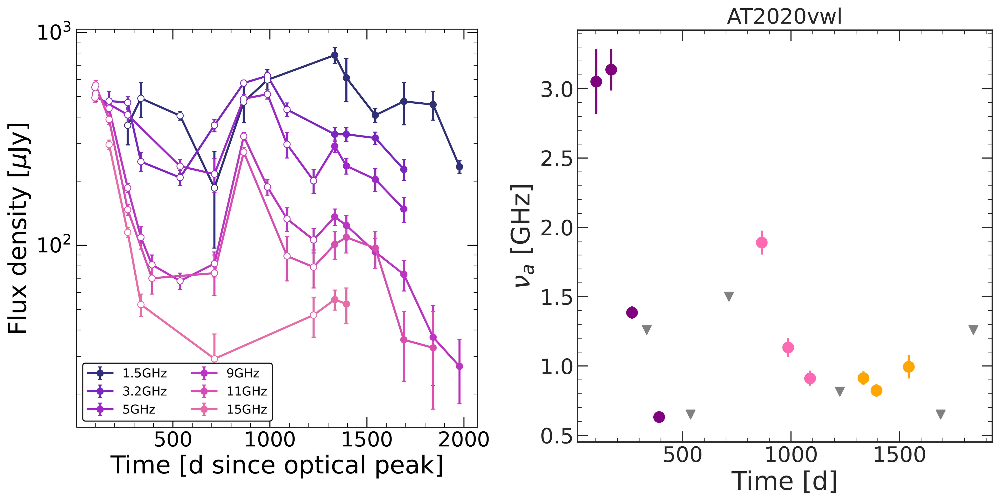
图注：{\(\bf\) Left:} The observed radio lightcurves of AT2020vwl from 1.5--15\,GHz. Data from 0--1225\,d are from \(\citet{Goodwin2023}\) and \(\citet{Goodwin2025}\) (open circles). The new observations presented in this work (closed circles), from 1334--1718\,d post-optical peak, show a distinct re-brightening event observed at all frequencies, which we interpret as a collision between the slower wind and faster delayed jet launched by the TDE. {\(\bf\) Right:} The evolution of the synchrotron self-absorption break $\nu_a$, based on epoch-by-epoch spectral fits. The first flare is plotted in purple, the second flare in pink, and the third flare in orange. A subtle increase in $\nu_a$ (observed in the third flare) is exactly what is predicted under the wind-jet collision framework put forward here. The grey inverted triangles indicate upper-limits on $\nu_a$ where the peak was not well constrained by the spectral fitting procedure.
对应解读：对应“建议重点查看的图表”中的多频射电光变图与射电谱峰演化图，以及“关键图表逐图导读”的图1、图2解读。
入选理由：这是支撑本文核心发现的最关键图：左图直接展示 AT2020vwl 在 1.5--15 GHz 的新观测闭合圆点和第三次多频再增亮，右图给出同步自吸收频率 \
\(u_a\) 在三次耀发中的演化，并指出第三耀发阶段存在符合喷流—风碰撞预期的 \
\(u_a\) 增加。它同时验证了第三峰是否多频出现以及谱形是否系统变化。
来源与置信度：\(arxiv_source\)；high；\(arxiv_source\) / main.tex:figure[3]
Fig04
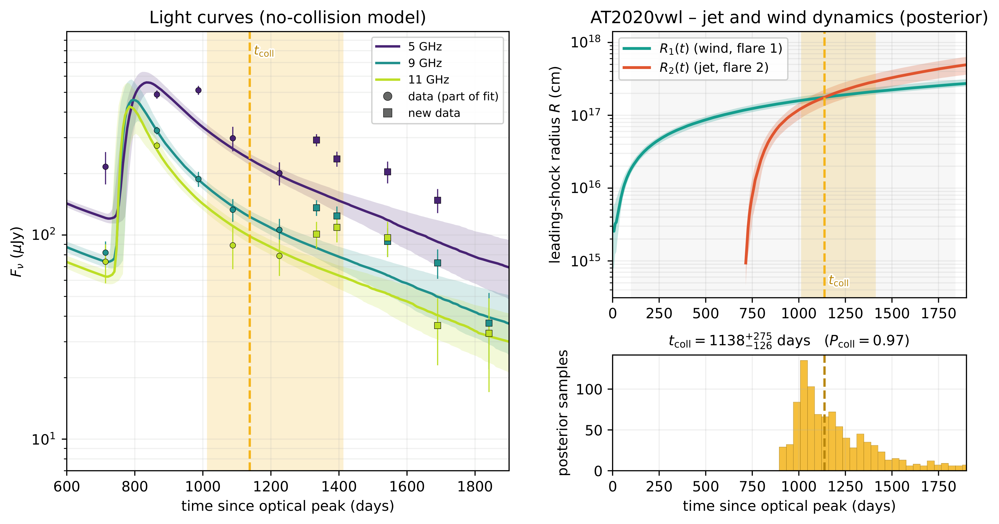
图注：The inferred jet-wind collision time, and the subsequent radio evolution of AT2020vwl. On the left we show the observed and modelled lightcurve of the second radio flare (note the time axis, the first radio flare is not plotted). On the right we show the expansion histories of the two forward shocks in the radio model used to fit the light curves (Fig. \ref{fig:radio_lc}), which (as the jet moves faster than the wind) are inferred to cross at $t_{\rm coll} = 1138^{+275}_{-126}$ days from optical peak. The uncertainty here comes from posterior samples of the MCMC fit to the light curves. At a time consistent with this, AT2020vwl undergoes a third flare observed in multiple bands (left panel shows a subset of the data, all of which is shown in Fig. \ref{fig:radio_lc}).
对应解读：对应“风和喷流半径—时间轨迹图”、碰撞时间误差带检查，以及“关键图表逐图导读”的图3解读。
入选理由：该图直接给出 AT2020vwl 的喷流与风前向激波膨胀轨迹，并标出碰撞时间 \(t_coll=1138^{+275}_{-126}\) 天及其来自 MCMC 后验的误差范围。它是判断第三耀发是否真的出现在模型预言碰撞窗口内的核心证据，比单纯光变图更能支撑风—喷流碰撞解释。
来源与置信度：\(arxiv_source\)；high；\(arxiv_source\) / main.tex:figure[4]
Fig02
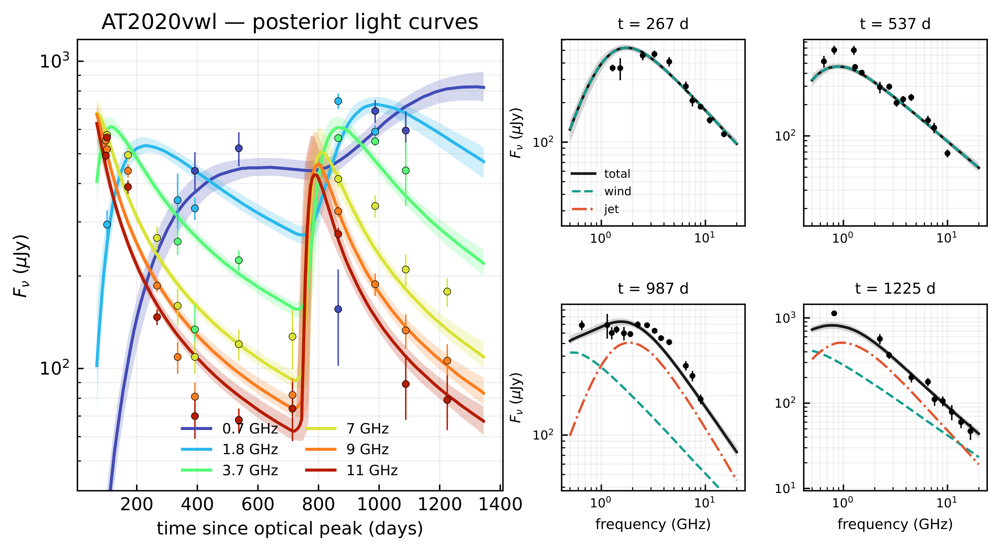
图注：Forward models of the radio light curves of AT2020vwl (first two flares) in a disk wind plus delayed jet framework. On the left we show representative light curves from a range of frequencies (we show only a subset of the 183 data points across 59 frequencies for visible clarity), while on the right we show radio spectra at four distinct epoch, highlighting the transition in spectral dominance from the wind (blue dashed) to jet dominated (red dot dashed) spectral components. The fit is by no means perfect, but clearly captures the bulk evolution of the AT2020vwl system across both frequency and time.
对应解读：对应“模型拟合”段落中对 prompt 风分量和 delayed 喷流分量的正向建模，以及“关键图表逐图导读”的图1、图2模型线分解。
入选理由：该图展示 AT2020vwl 前两次射电耀发的多频光变正向模型，并在谱图中分解风分量和喷流分量的相对贡献。由于第三耀发的预测依赖前两峰拟合得到的动力学轨迹，这张图能说明碰撞时间并非事后任意调参，而是由早期风和晚期喷流模型外推得到。
来源与置信度：\(arxiv_source\)；high；\(arxiv_source\) / main.tex:figure[2]
Fig06
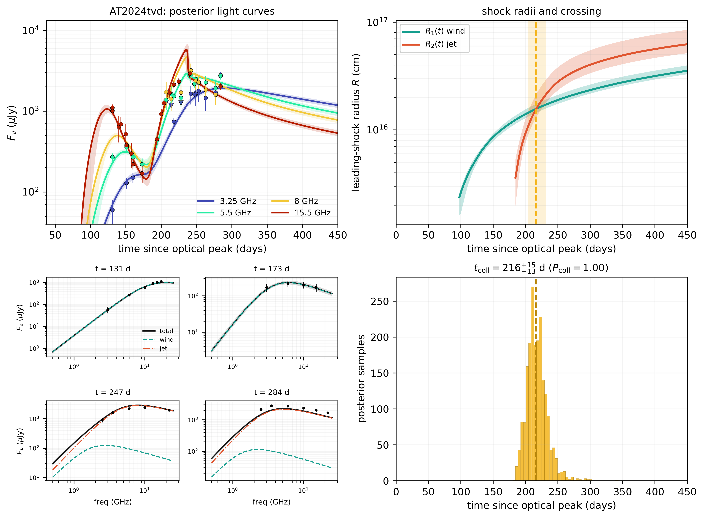
图注：Representative multi wavelength light curves and spectra (left panel; we show only a subset of the 84 data points across 18 frequencies for visible clarity) of AT2024tvd, as well as a dynamical model of its two respective shock fronts (right panel). AT2024tvd showed a very rapid second flare, which is inferred to be moving quickly $v_{\rm inj} > 0.3c$. This leads to an expected collision at a (well constrained in a formal statistical sense) time of $t_{\rm coll} = 216^{+15}_{-13}$ days after optical peak. We found, however, that the collision time is dominated by systematic uncertainty in the modeling which is enhanced owing to the rapid onset of both flares. There is tentative evidence for the beginnings of a radio flare at the final epoch of observations ($t = 284$ days post optical peak), and further radio follow up will either confirm or deny the predictions of this framework.
对应解读：对应“ASASSN-15oi 与 AT2024tvd 的预测光变图”以及详细解读中关于 AT2024tvd 即将进入第三耀发窗口的讨论。
入选理由：该图给出 AT2024tvd 的多波段光变、谱信息和两套激波动力学模型，并给出形式上较好约束的碰撞时间 \(t_coll=216^{+15}_{-13}\) 天。它直接支撑日报中“AT2024tvd 应优先安排多频监测以验证第三耀发预言”的结论。
来源与置信度：\(arxiv_source\)；high；\(arxiv_source\) / main.tex:figure[6]
Fig05
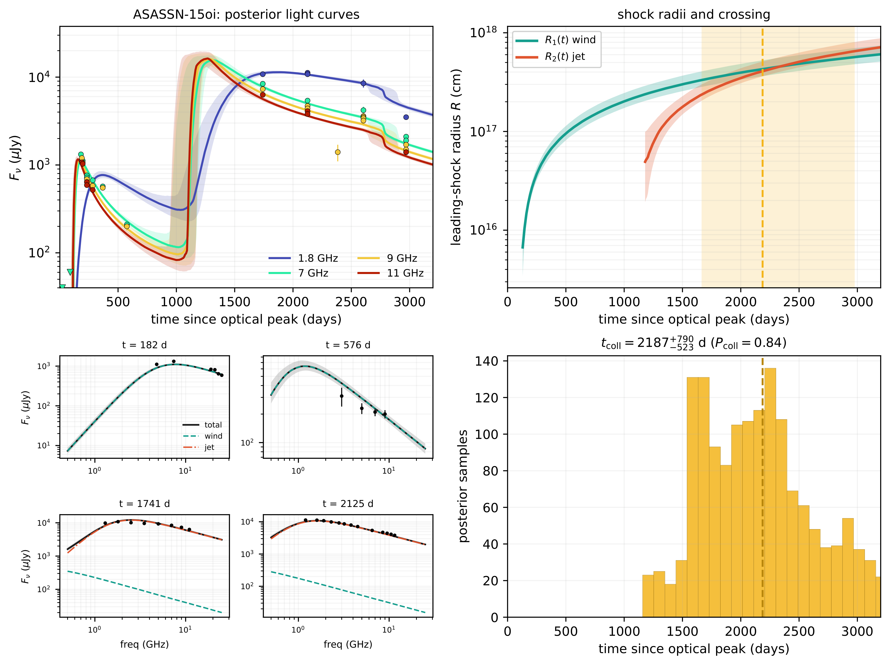
图注：Representative multi wavelength light curves and spectra (left panel; we show only a subset of the 117 data points across 52 frequencies for visible clarity) of ASASSN-15oi, as well as a dynamical model of its two respective shock fronts (right panel). Again, the second outflow is inferred to be more rapidly evolving than the first, leading to an expected collision at a (quite uncertain) late time of $t_{\rm coll} = 2187^{+790}_{-523}$ days after optical peak. While the data coverage is sparse (in both frequency and time) at these late epochs for ASASSN-15oi, and there is no evidence of a clear third flare, the synchrotron spectral peak of ASASSN-15oi is seen to show a break in its spectral evolution at around the time the collision is expected to occur (Fig. \ref{fig:vas_15oi_tvd}).
对应解读：对应“ASASSN-15oi 与 AT2024tvd 的预测光变图”以及详细解读中 ASASSN-15oi 可能仅表现为弱第三峰或光变展平的讨论。
入选理由：该图展示 ASASSN-15oi 的多波段光变、谱演化和双激波动力学轨迹，并给出较不确定的碰撞时间 \(t_coll=2187^{+790}_{-523}\) 天。它有助于解释为什么该源未必出现清晰第三峰，而可能只在谱峰或光变斜率上显示较弱变化。
来源与置信度：\(arxiv_source\)；high；\(arxiv_source\) / main.tex:figure[5]
Fig11

图注：The posterior corner plot for the double flare fit to AT2020vwl. Parameters are in dimensionless code units, with velocities in units of $c$, masses in units of solar, densities in cgs units, and all times measured in days.
对应解读：对应“参数后验或置信区间表”和“模型拟合”段落中关于 \(v_w\)、\(v_j\)、喷流启动时间、密度和其他参数是否由数据约束的讨论。
入选理由：这是 AT2020vwl 双耀发拟合的后验 corner plot，可用于检查动力学和环境参数的约束程度及退化关系。虽然它不如光变、谱峰和半径交叉图直观，但对评估碰撞时间和模型预测是否先验驱动非常重要。
来源与置信度：\(arxiv_source\)；high；\(arxiv_source\) / main.tex:figure[11]
强相关工作
这篇工作与 TDE 射电延迟耀发研究直接相关，尤其是 ASASSN-15oi 这类光学 TDE 后期射电增亮源，以及近年发现的多峰射电 TDE。它与早期强喷流 TDE，如 Swift J1644+57，属于同一大问题：TDE 是否以及何时形成喷流。但本文强调的是光学选取 TDE 中较弱、较晚、可能由吸积态转变触发的喷流，而不是一开始就由强相对论喷流主导的事件。检索关键词可用 “tidal disruption event delayed radio flare”, “TDE radio rebrightening”, “AT2020vwl radio”, “ASASSN-15oi radio”, “AT2024tvd radio”。
理论上，本文依赖两条基础线索：一是 Rees 式 TDE 回落和超爱丁顿吸积风，二是 Chevalier 型同步自吸收射电超新星/外流建模方法。可能的相反解释包括外部介质密度突变、长期能量注入、多次不连续喷流活动、或观测频率穿过自吸收峰造成的表观多峰。后续应检索 “circumnuclear medium density TDE radio”, “synchrotron self absorption equipartition radius”, “disk state transition jet tidal disruption event” 来比较不同模型。
同一事件 / 同类源线索：
相似工作：
基础理论 / 方法工作：
- https://ui.adsabs.harvard.edu/abs/1988Natur.333..523R/abstract
- https://ui.adsabs.harvard.edu/abs/2021ARA%26A..59...21G/abstract
- https://ui.adsabs.harvard.edu/abs/1998ApJ...499..810C/abstract
相反观点 / 张力线索：
（未提供）
说明
评分由 LLM 给出初评，再由本地阈值策略过滤；IACT、TeV 伽马射线和高能中微子天文学按重点方向处理。